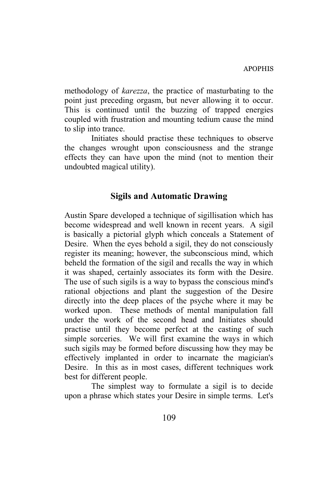
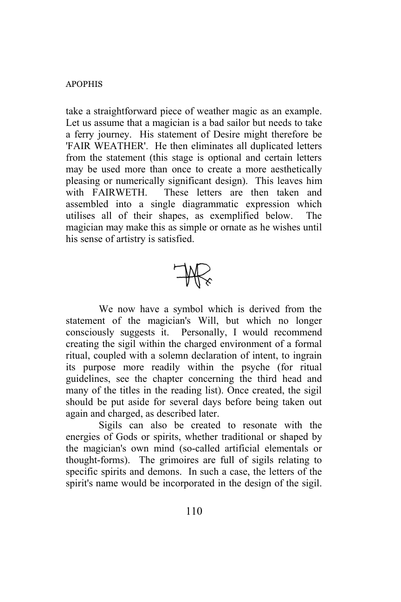
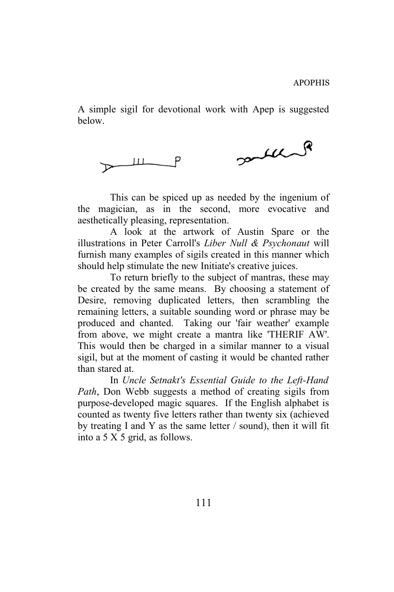

引言
龙之魔法毫无疑问是左手路径的一个学派。也就是说，它教导的是个体心灵的永生化和神化，这与右手路径相反，后者试图将该心灵淹没在宇宙合一的感觉中。龙之魔法在其本质上令人恐惧、疏离且反律法主义，但------对于少数成功者而言------它最终是解放、启迪和充满喜悦的。它绝对不适合胆小者或半吊子。随意的实验将被证明毫无价值，因为将自己从宇宙子宫中撕裂出来是一项意志和英雄主义的实践，这些品质只有通过激烈的斗争才能获得。
这听起来可能非常令人望而却步，但本就该如此。西方传说中的龙是恐怖和死亡之物。这些令人恐惧的原型与其他文化根源中的原型产生共鸣，例如提亚马特、伊甸园之蛇，尤其是埃及的阿佩普，原初的混沌之蛇。
本书采用古代七头龙的象征意义，指导读者如何在自己的心灵中唤醒这些头颅中的每一个，直到他真正成为一个魔法的龙，本质上是一位神明。这项工作是在一个经过仔细衡量的课程中呈现的，如果遵循它，将提供一个稳定而强大的觉醒过程。必须按照给出的顺序来接近这些头颅的工作，以确保一致和可靠的结果。挑选和选择至多可能导致一事无成，最坏则可能导致精神失衡。经验丰富的魔法师可能会倾向于走捷径以反映他们已经学到的东西。真正有经验的魔法师不会这样做，他们认识到总有更多的东西要学。
本书中编纂的教义来源于我作为塞特神殿利维坦教团前任大团长的经验，并在后来的独立阿佩普教团中得到了进一步发展。多年来，这些教义已经被许多强大的入门者测试过，并被证明是有效的。这个课程的最初步骤可能对许多魔法实践学派来说很熟悉，但后面头颅的工作，我相信，在印刷品中是独一无二的。左手路径的终极目标和本质从未像现在这样在实践步骤中被如此清晰地揭示过。
致那些将探测量 reptilian 心灵深渊、唤醒火蛇、并最终通过利维坦之眼看清一切的人们，我向你们致敬！
迈克尔·凯利 - 龙法夫纳 - 2009年冬
第一章
毒蛇的踪迹
什么是龙之魔法？
龙之魔法，顾名思义，是由龙的象征意义和能量驱动的魔法。尽管今天龙通常被归入奇幻小说（通常是三部曲，当然）或奇幻电影中，但它们的神话根源是深刻而黑暗的。我怀疑今天大多数对龙着迷的人是通过奇幻而不是神话获得的。这并不总是一件坏事。例如，托尔金的史矛革立足于坚实且可识别的话根源，而罗伯特·E·霍华德的柯南故事中蜿蜒前行的毒蛇确实是"敬畏之盔"的持有者。但流行奇幻中的许多龙与龙之精神相去甚远，仅仅成为虚构动物园中的另一种怪物。对于大多数当代人来说，重新发现龙之真正本质的旅程是一种令人不安和恐惧的经历，残酷地展示了他们自己宁愿不承认的自我面向。但是，自我认识和自我整合是通往魔法智慧和魔法力量的唯一真正钥匙。
龙之学说和实践在已出版的魔法书籍中很少能找到。当然，有几个非常显著的例外。肯尼斯·格兰特的提丰三部曲充满了对龙之潮流的引用，本课程的所有学生都应寻找并贪婪地阅读。唐·韦伯日益增多的塞特派魔法书籍------从《黑暗的七张面孔》开始------同样在理论和实践方面都是不可或缺的。本书末尾附有一份带注释的精选阅读书目。
龙之潮流在现代魔法书籍中出现得如此之少的其中一个原因是，它的目标和方法论毫无掩饰且不可逆转地属于左手路径。人们对此非常害怕。右手路径教导说，灵魂的目标是达到与神/女神/宇宙的极乐合一，或者在纯粹的右手路径哲学中（如佛教），则是达到一种宁静的虚无状态，即存在的终止。相比之下，左手路径则提倡个体的存在和终极的自我神化作为其目标。宇宙不是一个迷失自我的地方，而是一个宏伟的游戏舞台，自我可以在其中通过不断扩展的再显化循环来表达和发展其独特且不可溶解的本质。
然而，入门者学到的第一件事是，他对自己的了解几乎一无所知。人格是父母和社会条件的混合体，由媒体、广告和选择性教育塑造并重塑。学生的首要任务是剥离这些附加物，最终揭示他自己纯洁无瑕的核心。这种自我揭示的过程是利维坦之眼的首次开启，学习看清事物------特别是自己------的真实面目。即使这最初的实现也是困难和耗时的，比大多数现代人------当然也包括大多数神秘学家------愿意投入的努力要艰难得多。再加上这始终是一个令人恐惧和迷失方向的经历，会以不可逆转的方式改变入门者，你就真的不必太奇怪为什么左手路径会被回避和恐惧了。
但为什么是龙？当然是因为它们的神话和持久的意象，但也因为它们的生物学遗产。人类是龙的财富和力量的继承者，正如西格德和法夫纳的神话所充分展示的那样。人类脑干起源于爬行动物，因此龙象征的不是意识本身，而是那种孕育意识的 monstrous 原始潜力，其力量仍然深埋于内。在神话中，世界是由原始巨龙提亚马特的躯体形成的，而人类则是从那些原初神祇冲突中洒落的魔血滴中诞生的。许多龙的神话都隐藏着伟大的启蒙秘密。
左手路径在不同的人心中唤起不同的意象。这个术语起源于印度，在那里它特指那些加速灵魂旅程的性魔法技巧。在这个早期背景下，它的目标被认为与右手路径的目标无异：宇宙合一，或湮灭，取决于你的解释。两条路径的区别在于性的方法论，在于故意打破社会和道德禁忌以解放灵魂免受正统的束缚，以及在于它对女性的强调。左手路径提供了一条通往同一座山顶的更快，但也更危险的路线。
这个术语随着时间和文化变迁而演变，同时保留了其潜在的品质和方法论。在维多利亚时代，这个短语通过布拉瓦茨基和她的著作传入了西方，而像赫尔墨斯金色黎明会这样的组织的绅士淑女们会低声谈论它并发出严厉警告，将左手路径等同于黑魔法。不难理解，在那些刻板的时代，这种公开的性实践是如何被看待的。
阿莱斯特·克劳利------无疑是上个世纪最著名的魔法师------常常被无知者称为黑魔法师，事实上，当他心情好时，他有时也会自称黑魔法师。但克劳利的哲学和实践在这方面是矛盾的。在他的著作中，他看起来热切地信奉右手路径，但他巨大的自我和对生活的热情又将他标记为左手路径。他狠狠地嘲笑那些封闭自我的"黑兄弟"，但这些他描述的不变的外壳与真正的左手路径实践者的自我转化毫无关系。克劳利的著作虽然至关重要，但在这个主题上充满了矛盾。他似乎在自己的早期训练和个人魔法经验之间左右为难。但必须说，他的教义核心，《律法之书》，在语气和含义上完全是左手路径的。伊普西西姆斯·克劳利的工作仍然是无价之宝，唐·韦伯最近的书《阿莱斯特·克劳利：火焰与力量》，终于为我们提供了对克劳利体系和哲学的连贯的左手路径分析。
在纯粹实践层面，克劳利在他的"魔法"中使用性，以及他作为"巨兽666"所扮演的反律法主义角色，绝对是左手路径的方法论，它们确实导致了他那些刻板的同代人给他贴上这样的标签并因此回避他。随后，丹尼斯·惠特利等作家的小说将这个短语介绍给了更广泛的阅读公众。这两个因素------克劳利的恶名和惠特利的传奇------不可逆转地在西方将左手路径等同于撒旦教的做法。
左手路径并没有抗拒这种联系，反而因其而繁荣。1966年，安东·桑多尔·拉维，他在旧金山的住所长期举办惊悚派对和神秘仪式，正式建立了撒旦教会，作为其哲学的载体。拉维产生了一个精简且完全实用的魔法体系，该体系以个人权力和满足感为其存在的理由，"纵欲"是他的格言。作为一个天生的表演家，拉维将撒旦大祭司的角色扮演得完美无瑕。当他写下他的魔法书《撒旦圣经》时，它并非作为内部小册子出版，而是作为一本非常流行的大众市场平装书出版。
在此期间，肯尼斯·格兰特，他曾师从年迈的克劳利，受益于他导师毕生的经验，一直在运营提丰 O.T.O. 的新伊西斯分会。格兰特先生将克劳利的教义与他的另一位朋友和老师，伦敦艺术家/神秘学家奥斯汀·奥斯曼·斯佩尔的教义融合在一起，开拓了广阔的新领域。他以《魔法复兴》为始，开始将他的发现写成他的提丰三部曲系列。格兰特先生故意从未将他的书作为实践手册来呈现，但对于那些已经实践过克劳利方法论的人来说，一个完整的、行之有效的左手路径卡巴拉体系可以从这些卷中挖掘出来，这些卷大量地以左手路径的支柱------性和龙之魔法为特色。
与此同时，撒旦教会内部的分歧导致麦基斯特·迈克尔·阿奎诺从该组织辞职，以及其他几位知名成员。阿奎诺博士祈求黑暗王子的指引，并被塞特所召唤，塞特是古埃及神祇，是人类构想（或向其启示）的黑暗领主的最早形式。塞特启发阿奎诺博士写了一份名为《夜之来临书》的文件，该文件定义了一种新的哲学和魔法愿景，并将西方的左手路径与撒旦教固有的犹太-基督教污点隔离开来。成立于1975年的塞特神殿，至今仍是全球领先的左手路径启蒙学校。截至目前的左手路径历史和哲学的完整记述，可以在斯蒂芬·E·弗劳尔斯的《左手路径之主》中找到。
在塞特神殿内部，神殿大师们建立教团成为一种惯例，这些教团是专门的学校，他们可以在其中集中他们特定类型的教学。詹姆斯·刘易斯，神殿最早的大师之一，一个对蛇形着迷的人，创立了利维坦教团。该教团成立是为了研究迈克尔·阿奎诺受启发的著作《魔导书》中"利维坦宣言"的含义。教团将目光坚定地锁定在入门自我的未来进化上，并放弃了传统的魔法戏剧表演，转而支持对意志的直接和专注应用。在教团成立时，刘易斯大师通过一系列"阿佩普工作"寻求指导，这些工作命令他"教导他们不朽"。心灵的不朽化成为利维坦教团的核心焦点，最终产生了魔法过程和再显化哲学，这是当代龙之魔法的基石。
1996年，伊普西西姆斯·詹姆斯·刘易斯卸任利维坦教团团长一职，我接任了大团长的职位。我努力巩固他所取得的突破，并将他的想法完全付诸实践。1996年塞特神殿大会上我接任大团长职务的教团仪式，是我们有史以来上演的最离谱的戏剧性仪式，正如俗话说的"有千头大象"。但这是一次最后的狂欢。我将我前任的"仅凭意志力"进行魔法的愿景正式化，几年后在慕尼黑大会上，教团工作在一个没有仪式长袍、没有道具或器具、没有剧本的黑暗房间中进行。所有参与者都宣称这是他们参加过的最紧张、最具毁灭性力量的小组工作之一。
在我担任大团长期间的教学中，包含了构成本书大部分内容基础的核心发现。将魔法实践打磨到最赤裸、最简朴的本质后，我能够凭直觉感知到一个新的、更准确的模型，解释魔法究竟是如何运作的。我将这个新模型称为"虚空魔法"。利用这个模型，我能够描绘出驱动魔法并追求心灵不朽化的内在过程。我将这个过程称为"欲望魔法"。从这两个理解中，我能够准备我的个人印记，即下图所示的利维坦之眼，它以符号形式包含了龙之魔法的全部秘密。这三件事都在本书中进行了详细讨论。
随着时间的推移，我也卸任了利维坦教团大团长的职务，将指挥权交给了另一个人，而我则花时间反思我的教义，让它们孕育。我最终从塞特神殿辞职------这不应被解读为对该优秀启蒙学校的任何批评------因为我知道我需要锻造一些新的东西作为我教义的载体，一些与我在其中获得大师头衔的神殿完全和谐但又有所区别的东西。因此，我建立了独立的阿佩普教团，作为我在利维坦教团内核心教义的再显化。为了创立该教团，我进行了一系列新的阿佩普工作，以建立与多年前詹姆斯·刘易斯创立利维坦教团时所依据的那些工作的共鸣。这些启示令人震惊，将我的想法重铸成一个连贯的课程，该课程围绕着原始巨蛇七首的古老而强大的象征意义构建。这个课程在教团的期刊《阿波菲斯》中介绍，现在在本书中完整解释，以便其他人能够踏上毒蛇的踪迹。塑造该课程的阿佩普工作完整记录也重印在本书的适当位置。
阿佩普教团是一个保护伞，阿佩普派的入门者可以在其下分享他们的工作和想法。这个过程仍在继续，在撰写本文时，新项目正在进行中。2005年底，我开始准备将教团的教义通过本书更广泛地传播。我这样做不仅是为了分享我们所学到的，并鼓励他人寻求自己灵魂最深处的秘密，而且也是作为一个非常刻意的龙之魔法行为，确信如此播撒到世间的种子将结出奇怪的果实，并将因此发现再显化启蒙螺旋的新转折。我热切地期待着。
一个不神圣的三位一体
龙之魔法并非特定于某个万神殿，阿佩普教团的入门者在埃及、条顿和以诺神祇等传统中，都进行了极其有效的魔法工作。因此，所召唤的神祇形态的实际面孔和身份，很大程度上取决于个体实践者的亲和力、美学观以及文化/基因印记。
然而，在所有情况下，都会发现三个主要原型或形态在龙之启蒙过程中占主导地位，这些都不能被安全地排除在工作之外。事实上，除非入门者能够与这些神圣存在中的每一个建立至关重要的个人联系，学会在没有自欺的情况下识别它们的提示，并根据所收到的指导果断采取行动，否则根本不会有任何工作。
这些形态中的第一个是黑暗领主，意识之神。第二个形态是猩红女士，欲望女神。第三个形态是巨蛇，再显化的力量。下面将详细讨论每一个。通过入门者与这些神祇的互动，如果一切顺利，最终将诞生一个新的个人神祇。这就是个人的守护神------在其他术语中也称为神圣守护天使------将在本书后面的适当位置讨论。
黑暗领主
黑暗领主，首先且首要的是，是意识之神。意识------人类存在的主要定义因素------被认为源自于黑暗王子，魔鬼，这似乎很奇怪。但如果你愿意考察任何神话，这都是真实的。在圣经的伊甸园神话中，人类通过巨蛇的怂恿品尝禁果而获得了自我意识。在古埃及，令人敬畏的塞特是个体性、自我意志的反叛者的捍卫者，出现在一个结构化和僵化的社会中。他是反对众神的众神。在希腊神话中，人类只有在普罗米修斯从天堂偷走火种时才获得了意识，这是嫉妒的众神从未打算让人类拥有的意识。在北方神话中，人类被 grim 而黑暗的奥丁神作为三位一体的礼物赋予了意识、智力和存在。例子不胜枚举。在每种情况下，人类的意识和自我感都是由一个黑暗实体------它本身就是一个有意识和反叛的存在------赋予的，这是对顺从法则的蔑视。
黑暗领主------自我礼物的赠予者------因此是左手路径的首要神祇，因为该路径的目的是使自我本身神化，提升和发展该礼物达到最大程度。
在每个神话中，都是黑暗之神将意识和自我决定权赋予了人类。右手路径的传统神祇和当权者谴责这些黑暗之神及其追随者，将人类标记为任性叛逆，要求我们服从并回归臣服。在犹太-基督教神话中，我们是无价值的罪人，必须放弃我们自己邪恶的欲望，并投身于上帝的仁慈；我们唯一的目的就是崇拜他并实行自我否定。在埃及，占主导地位的邪教坚持遵守社会规范，根据宗教法律的严格规定生活。服从、自我否定、奴役：这些是右手路径的信条，无论你看向何处，它们都存在于所有主流宗教中。它们是可鄙的，是对我们自己有意识存在的侮辱。
然而，黑暗之神反抗这些态度。在北欧传说中，奥丁杀死 monolithic 巨人伊米尔，以便一个新的、有活力的世界能够诞生。他将意识和狂喜注入人类，以便通过我们的天才产生新的创新和欢乐。他预见到在这个沸腾的变革矩阵------诸神黄昏------中需要变革，并运用他的狡猾和技巧来确保他自己通过这种变革的蜕变和重生。
在埃及神话中，当我们审视塞特作为左手路径领主的角色时，有三个事件尤为突出。首先，他是自我创造的。他不是以自然方式出生的，而是将自己从收缩的子宫中撕裂出来，进入显化。然后他将他的礼物赐予人类，将个体身份和自我意识的火花赋予我们的物种。在神话中，他成为奥西里斯------死亡之神------的谋杀者，奥西里斯用他束缚的裹尸布扼杀创造力和个性。塞特有效地杀死了死亡本身。
塞特不是一个舒适或温顺的神。一方面，他可以是愤怒和激情的灵体；另一方面，他又可以像爬行动物一样冷酷和精于算计。但他始终是他自己，从不做奴隶。他赋予人类反抗束缚的能力，雄心壮志和远见，以及以自由和热情的生活的意志，而不是作为受他人 whim 摆布的温顺绵羊。事实上，他将神明的神圣之火------黑焰------深植于我们物种的核心，使我们有能力成为像他一样的存在。
当然，这些都有代价。可悲但简单的事实是，右手路径的束缚和令人窒息的正统宗教，是大多数人希望和观点的真实反映。当面对无限的太空和永恒的时间时，大多数人都对自己心灵的看似无限性以及一个充满想象力和主观反思的整个宇宙存在于他们内部这一认识感到恐惧。面对浩瀚，他们的第一反应是否认它，逃跑并躲在岩石下，被他们自己的自由和潜力吓坏了。因此，他们寻找并服务于那些称他们为罪人和异端的神父、祭司和政客，谴责自我的亵渎，并强制推行顺从、服从和令人舒适的狭隘视野。而不可避免的是，那些蔑视这些戒律、沉醉于自我意识和觉知的人，被贴上异端的标签，并以最残忍的方式被消灭，施加于他们的痛苦反映了那些盲目偏执狂内心的痛苦，他们软弱的内心之眼无法承受冉冉升起的新星的光芒。
所以我并非要假装左手路径适合所有人。它适合某种类型的思想者，一个逃避舒适顺从的外来者，并接受自己的本质作为其存在的唯一理由。它适合那些渴望在追求美、新体验和进一步成为的过程中，将知识和可能性的最前沿推向更远的先驱者。它适合那些将生活中的所有喜剧和悲剧视为戏剧、视为壮丽的万花筒般的蜕变、即使在其最痛苦的时刻也视为欢乐之事的人。它适合那些能用雷鸣般的声音说出塞特的格言的人："Xeper：我已生成"。如果你不是这些人中的一员，那么龙之魔法不适合你，它只会带给你恐惧和痛苦。对你们，我会说，走自己的路，舒适地享受生活。这里没有适合你们的东西。
但对于那些以自己的身份为乐、以自己作为自我意识和独特存在为荣的人，对于那些寻求催化并实现这种本质自我以实现终极自我神化目标的人，对他们来说，没有比塞特更伟大的神或榜样了，他从收缩的子宫中撕裂自己，成为战争和风暴的野性力量，点燃了人类心中同样的非从众火焰，并最终杀死了死亡本身。为了集中和再显化我个人的工作，我在十年后从塞特神殿辞职。但我内心深处始终保留着我作为塞特祭司的身份，并将永远如此。塞特是我们种族已知的黑暗领主最古老的历史表达，他的形象、神话和活生生的本质确认了他就是黑暗王子。
此外，塞特是一个完全与犹太-基督教世界观模式脱节的神。他不是一个永远从属于一个以神秘方式运作的无所不能、无所不知的统治者的魔鬼。他是反对停滞众神的众神，他支持英雄------或者实际上是反英雄------个体对抗同质化大众的事业，并且他以可怕的力量这样做。欲望、狂喜、凶猛：这些是塞特及其祭司的特质。但不是作为使人衰弱的成瘾；它们是意志的享乐主义表现，是欢欣鼓舞的力量，而不是充满内疚的痛苦。塞特不是基督教中处于劣势的魔鬼，他是不会被束缚的征服力量。塞特本身并非反基督教：基督教根本无关紧要，它无关紧要。
我们或许可以停下来问问，为什么像塞特这样的存在会费心将意识的礼物赐予我们的物种。想到两个可能的原因（随着你的启蒙进展，无疑会出现额外的、更复杂的因素，但这些最初的考虑是主要的一对）。首先，我们不妨想想为什么人类魔法师会寻求同伴。为什么加入教团、神殿等等？部分是为了陪伴，部分是为了找到志同道合的人来测试我们的想法，他们可以提供反馈和热情------或者在必要时提供纠正和批评------从而激励我们进一步"生成"。由于我们自己的意识在定义上必然类似于给予者的意识，我们可以假定塞特也渴望陪伴。确实，在阿奎诺博士的《夜之来临书》中，塞特的入门者被要求像接近朋友一样接近他。
塞特将意识赐予我们物种的第二个根本原因，是为了帮助他自己保持他自己的自我感。想想处于塞特位置的存在，宇宙响应他的意志并根据他的欲望重塑自身。宇宙将成为塞特的一面简单镜子，反映和表达他的每一个想法。他和它最终将无法区分，他将失去他的边界，他作为一个独立实体的自我感将消失。最终，他将不可避免地屈服于惯性睡眠，意识将再次失去。正是通过我们的差异，我们定义了自己，为了提醒我们自己是谁以及什么使我们的本质充满活力，我们的意志需要遇到阻力，需要遇到一些不是我们、并且可能与我们计划相切的东西，迫使我们适应和重新评估。塞特也是如此。他是一个战士，热爱挑战。因此，他将意识作为一种魔法礼物赋予其他生物。现在，宇宙将受到许多意志的推拉，有些更强大，有些较弱。但它将不再是塞特的一面简单镜子。现在他可以追求他的目的，努力克服冲突的潮流，通过力量而非默认获胜。通过每一个行动，他自己的身份被重新确认，他不再有被吸收的风险。
有趣的是，考虑到将意识植入我们物种之后，塞特不愿进一步干涉。我们被赋予了自由自我意志的能力，这就是我们得到的所有礼物。如果你发现自己陷入困境，向塞特求助是没有意义的。最好的情况是他不会这样做；最坏的情况是他会因你的软弱而愤怒。他给了我们智慧和意志，让我们通过自己的思想和行动来决定自己的命运。如果他进一步干预并为我们解决麻烦，那将贬低和否定他赋予的自我决定权的尊严。实际上，这将意味着夺走他已经给予的东西。
既然如此，你可能会问接近塞特到底有什么意义？这样做有两个原因。第一个是一种只有真正自由的人才能知道的纽带形式：它是一种忠诚和荣誉的纽带，是一种渴望公开承认造就我们的人。第二个是，塞特喜欢与那些积极运用他的礼物来重塑自己和世界的人为伴。对这样的人，他可能会在一种本质的交换中揭示他自己的目的和洞察，这可能最终催生出一个新的塞特祭司，一个能够以黑暗王子的声音和权威说话的人。这是一种灵魂的接触，双方都因对方而丰富，同时又保留了自己的存在。
猩红女士
在神话中，塞特有三位妻子，用一位当代塞特女祭司的话来说，她们每一位都是"强悍的泼妇"。她们是奈芙蒂斯、阿纳特和伊什塔尔。奈芙蒂斯是埃及女神，另外两位是引进的外来战争与情色女神。她们都不是娇弱的花朵。也许将这三个强大的妻子赐予塞特，其他埃及众神可能希望这些女人能成功地驯服他一点。她们没有。相反，这些女神的影响激励了塞特变得更加凶猛。
猩红女士（如果你是女性，则是魔性情人）的奥秘是对"他者"的追寻。爱是创造之法。两个身体结合，从他们的结合中产生第三个。这在所有层面都是真实的。在原子层面，原子相遇并结合形成更复杂的分子。这些分子再次创造更复杂和特化的形式，直到最终产生生命系统。原子本身由亚原子粒子之间的关系维持。复杂的生命系统交配并产生后代，这些后代是父母双方特性的独特组合，并更多一些。在宇宙尺度上，气体、灰尘云和引力最终可以诞生恒星和行星。是的，爱是创造之法，既然魔法师特别具有创造力，爱就是存在于我们之中并通过我们的强大力量。我们理解它、需要它并运用它。
如前所述，塞特没有被他的三位妻子束缚，而是受到她们的启发，在唐·韦伯的《赫布-塞德之书》中，塞特公开谈论他的挚爱，她的秘密名字是"胜利"。这就是诺瑞亚，他妻子奈芙蒂斯的真名（奈芙蒂斯是一个头衔，而非名字）。魔法之爱必须始终是鼓舞人心和解放的，而不是限制和束缚的；它是星光之美，而非习俗的沉闷。正如阿莱斯特·克劳利所说，"爱是律法，爱受意志引导"。魔法师------他们是伟大的爱人------必须确保他们总是爱得伟大。
我们或许可以在此暂停，思考为什么这对于左手路径的实践者而言是一个如此重要的问题。为此，我们必须首先提醒自己，什么使我们与右手路径区别开来。我们的西方文化偏见意味着，当我们想到右手路径时，我们立刻想到的是几个世纪以来毒害我们社会的犹太-基督教宗教。事实上，这些是腐败的扭曲，是右手路径自我否定哲学和贪婪教士狂热主义的结合，他们利用那种哲学来暴虐他人，因为他们对自己感到厌恶。如果我们想看到一个纯粹的右手路径例子，我们必须看看佛教更温和的哲学，我们因其失败主义目标而不是其狂热的罪恶感而拒绝它。佛教认为悲伤是坏事，悲伤是欲望的结果：我们渴望我们得不到/不能拥有的东西，这使我们痛苦。因此，佛教徒寻求消除欲望，转而进入一种惰性的极乐状态。然而，左手路径认为，悲伤赋予生命价值和意义，是一种强大的激励力量。如果你感到悲伤，这表明你生命中的某些东西足够宝贵和珍贵，让你深切地感受到失去它的痛苦；这是一件积极的事情。生命是一场冒险，一次探索，一件美的事物。对我们来说，欲望是我们最大的力量。
关于欲望和美感的整个问题，将在本书稍后关于阿波菲斯第五首的工作中进行相当深入的探讨。但在最基本的层面上，猩红女士法则使魔法师保持新鲜。她代表了他所认为神圣和崇高的一切，他所奋斗和渴望的一切。她体现了在他自己的自我中发现但尚未显现的那些品质，她也体现了在他自我之外的宇宙中那些与他互补、使他完整的品质。然而，将她仅仅视为这些事物的投射是一个严重的错误。超越这些，她本身就是一个存在和力量。
从上述内容显而易见，真正的猩红女士是一位女神，而不是一个人。然而，魔法师们自然会寻求找到一个合适的肉体伴侣，通过她，女神可以清晰地向他们显现。阿莱斯特·克劳利当然这样做了，他在寻找她的过程中有一系列的情妇，最著名的是莉亚·赫西格。但在他的魔法记录中，他清楚地表明他首先爱的是巴巴伦。我认识的几位当代贤者似乎也找到了最能体现他们抱负的肉体伴侣。
在大多数爱情事件中，据说关系应该建立在妥协之上。对于猩红女士来说并非如此：她是完全不妥协的。但爱她的魔法师也是如此。他的意志是钢铁般的，完全专注于他的工作。但是魔法师和他的女士共享一个愿景，他们不妥协的天性都指向同一个方向，彼此激发创造性的火花，促使更伟大的努力、更伟大的英雄主义、更伟大的事迹。这就是为什么魔法师受到猩红女士女神和为他化身她的罕见凡人的如此激励。这也是为什么魔法师------尽管是充满激情的爱人------在处理普通人际关系方面臭名昭著地糟糕。意志和工作就是一切，如果一个伴侣不能完全接受和支持这一点，那么伴侣将被抛在后面。
这凸显了左手路径在爱情和人际关系问题上带来的主要视角差异。大多数浪漫关系的哲学仍然是穴居人的哲学。它主要是关于占有和占有者的个人自豪感。人们说"我的妻子"、"我的男朋友"，或者在最无知和原始的形式中说"我的婊子"。这种哲学导致了所谓的激情犯罪："如果我得不到你，谁也得不到"。与此相伴的、更常见和次要的是整个不忠的概念。请问，对什么不忠？与这种占有欲相比，左手路径完全同意克劳利的宣言："人的肉体不应有财产"。相反，我们为我们挚爱的自由而欢欣鼓舞，我们品味她的每一次新的生成。右手路径在婚姻中寻求合一，但我们知道是我们的差异吸引了我们，我们崇拜我们的爱人，因为他们是他们那样独特而美妙的存在。他们激励我们，丰富我们，但他们不是我们的财产，我们也不是他们的。
上述态度既不拥护一夫一妻制，也不拥护滥交。它只是坚持入门者必须实践"受意志引导的爱"。换句话说，寻求最能激励你的工作并让你充满热情的爱。一个好的爱人是自我发现和自我表达的催化剂，最终通向自我蜕变。任何不足都只是消遣、惯例甚至是监狱。完全符合你欲望的爱。
当然，真正和持久的爱，如前所述，是神圣的对立性别存在，是那位提供与你自身身份平衡的女神，她体现了你所缺乏的一切。它是浮士德对永恒女性的爱，它永远引领我们向前。它是对符文娜的爱，神秘女士，她总是在下一个地平线之外。它是心灵对其"他者"的永不满足的渴望。
"猩红女士"这个术语非常古老，可以追溯到伊什塔尔秘仪。当它被用来描述《圣经·启示录》中巨兽的伴侣时，它已经很古老了。但让我们从巨兽那里寻求一个定义，因为正是通过阿莱斯特·克劳利的工作，这个术语才为当代魔法师所最熟悉。在《巨兽666的魔法记录》中，克劳利在切法卢时期的魔法日记里，我们找到了猩红女士的如下定义："巨兽力量的载体"。这是一个绝对且真实的定义。
那些对这一明显性别歧视的定义感到愤怒的人请举手。现在，那些对我将此定义辩护为"绝对且真实"（还用了大写字母）而感到更加愤怒的人请举手。克劳利经常受到这种批评，声称他是厌恶女性的。当然，有些人为他开脱说，尽管他对女性的看法和待遇以我们的现代标准来看很差，但在他生活的时代已经是非常开明的了。他不断与他那个时代的偏见和成长经历作斗争，宣称"每个男人和每个女人都是一颗星"。但是，作为一个现代魔法师，生活在一个机会平等的时代，我怎么敢重复他关于猩红女士是"巨兽力量的载体"的定义呢？让我感到沮丧的是，我不得不阐明显而易见的事实，但我们的思想被政治正确的议程塑造得太厉害了，以至于我们往往忘记停下来为自己思考。难道我真的不需要指出，上述定义的逻辑且必要的补充是，宣称巨兽是"猩红女士力量的载体"同样绝对且真实吗？
确定了猩红女士首先是一位女神之后，我们可以问这位女神可能采取什么形式。她的面貌将因个体入门者而异。我认识的一些魔法师通过向塞特的三个妻子之一------奈芙蒂斯、阿纳特或伊什塔尔------屈膝，获得了极大的青睐。巴巴伦，克劳利倾心的以诺女神，是她面貌和形态的另一个完美例子。但最终的选择很可能不是你能够做出的。你可以从选择一个外观上吸引人的女神形态来接近她开始，但当她回应时，她会穿上她选择的形象。她以古凯尔特女神芭布的形象来到我这里，因此我是女妖崇拜的信徒。当她真的到来时，那将是 unmistakable 的。
所有这些都引出了一个问题：猩红女士是否必须以肉体形式向入门者显现？这个理念是否需要化身？克劳利当然认为是这样，他一生都在寻找她，尽管他总是将巴巴伦作为女神放在他思想的最前沿。我认为，假设任何特定的人将成为她力量和影响的唯一渠道是错误的。她会在你一生中通过许多面具和伪装与你说话，经常是她临时的载体甚至没有意识到这一点，或者至少我的经验是这样。克劳利或许错误地期望他的每一位情妇都是"那一个"，而不是接受每一位都是她所是的一颗星。这并不是要否认，一位熟练的异性魔法师不能有意识地、有意志地长期将自己显现为你的互补者。我认识几个以这种方式建立多年的强大而神奇的伙伴关系。但在这种情况下，你当然也必须为她提供她自己的互补者，以便使交流持续，彼此滋养和激励。
事情的真相似乎是，猩红女士会通过许多女性揭示她自己的各个方面，有些是短暂的，有些是长期的，但一位专注且兼容的同伴入门者也有可能成为她更集中的渠道。选择在于个体入门者的天性和意志，以及他所培养的关系类型。"随心所欲地尽情享受爱，在你愿意的时候，地点，和任何你愿意的人！"正如克劳利的《律法之书》所说。然而，我想在此根据我自己的经验补充一点，我在魔法文本中很少看到这一点被记录下来：距离确实可以使心更贴近，并且可以激发魔法师达到渴望和创造力的狂热顶点。以下摘录自一篇题为《去与回》的论文，这是我在我的女妖工作期间的一份魔法记录，就在我的肉体爱人远渡重洋之后写成：
"在人看来确实是残忍，但在内心深处，我知道并且我知道她在离别中同在。简单的真相是，家庭生活本会是我工作的障碍。我独自工作，别无他法，如果没有未满足的欲望和不满足的刺激，我的工作会更困难，也更不真实。我品尝这些事情是为了了解它们，但它们不是我之所是，也不是我应该成为的样子。
"对这类事物的渴望和需要是必不可少的，但我觉得她会永远让它们保持一定距离，因为她跳着她挑逗的舞蹈。而我因此变得更好，我通过它成为我自己的自我\...\...
"多么狡猾的表演，我应该同时被激励和刺激，却又被保持遥远和渴望。也许是残忍\...\...但尽管如此，这是一个完美的平衡，以带出我真正的自我。我们需要的并不总是我们想要的，我很早就明白满足对我来说非常有害。而这种跨越距离的欲望法则使我更接近女妖的深层根源。巧妙地使用大写字母，可以说，当需求强烈而她又遥远时，她就在附近。"
所有这些就是说，她的目标不是人类的目标，也不是你自己的目标。召唤猩红女士将不可避免地在你生活中引入力量，这些力量将以你需要的、但不一定是你从以前的角度想要或选择的方式，不可逆转地改变你。
剩下要指出一个明显的事实，这个事实无疑被政治正确者在他们寻找错误的热情中忽略了。我完全是从异性恋男性魔法师的角度来写这篇关于猩红女士的记述的。作为一个男人，我别无他法：我走的是奥丁之路，而非弗雷雅之路。需要一位女性入门者来写这一章的另一半。因此，对性别歧视的指控被完全驳斥了。我只能写我所经历的道路。克劳利也是这样做的，并且经常因此受到不公正的谴责。但只有傻瓜才会夸夸其谈那些他未曾体验过的奥秘。
任何有洞察力的入门者都应该清楚，对男性魔法师潮流成立的事情，对女性魔法师潮流来说，方向将是相反的。男性倾向于将黑暗王子作为启蒙榜样，并渴望猩红女士的奥秘：女性倾向于将猩红女士作为启蒙榜样，并渴望黑暗王子的奥秘。但每种性别都会从每位神祇那里汲取灵感和滋养，尽管关系会有所不同。欲望具有同性恋或女同性恋倾向的入门者，将发现适合他们需求的进一步奥秘。
巨蛇
我们神祇三位一体中的最后一位是巨蛇，古老的巨龙。龙形神祇在许多古代传说和神话循环中占有重要地位。苏美尔的提亚马特是原初深渊的巨龙，一位被新的秩序众神杀死的混沌女神。但她仍然存在，因为她的血肉构成了宇宙的结构，从她和她的族类流出的鲜血中诞生了恶魔和人类的种族。因此，她的意识现在深深地居住在我们内部，在思想之根处。我们是她血液的孩子。
《创世纪》的圣经神话中也出现了类似的主题，其中蛇说服夏娃吃下善恶知识树的果实，并与亚当分享。因此，原始人类通过蛇的引导获得了意识和自我感，伊甸园的惰性被粉碎了。值得注意的是，这一伟大成就是通过女性实现的。左手路径因使用女性作为启蒙者而闻名，主要是在性仪式中。在许多古老神话中，如提亚马特的神话，巨龙本身明确是女性。蛇的承诺是"你们将如同众神"，在最终源自圣经传说的卡巴拉体系中，蛇之路提供了向上攀登第二棵禁树------生命之树的蜿蜒路线，允许人类通过由蛇唤醒的自我之神性蜕变，在冠冕处赢得神性。
巨蛇在名为利维坦的实体中找到了美妙的形式，这是一只巨大的海兽，它自己庞大而盘绕的运动及其居住的深海都体现了原初混沌。正是以利维坦的名义，蛇形意识通过詹姆斯·刘易斯在塞特神殿中兴起。利维坦被定义为"连续性和永恒存在的原则"，并塑造了神殿对不朽的看法，最终诞生了再显化的魔法过程。
在埃及，一个非常熟悉蛇的土地，巨蛇以多种象征形式显现。有王权的乌赖乌斯------蓄势待发的眼镜蛇------装饰着法老的王冠，从而象征着启蒙和自我神化的顶峰。有双蛇梅亨，其奥秘在唐·韦伯已出版的著作中有所提及。但主要为了我们的目的，有阿佩普------或希腊语的阿波菲斯------迷惑与幻象之蛇，它试图吞噬太阳。
阿佩普和塞特之间的关系，在埃及神话发展的各个阶段（包括时间和地理上的）是完全不同的。在某一点上，他们是敌人，每天日出时战斗，塞特是唯一能够抵抗巨蛇催眠凝视的神，将它击退并防止它吞噬太阳船。在其他时候，他们被视为盟友，两条愤怒的巨龙反对埃及宇宙的庄严秩序。在最终混乱的神话中，他们的区别完全模糊了，阿佩普被视为塞特的另一种形式。
这种混淆是可以理解的，尽管令人失望。通过考察他们所体现的原则，两者之间的关系很容易被发现。塞特被定义为"孤立智能原则"；阿佩普被定义为"连续性和永恒存在的原则"。塞特是自我秩序原则；阿佩普是混沌和永恒更新原则，从一刻到下一刻从不相同，却具有单一永恒的本质。他们的敌意/对立被解释为，因为塞特通过将自己强行从母亲的子宫中撕裂出来，即从利维坦的流动潮流中，创造自己为一个独特而主权的存在，自我创造和自我维持。然后，他必须维持自己的本质，并抵御被吸收回混沌的倾向。但相反的趋势同样具有破坏性；没有冲突和对自身限制的持续考验，他将进入停滞状态并僵化。因此，他与阿佩普嬉戏，在巨蛇的幻象中找到表达和快乐，我们将这种嬉戏称为生命。为了实现他自己的不朽，塞特因此必须拥抱体现永恒存在的巨蛇，但又不能被困在它的盘绕中并失去自己的身份。
龙之入门者的任务是双重的。我们必须寻求效仿塞特，将自己重建为主权的自我秩序存在，将自己从那些会压倒和淹没我们的力量的暴政中分离出来。然后，在赢得了自我的顶峰，不受生活打击的影响之后，我们必须欣然投身于生活舞台------阿佩普盘踞的深渊------的游戏中。最终，我们的目标是触及现实这个混乱漩涡的核心，并通过巨蛇本身的眼睛看到绝对，同时保持自我感。这是一条危险而不稳定的道路上的艰难平衡之举，但是，该死的，这很有趣！随着工作的进展，这些概念将变得更清晰，方法也将更明显。
在东方，左手路径作为一个独特精神方法的标签的诞生地，我们发现了巨蛇在昆达里尼的概念中显现，火蛇盘绕在脊柱底部。昆达里尼体现了那种灵与肉的独特综合，这是左手路径如此典型的特征。通过精心应用性能量激活，巨蛇解开盘绕，沿脊柱上升，与大脑结合，用其灵能充斥入门者的心灵。巨蛇仪式的这一性方面，将在我们深入考虑阿佩普教团印记------被称为利维坦之眼------的象征意义时，在本书中进一步讨论。
当然，龙在远东的文化和传说中受到尊敬，也在遥远的西方，那里的蛇在其神庙的石座上威胁地凝视着阿兹特克人。所有这些对阿佩普的入门者都具有巨大的潜在价值，并将为那些致力于研究和再显化其本质的人结出丰硕的果实。但到目前为止，阿佩普教团在欧洲的龙传说中进行了最深入的工作，发现了巨大的宝藏。
北欧神话充满了龙。从污染世界树之根的尼德霍格，到界定和限制显化世界的尘世巨蟒，再到维京人的龙头战舰，其雕刻的龙头将蛇的恐惧带给那些看到它们靠近的人。北欧巨龙的秘密传说是自我蜕变的魔法。当西格德杀死法夫纳时，他不仅仅是杀了龙，他成为了它。他品尝了野兽的心脏之血，并获得了它的力量、它的黄金宝藏和敬畏之盔------巨蛇的魅惑和魔法投射力量（将此与阿佩普的催眠凝视相比较）。这些北欧龙之奥秘在教团出版物《沃尔松格之歌》中得到了详细处理，该书由阿佩普入门者 D.V. 格拉尔撰写。
龙在凯尔特传说中也很突出。在蒙茅斯的杰弗里所著的《不列颠诸王史》中关于沃蒂根塔的记载中，梅林揭示了双龙的秘密。这个故事的象征意义------它掩盖了一种特别凶猛类型的西方昆达里尼------值得深入研究。电影《黑暗时代》的观众也会欣赏尼科尔·威廉森对梅林的超凡脱俗的描绘，他对龙的掌握被精彩地描绘出来。这种对塑造现实的能量矩阵的解释，在威尔士传说中由一条名为 Nwvre 的双足翼龙象征。梅林在这部电影中使用的龙之吟唱经常在阿佩普教团的仪式中使用。
当然，还有许多其他关于龙和大蛇的神话和传说，包括大量特定于某些地方的民间故事。你应该特别熟悉你自己文化的神话，因为这些神话塑造了你和你所处的矩阵，无论你是否意识到。这些将为你提供独特的钥匙，以适应你自己心灵的门户。如果你附近有拥有此类传说的地方，你当然应该访问它们，并花时间沉浸在氛围中。试着去洞察是什么让这个地方激发了蛇形意识。这些都是龙之入门者应该积极追求的事情，但对所有这些传说的分析超出了本书的范围，本书旨在为实用的魔法课程奠定基础。然而，参考书目中的一些书籍将有助于在这一领域进行进一步研究。
关于巨蛇还可以写更多，建议读者在本书末尾的推荐阅读中寻求更多信息。但巨龙是一个实体和一种力量，将通过我们的工作课程在体验上实现，并且正是通过这种实际应用和持续的启蒙进展，遵循本书的指导方针，入门者将学会通过利维坦之眼去看。
这就完成了我们对左手路径三位主要神祇的简要定义：黑暗王子；猩红女士；巨蛇。分别是：分离者/启蒙者；激发欲望的他者；作为现实基础并搅动其潮流的绝对者。入门者将被期望通过最佳可能来源研究所有三者，以便直接将它们体验为活生生的力量。
还有两位隐藏的神祇，将通过艰苦的工作向入门者揭示自己。其中第一位是守护神祇，有时被称为神圣守护天使、守护神、奥戈伊德斯、菲尔格亚，或简单地说，守护灵。这个实体的概念在阿波菲斯第四首的工作下进行讨论和实践。最后也是最终的神性影响，是入门者正在蜕变而成的"大步行走之神"。这个未来的自我将在你成为它之前很久就让它的存在和意志为人所知。这是阿波菲斯第七首的奥秘。
*《亡灵书》，第87章*
*化为蛇形的咒语*
*r n irt xprw m sAtA ink sAtA Aw rnpwt sDr msw ra nb ink sAtA imy Drw tADr.i ms.kwi mA.kwi rnp.kwi ra nb*
*\[我是巨蛇，年岁长久，沉睡，且每日新生 我是那位于大地尽头的巨蛇 当我沉睡时，我诞生，我更新，我每日恢复青春\]*
\*\*\*\*\*\*\*\*\*
塞特从祂位于大腿星座后的宝座上，审视着祂所创造的一切，并自豪地谈论祂所赢得的胜利。
坐在塞特身旁的她微笑着，什么也没说，因为她的工作是一个秘密。
阿佩普没有说话，也没有微笑，因为谁知道蛇的心思呢。
第二章
古龙之七首
阿佩普工作
当詹姆斯·刘易斯创立利维坦教团时，他进行了一系列魔法工作，以发现他的教学应在教团内采取的方向。在塞特神殿历史的那个时候，神殿大师们被决定应该各自建立教团------在更大范围内的专门学院------在其中他们可以传授他们在其大师境界中结晶出来的特定魔法方法和哲学。刘易斯大师自进入神殿以来就与龙联系在一起，曾取过像奥姆和安赫-夫-恩-阿佩普这样的魔法名字。因此，他为了寻求智慧，使用以诺召唤进入 progressively 更高的以太层，祈求阿佩普的指引。因此，通过这一系列阿佩普工作，他将新兴的利维坦教团的教义集中在对不朽的追求上，并最终发现和传授了再显化的魔法秘密。
当我在2002年建立阿佩普教团，作为我担任利维坦教团大团长期间教义的再显化时，我也向伟大的巨蛇寻求指导，以确定这个新教团的焦点。我想要与詹姆斯·刘易斯最初建立的利维坦教团的创始原则产生真正的共鸣，因此我效仿了他的一系列阿佩普工作，依次召唤每个以诺以太层。阿佩普对我说话，并重申了对不朽的追求对教团的核心重要性。但巨蛇也向我揭示了将在教团内采用的启蒙工作计划，一个基于龙之七首力量的项目，并在本书中详细描述。
但首先要做的是公布阿佩普工作本身的记录。这些记录转载如下，用巨蛇对我所说的话。这些信息是在一种特别清晰和专注的意识改变状态下接收的。
30-TEX
"时间是你们必须摧毁的东西。每一天你都要努力粉碎它对你感官的枷锁。吞噬它们，就像我努力吞噬太阳一样。消耗时间，就像我消耗白昼一样。这样它将滋养你，而不是统治你。你必须看到事物的根源，就像你看到事物的繁花一样。
"是的，时间是你必须跨越的障碍。你必须跳跃和舞动在无拘无束的外部，摆脱它恶意的拥抱。将你的毒液喷洒在事件的根源上，使它们成为你的仆人，而不是你的主人。然后所有事物都将为你的游戏服务，因为你将成为那些选择者。"
29 - RII
"你坚持你的幻象，尽管你知道它们是假的。我不是已经向你展示了这一点吗？我不是在需要时向你发送你需要知识和理解吗？不要怀疑那些响应你意志而出现的预兆和同步性。有些出现的事物是预兆。再说一次，你陷在时间里，这很难看到。
"你的感官必须被剥离并裸露。你要制定一个练习计划，将你的感官恢复到原始状态，纯净并对所有刺激开放。心理条件和程序必须被抹去，以便你能用新的眼睛看，用新的耳朵听，用新的手触摸，用新的鼻孔闻，用新的舌头品尝。然后世界将向你揭示它的秘密。
"当身体被重塑，心灵的枷锁将被打破，你将认识绝对。
"品尝龙血，说出野兽的语言。"
28-BAG
"你寻求的这种意识是什么？你已经吸引了它。它是古老巨蛇的眼睛，遥远而超然于事件世界。然而，通过时空矩阵，它可以感知和操纵事件世界。
"也要学会这一点。你的同伴们已经谈过衔尾蛇。现象世界由蛇的身体形成和定义，正如它的眼睛独自位于中心，作为观察者。去重新阅读《律法之书》，从这个角度来看。因为阿佩普同时是努特和哈迪特，因为对我自己而言，我是一切。但是看哪，我吞噬荷鲁斯，以便塞特升扬。
"你现在理解我了吗？如果你的意识能认识到这一点，你就可以同时是努特和哈迪特，为你自己。瓦尔加德不是提醒过你全观视角吗？你可以同时是内在和外在，现象和观察者。这就是成为红贤者的意义。你自身塑造并赋予你游戏的舞台以形式。再次看向我的眼睛，因为你尚未探究它。"
27 - ZAA
"你们寻求不朽的人，要知道你们已经拥有它。如果你活着，那么你就活着。你的生命就是定义你的一切。不要认为生命在此处或彼处是不同的。生命就是生命，由欲望驱动，由行动塑造。因此，你将你自己投射到现象领域。
"如何教导不朽？用我告诉詹姆斯·刘易斯一样的方式：通过不死。
"但你并不真正知道你拥有的生命。塞特之子不受肉体束缚；他们存在于时空之外。你发现很难把握你真正的思想，因为它留在外部，并通过影响它所乘骑的肉体。不要错误地称此为你的高我：它是你唯一的自我。它是一切具有连贯性的东西。也不要否认它的肉体；你选择这条道路是为了喜悦，而不是为了悲伤。但要学会保持你的感官开放，你的思想开放。
"并非所有人都是如此，只有塞特之子。但随着黑焰燃烧，裂隙变得越来越频繁，眼睛可能会以新生的好奇心观看舞动的阴影。"
26 - DES
"想想你生命之火花，它是多么的亵渎。孩子眼中反映的惊奇感比任何宇宙奇观都更重要。因为没有那种惊奇，宇宙事件就毫无意义。但这种惊奇是多么经常地被扼杀和粉碎。教导你的孩子们精神要强大并充满惊奇。
"惊奇被从众所扼杀，被自我被人群吞噬所扼杀。并且，无法在世界上表达自己，自我退回到它自己内在的领域，不再生活在外在宇宙的辉煌中。\'魔法师是一个在自己头骨外做梦的人\'。
"那么，生活在世界里，不要向世界死。惊奇和无限扩展，这些是你生存的工具。"
25-VTI
"你想知道再显化吗？我将告诉你。时间要被吞噬；活在一个永恒的当下。时间中的每一个瞬间都是一个离散的粒子，为了体验每一个可能性的矩阵，你必须摧毁所有先前的显化，所有先前的关系，并在新的时刻重新创造自己。
"通常，这是一个无意识和自动的过程，它提供了随时间流逝的错觉。但在事件矩阵中的显化是粒状的，而不是连续的。唯一拥有连续性的是你对先前状态的意识。因此，掌控你的再显化。选择摧毁什么和赋能什么，提升哪些事件和关系，降低哪些。这包含在你召唤我的关键之中。
"现在你理解红贤者了吗？他"
24- NIA
"人性脱落了。堆积物粉碎成尘埃。这个过程是痛苦的，但如果你要看、理解和参与真正存在的事物，这是不可避免的。
"真正存在的是什么？你真的存在！
"这是阿佩普七层皮中必须脱落的第三层，以便龙之七首可以无拘束地升起。现在你看到这项工作朝着什么方向前进了吗？你要求教导，你将会得到它！这可能不合许多人的口味。
"那么，在决定采取最初步骤，训练和磨砺感官之后，现在心灵的机能必须被磨得锋利并与其附带的包袱切断。
"质疑每一个想法，每一个意见，每一个冲动，每一个习惯。质疑它的价值，质疑它的起源。质疑一切。那些足够强大以经得起这种审查的东西，可以通过到下一个以太层。"
23-TOR
"你活了多久？你现在有多少东西以前就存在过？你现在有多少东西是响应你发现自己所处的发生矩阵而出现的？
"回顾历史，追溯你自己出现的预兆。然后意识到你是你自己的原因。你是选择者和被选者。
"数一数巨蛇的盘绕，你再显化的周期。忽然之间，你的眼睛将被打开，看到隐藏的东西：你曾经的一切。
"在你的敬畏中，承诺将来要选择好！"
22-LIN
"这周围的是什么？你的身份在哪里以游戏表达自己？你为自己选择了什么舞台？
"它是一个恐怖和沮丧的地方，因为它受制于法律和机制，游戏规则。它被异于你自己的意志扭曲和塑造。
"它是一个欢笑和惊奇的地方，在那里你可以发现以前不在你理解中的事物，在那里你可以用新的强大方式重新创造自己。
"它是一个终极胜利的地方，因为在任何时候它都不是你，而你翱翔于它之上。然而你可以发现你的脸在其中，回望着你。
"行走和行动；感知和反思。这些是一个神祇的行为。"
21-ASP
"想想衔尾蛇的形象。想想咬着自己尾巴的蛇。你的思想也在循环中运行，追逐它以前走过的路径，强化它熟悉的模式。
"没有思想是根据其自身价值来判断的；没有景象是为它本身而被欣赏的。所有的都被参照回已知的事物。哦，用全新的眼睛看世界！
"宇宙是机会和发生、辉煌和可能性的无限海洋。将你的思想从它先入为主的模式中解放出来，以便每一个新的思想可以根据其自身的价值成立或失败。
"粉碎时代的循环！我再次呼唤你：吞噬太阳！"
20-KHR
"你思想的模式被覆盖了吗？犁沟被一层新鲜意识的土壤翻过了吗？一切都是处女地和新鲜的吗？
"那么，向你自我致敬！对所有经验张开你的腿，对所有事件举起你的成员。
"在你的意识中建造新的结构，竖起新的思想高塔，致力于象征你塑造生活的符号。安排你的思想和感官去感知那些对你有意义的事物。这样你就不会错过可能引导你航向的同步性模式。
"这样你的思想就是你自己的，而不是别人的。
"那些理解再显化奥秘的人，也将秘密地在他们的思想中建造攻城器械，以应对这个新创造也变得疲惫并需要拆毁的那一天。
"但今天是建造的日子。"
19-POP
"所有事物都导致令人窒息的囚禁和锁链，所有事物都是如此。无论多么善意，无论多么无拘无束，舒适依恋的陷阱都在等待着。
"旧日幽灵困扰着你，同伴拥挤着你，感情的纽带紧紧抓住你。如何逃离如此可怕的监狱？
"但你必须逃离，你已经可以看到道路了。但那个秘密是通往下一个以太层的钥匙，以及蜕下七层皮中第四层的方法\...\..."
18-ZEN
"要知道所有显化的事物都会腐朽。即使是你的依恋和快乐也会变成令人窒息的陷阱，如前所述。这是必然的，以便旧的可以消逝，为新的腾出空间。
"巨龙如何抖落陈旧日子和停滞意义的破烂衣衫？它将在它存在的内核中煽起一场大火，直到火焰从它口中喷出，吞噬和转化一切。
"这火焰的名字是欲望。新激情的热量爆裂所有束缚，给疲倦的肢体注入新的活力。
"欲望的炽热火焰是将你从停滞遗憾的泥潭中拯救出来的唯一途径。学会眼中带着火焰，手中拿着剑生活。然后连星星都会为你起舞。"
17-TAN
"你对这项工作感到厌倦了吗？你希望它结束吗？你怨恨你为它留出的时间吗？你宁愿做其他事情吗？是吗？很好！
"欲望动摇。激情衰退。一切似乎都白费。乏味统治一切。炽热沙漠中毫无特色的沙地在你的四面八方绵延数英里，你真的再也不能多忍受一刻了。然而你坚持。为什么？
"因为到了某个点，欲望再显化为意志。到了某个点，激情再显化为目的。到了某个点，人再显化为力量。
"那么，在你的斗争中欢欣鼓舞，因为那时你将感知到美。真的，明天你将看到她，因为我会把她展示给你看。
"在沙漠中迈出的每一步都是胜利。这是你的胜利，高兴地大笑并感到自豪。然后------欲望再显化；激情再显化；人再显化；而意志、目的和力量留存。你比你以前多得多。"
16-LEA
"你的欲望将带你到哪里？她在你头顶的星空中跳舞；她炽热的血液在你脚下的地球中涌动；她的汗水是海洋的盐分；她的气息在你每次呼吸中。你的脉搏因对她的渴望而加快，你的心因对她的恐惧而颤抖。她是生命的少女；她是死亡的巨龙。
"所有形式的生命都是美的事物。每一次你呼吸，你都赢得一场胜利，受到星空盾女的启发。当你最终放下生命，她将带你进入再显化。
"美与斗争成比例。不要害怕战斗，这是高尚和光荣的事情。
"如果你到现在还不能看到、品尝和感受到你的缪斯的狂喜，那么回到阴沟里去爬行吧。否则，前进！"
15-OXO
"贤者的心智必须关注许多事物。一个具有清晰思想和清晰激情的心智。一个矛盾的心智，既有精确的焦点，又有广阔的视野。这样的心智可以在所有层面上操纵现实。
"你有没有希望过能回到过去，逆转某些行为，撤销某些错误？那就这样做吧。如果你的心智真正提升到这个以太层，那么你可以看到它如何做到。总会有第二次机会，因为机会是你玩的游戏。
"但不要被欺骗，认为第二次机会和第一次机会是一样的。在回归的行为本身中，矩阵和视角都改变了。而你自己将永远不一样。没有逃避你自己魔法的可能。
"来吧，时间之主，和我一起吞噬太阳！"
14-VTA
"你生命的目的何在？你为什么活着？当机器坏掉时，为什么不让它生锈？为什么不漂入湮灭的宁静睡眠？从未存在过是否比存在然后不得不结束更好？
"你向我要一个教导。它就存在于这些问题中。你期待简单而令人安慰的答案吗？你当然不。这些是一辈子的问题。对于那些抱怨缺乏简单答案的人，耸耸肩。他们的答案不是你要给的。但要问问题。
"如何不死？你的身体最终会衰竭，那时你会知道是时候进行转变了，因为你将听到她在夜里哭泣。但我重申并确认塞特纳克特对你所说的预言。在你死后，你将看到她与你一起离开。有人会看到你，因此你将向他们展示不朽。
"不要向阿佩普的入门者提供答案；相反，教他们制作手杖。"
13-ZIM
"你已经高高地穿过了以太层。你的心智敏锐，你的本质专注。然而，如果你没有深厚的基础，你将在这些稀薄的高度摇摇欲坠。
"因为在这里，为其独立而战、在层面上升起的冰冷核心，必须形成它自己塑造的新纽带，而觉醒的巨龙将知道，虽然巨眼居住在高处，但它始终向下看。因为现在那个愿景在你内部诞生。
"向下看，在地上移动你的手。它在变化，它随着你自身的变化而振动变化，却受到逆风的冲击。
"这曾被称为一个花园，但它像一盘棋，由一个人对阵不断变化的对手，每个对手走一步就离席，让位于下一位。但只有棋手理解这是一场游戏。
"在这里，在游戏的进行中，第五层皮被蜕下，第六首在睡梦中骚动。"
12- LOE
"世界是一个旋转的事物，由闪光、声音和精致的线组成，一个围绕你旋转的奇迹、魅力和魔法的球体。
"你现在站在它的中心，你知道它确实是一个魅惑、一个奇迹、一个魔法。它是一个幻象，一个万花筒般的景象，只是真实现实的投影。但你的手是转动镜头并改变幻象的颜色和图案，直到它令你的眼睛满意为止。
"你的中心性和你对此的意识现在开始深刻地影响你，不是吗？我能在你潦草地写下这些文字时，感知到你内心的敬畏和初现的理解。你一直都知道这些事情，你一直都是以这种方式看待的。你只是从未意识到，是吗？但你被告知了简单的事情，星星的根源。你现在看到语言永远不够；秘密永远无法被讲述。但这些词语在经验之后，比珠宝更珍贵。"
1- ICH
"一切都完美吗？你是否发展并加强了你存在的所有机能？你是否汇集并整合了你本质的各种线索？你是否获得了对自己灵魂和周围世界的掌控？现实是否因你的存在而响应并调整？你是否确实成为了一个黑贤者？
"然而你意识到一堵墙在你面前升起，在这个存在状态之前还有一个障碍。在墙的那一边，由自我保存的恶魔守护着，深渊张开大口。
"要继续前进并将龙的第六首唤醒至完全清醒，首先必须放下第六层皮：你自己的不确定性。你所冒的风险是，当你所有的支撑线都被切断，虚空张开时，失去你自己的连贯性。你把自己塑造得有多好？
"如果故意放开，被风吹散，你将再显化什么？"
10-ZAX
巨蛇的第六层皮被蜕下。
9-ZIP
"所以现在你知道在欲望之外还有欲望可寻。当所有的纽带都被解开，所有的依恋都被切断，当自我感是唯一剩下的东西，被遗弃在虚空中漂流\...\...你被欲望携带着通过了。
"不是对你所知道和失去的事物的欲望。对生活中最紧迫和重要事物的记忆，在 ZAX 的虚空中激不起一丝兴趣。你对它们毫不在意。这种欲望不是对人，也不是对物，而是对测试可能性、将你的自我扩展到新舞台的欲望。
"现在你在芭德布展开的双腿间重新苏醒于欲望。登上她的战车与她同行，不顾一切，在欲望和狂怒中大笑。当游戏规则令你不悦时，扫开棋子，玩一个不同的游戏。
"塞特给人类的信息是：\'谁在乎？\'"
8- ZID
"龙的第六首是玩家、战略家的首，他高坐马背上，俯视下方的战场，派遣信使将他的指令传达给战斗人员。
"在最高的以太层中，你远离人类的视线和思想，通过冷酷、超然的眼睛向下看，远离他们的烦恼，总是看到更大的图景并制定你的计划。
"我说冷酷和超然吗？那带你来到这里的炽热欲望后来怎样了？它一如既往地炽烈，但其目标和斗争远远超出了那些未尝过此味的人的理解。
"在他们看来，你可能是一个残忍、无情的怪物，当你确实出现在他们面前时，一个血液冰冷、精于算计的人。你现在是一条多么奇妙的龙！你可能冷酷，但你的血液能熔化钢铁，你的欲望从你的口中化为火焰之舌喷出。"
7-DEO
"宇宙是一个妓女：她生养所有感官和印象，所有想法和期望，所有病态和崇高的东西。她看着它们互相吞噬，并与每一个随心所欲地嬉戏。
"所以你也要在世界中嬉戏，你会欣赏她的卖淫。但你会笑吗？因为即使在这里，即使是现在，也有一个陷阱。
"你将从中取乐的宇宙是一个涂脂抹粉的娼妇，一个母蜘蛛，她会用她的网捕获粗心大意的人，用毒液麻痹他们，同时慢慢吸干他们的生命。
"她只是另一个在更远的面纱后面性感躺着的人的一个反映。如果你看到过那面纱后面，你就可以真正地取乐了。
"那位隐藏者的血肉就是你的血肉，她的血液流淌在你的血管里。"
6-MAZ
"古龙在哪里？它的巢穴在哪里？那个将原初混沌撕裂开来的她，在何处盘踞休息？她在什么天空中展翅翱翔？
"她就是现实本身的结构；那些将宇宙维系在一种连贯幻象中的分子键本身。她是你血肉的本质；她在你的血液中搏动；你思想的旋转是她翅膀的拍打；你的思想是她呼吸的火焰；你的欲望是她心脏的搏动。
"她唾液的粘合剂束缚一切；她灼热的毒液溶解一切。若不是你是她的亲族，你的处境将会多么艰难。"
5-LIT
"第七层皮松动了，但你在犹豫是否要蜕下它。你知道原因。那是你在宇宙中的立足点。那是你戴在镜子前的面具，背后空无一物。
"你并非实体，然而你在盲目的恐惧中紧抓着实体的幻象。但实体的世界本身是虚幻的。
"原初混沌从未消失。它仍然在这里。一切都是一层薄薄的装饰，一层你自己用每一个时刻重新创造的装饰。
"终极的再显化是当你超越了你为自己创造的、用以容纳你自己的宇宙。然后你认为你会做什么？"
4-PAZ
"当造就你的一切都消失时，还剩下什么？当其他一切都消亡时，除了那个进行创造的人，还留下什么？
"那么，你创造了什么？为了什么目的？当大地的基础化为尘埃时，是什么持续存在？
"第七层皮脱落了\...\..."
3-ZOM
"看哪！只有利维坦！
"终点已经达到。
"因为现在你看到你的终点如同你的起点。你是一本装订完整的书，时间的流逝不过是你书写其中的翻页。
"这就是自由，时间领主。将你存在的书握在你自己手中，随心所欲地前后翻阅，编辑和修改。
"合上书。现在当空间-时间本身的想法可以像你把书放在咖啡桌上一样随意搁置时，还剩下什么？
"转过身，看那天堂之战\...\..."
2- ARN
"所有创造物都在战争中，其各部分都携带着毁灭的种子。不然还能怎样？因为部分不是整体，但它们渴望整体。因此它们战斗，以牺牲他人为代价为自己赢得更多空间和存在。甚至爱也是如此，试图将所爱之人拉入个人的领域，成为自己完整性的一部分。
"有多少人反叛并乐于接受自己的局限和边界！有多少人有勇气拿起诞生之刀，切断自己，成为虚空中的一颗星，自我照亮。
"你的创造物也是如此。看着它们战斗、发展、交织，并为此感到高兴，因为它们遵循你的意志。但更要为那些挣脱束缚、走上未规划路线的创造物感到高兴。
"并经常与你的自我战斗！"
1- LIL
在这个以太层中，我看到了我之所是，我学到了一个伟大而可怕的魔法秘密。这是一个令人震惊、怪异且异端的秘密。它很容易用语言传达，但除非经历过，否则无法真正把握。因此，我不打算分享它，因为我不想破坏你们自己发现它时的震撼和惊喜。但我将与那些用言语或行动向我展示他们自己知道它的人自由讨论它。
最后，阿佩普对我说了一句话。仔细解读它：
"从未有一刻你不是你。"
七首解析
正如我在上面解释的，为了标志龙之潮流以阿佩普教团形式的再显化，我使用三十个以太层的以诺召唤，向伟大的巨蛇抛出了问题。这个问题与多年前詹姆斯·刘易斯提出的问题相同："我将教导什么？教团的目的何在？"这些工作是漫长、复杂且极具变革性的，其程度以我尚未向任何人透露的方式颠覆了我的生活。但我收到的主要答案，与詹姆斯·刘易斯在利维坦教团黎明时听到的相同："教导他们不朽。""如何？""通过不死。"
阿佩普工作赋予的第一项任务，是为教团的入门者建立一个连贯的工作课程。这个课程在工作进程中通过对以太层的推进有所预示，其中阿佩普蜕下七层皮并升起七首。因此，该课程基于龙的七首，每首升入意识以显现特定的龙之力。这里将全面讨论这些首的象征意义。在为教团制定这个启蒙计划时，我并不感兴趣于做出虚假承诺或举办龙讨论小组；我的目标是提供实用且可行的钥匙，这些钥匙最终将改变那些敢于使用它们的人的生活。通过这本书，我将这些钥匙交到你们手中，由你们自行决定是否使用。
七头龙的象征意义非常古老。其最著名的来源可能是《圣经·启示录》，但这种象征意义早于该书，似乎源于苏美尔。在他的《伊甸之暗面》一书中，肯尼斯·格兰特提供了七首的以下暗面象征意义：
1. 蝎子
2. 旋转十字架，或雷霆
3. 豹，或鬣狗
4. 蛇
5. 怒吼的狮子
6. 叛逆的巨人
7. 提丰，致命之风天使
直到阿佩普工作完成后，我才阅读了上述象征性归属，然而，当与工作所归属的七种力量相比较时，这些象征意义的贴切程度令人震惊，这些力量是教团入门者寻求、发展并最终掌握的。
在分析每个头颅之前，我想指出，上面给出的列表代表了"暗面"的归属，最适合阿波菲斯的工作。但花点时间将象征意义与阿莱斯特·克劳利在讨论他的《透特之书》中第十一号大阿卡纳"欲望"时，所列出的狮蛇兽七首象征意义进行比较和对照，是很有趣的。克劳利的列表提供了一个有趣的对比，因为它属于现实的有序、阳光、男性化的一面，而不是沸腾、混沌、女性化的暗面。两组归属并列如下：
| 首 | 暗面象征 | 明面象征 | 行星 | 力量 | 品质 |
|---|---|---|---|---|---|
| 一 | 蝎子 | 天使 | 🌙 月亮 | 控制身体 | 感官、肉体、毒性 |
| 二 | 雷霆/旋转十字 | 圣徒 | ☿ 水星 | 控制心智 | 思想、交流、专注 |
| 三 | 鬣狗 | 诗人 | ♀ 金星 | 透视与同步性 | 直觉、梦境、联系 |
| 四 | 蛇 | 通奸女子 | ☉ 太阳 | 命运/黑贤者 | 超然、视角、再显化 |
| 五 | 怒吼的狮子 | 勇士 | ♂ 火星 | 欲望 | 战争、主权、情色 |
| 六 | 叛逆的巨人 | 萨特 | ♃ 木星 | 掌握时空 | 叛逆、超越、自由 |
| 七 | 提丰 | 狮蛇 | ♄ 土星 | 自我神化/红贤者 | 毁灭、创造、神性 |
头颅 暗面 / 明面 / 阿佩普派 荷鲁斯派
第一 蝎子 天使
第二 旋转十字架， 圣徒 雷霆
第三 豹，鬣狗 诗人
第四 蛇 通奸女子
第五 怒吼的狮子 勇士
第六 叛逆的巨人 萨特
第七 提丰， 狮蛇 致命之风天使
虽然阿佩普入门者的魔法注意力将或多或少地集中在暗面归属上，作为巨蛇的黑暗、混沌、女性面向的适当象征，但明面归属可能有助于我们完善每个头颅的身份和象征意义。
第一首：蝎子
第一首：蝎子蝎子是一种尽可能肉欲的生物。它贴着地面爬行，其尾刺长期以来一直将其确立为性能力的象征，它能在最严酷的自然环境中生存，并且极具毒性。其毒刺的象征意义也使其与溶解过程和组织的分解联系起来。所有这些品质使其完美地代表了肉体和性方面的考验和力量。据说蝎子是一种外观由其同属蛛形纲的蜘蛛和蛇（两者也都是有毒生物）结合而成的生物。蛇同样贴着地面滑行，它与阿波菲斯的联系是显而易见的。然而，蜘蛛不那么受地面限制，它在中间地带编织蛛网，在每一根蛛丝上感知每一次振动，等待它的猎物。这种绷紧的蛛网的象征意义，非常适合在第一首的主持下进行的感官工作。
因此，第一首的力量是一种肉欲的力量，这应该不足为奇。它是控制自己的身体，以及（当掌握后）对他人身体进行有限度的控制。第一首的练习始于掌握自己的感官，在大多数人类习惯使用感官的方式中，感官最初有 90% 是有偏差和不准确的。然后课程进入身体掌握和肉体魔法的更微妙领域。
在明面列表中，第一首是天使。希腊语 angelos 的原意是信使；圣经中上帝的天使是上帝与人之间的信使。这也与提高感官的工作相符，因为它们是世界与自我之间的信使。通过训练，我们的感官可以向我们的意识传递我们通常只能在潜意识层面上意识到的信息。这在各种情况下都提供了明显的优势。
对于那些喜欢行星象征意义的人来说，七首或多或少对应于卡巴拉生命之树图表上通常的升序排列的七颗行星。这是可以预料的，因为格兰特先生和克劳利先生都是该象征学派的入门者。这些顺序肯定可以追溯到非常古老的年代，占星术的根源在苏美尔就已经根深蒂固。因此，第一首将与月亮相关联。这与蝎子相符，它在白天的炎热过后爬到沙漠的夜晚。也与天使信使相符，他在人（地球）和神（太阳）之间穿越星体层（月球）。象征意义是潜意识，随着我们自身感官能力的增强和关注，潜意识的交流和内容变得更加容易被我们的意识所接受。通过更加适应我们外部的物理世界，我们自己也更易于接受内部潜意识世界的提示。
第二首：雷霆
旋转十字架、雷霆或卍字符主要象征着头脑中旋转的思想，无止境的内心对话。入门者的任务是赢得对他/她心智的控制，平息无纪律的、不连贯的思想洪流，并学会以前所未有的方式集中注意力。
这与该头颅的明面象征------圣徒------是一致的，圣徒是一位毕生致力于冥想和反思、努力控制自己思想的人。
然而，雷霆也象征着当闪电从天空降下击中大地时的突然闪光。闪电的恐怖和突然性是塞特作为风暴之神的武器。这里可能有意义的是，可见的闪电闪光实际上是在一瞬间前从大地升向天空的脉冲所经过的路径。因此，这个头颅的工作集中在控制思想和平息无休止的思想喋喋不休上。完成之后，意识可以集中成一个单一集中的力量，能够发送脉冲，然后得到来自超越之处的照明闪电的回应。而且，如此集中和运用的思想本身就成了雷霆，一个入门者可以运用的旋转的意志之锤。
第二首的行星归属是水星，这颗星传统上与智力和交流有关。交流是相关的，因为控制自己的心智能提供洞察力，允许对他人心智进行一定程度的控制。前两首的崛起表明了对"次级黑魔法"领域的掌握。这个头颅的工作在纸面上看起来相对简单，但要实现起来却异常困难。
第三首：鬣狗
鬣狗是食腐动物和模仿者，以其笑声闻名。它是肯尼斯·格兰特所描述的"血之兽"。它是一种食腐动物，一种潜伏在坟墓间的生物。鬣狗是在黑暗中狩猎的猎手，在被他人回避的物质中寻找营养。
第三首的工作涉及扩展入门者的意识，同样在他人不知晓和未注意到的事物中寻找营养，在黑暗的地方寻找那些在光明中找不到的东西。换句话说，入门者寻求发展真正的透视能力，辨别物体、人和事件之间他人无法察觉的联系和纽带。同样，入门者选择像鬣狗一样，成为一只"血之兽"，在他自己心灵的黑暗处狩猎，寻求建立对他梦境的有效控制，持续实现做清醒梦的能力。
这个头颅的明面归属------诗人------也强调了心智向外延伸并感知仅凭理性心智无法显现的联系的能力。任何真正的诗人也是梦想家。
这个头颅的行星归属是金星，呼应了其情感、直觉的方面。
第四首：蛇
第四首：蛇中心头颅是蛇。其中心地位被强调，因为那是真正展现阿佩普性质的头颅，也因为行星体系中这个头颅由太阳代表，太阳是系统的中心和生命之源。正因为如此，教团印记"利维坦之眼"应归于这个头颅。眼睛在太阳系的中心升起，冷静超然地注视着其他一切围绕它旋转。但永远不要忘记阿佩普吞噬了太阳，因此这只眼睛只是那个真正"外部"、在未显化之黑暗中闪烁的更伟大眼睛的反映。当七首都在入门者体内升起并获得力量时，这第四首将张开嘴吞噬宇宙。这是值得思考的事情，其钥匙包含在阿佩普工作中。把它想成是里外翻转、上下颠倒、前后反转。
但在此期间，这个头颅的工作是培养蛇的冷酷和超然品质。模仿利维坦之眼，从远处观察事件并辨别其潜在模式。这种态度必须延伸到你自己生活中的事件以及你周围发生的事情。入门者感知并理解他曾经的一切，以及他反复再显化的方式。这样做，他获得了一种新的对他自己目的和命运的愿景，阿莱斯特·克劳利会称之为他的"真正意志"。这可以/应该扩展到对前世经历本质的理解，由蛇蜕皮和更新自身所象征。
这个头颅的明面象征是通奸女子，她同样抛弃过去的情人，从他们那里获取她想要的东西然后丢弃他们。最好的情况，她是巴巴伦，至高的启蒙者；最坏的情况，入门者未能通过测试并被抛弃。
通过这个头颅，赢得了一种新的视角，在其中超越了自己当前生活的意义和局限。魔法师在更大的画布上描绘他的图画，并变得遥远和冷酷，显现龙之本质。某种真正非人的东西开始在心灵中统治。
第五首：怒吼的狮子
几乎是悖论般地，在实现了第四首的冷酷超然之后，第五首是欲望和狂暴激情的再显化。这是塞特的红色怒火，是自我决定的发现，是欲望和战斗的喜悦；战争、主权和情色的不神圣三位一体。
两个符号都明显指示了它与火星的归属：怒吼的狮子和勇士。怒吼的狮子是塞赫美特，沙漠太阳的毁灭性热量。这个头颅有一种狂怒，反映在其工作中。在理解了前一个头颅中命运的进程之后，入门者不可能允许任何障碍阻挡他追求该命运的道路。
这个头颅的工作是完全重新安排一个人的生活以最好地适应实现所发现命运的需求。所提供的工具是由猩红女士提供的：战争、情色和主权。入门者对他生活中不完全支持他工作的所有领域宣战；他确保自己得到欲望的适当激发和赋能；他安排事务使自己成为自己的主人，而不必听从他人的召唤。
这是所有头颅中最困难和最漫长的工作，因为它需要牺牲和现实生活的改变，而我们常常害怕承诺于此。但对于一个真正被前一首的愿景所抓住，并被前三首的品质所赋能的人来说，这确实可以实现。所需要的只是贯彻到底的真正意志；唯一阻碍自我的是自我本身。
第六首：叛逆的巨人
这个头颅的两个象征都代表了一种无法无天的精神。克劳利先生归属中的萨特是潘神，从山顶自由跳跃，体现了自然中超越性的、进化的力量。现在潘神与人类社会限制性倾向相比是狂野和自由的，确实，他在目睹其显现的人心中引发恐惧和"恐慌"。然而，会认识到潘神仍然受他所体现的未开化的自然法则的约束，这些法则虽然常常残酷无情，但仍然是自然法则。潘神代表了叛逆的终极明面显现，仍然在宇宙法则的范围内。
然而，叛逆的巨人超越了这一点，因为叛逆是他的本质：反抗时间和空间最基本法则。他是巨人，因为他正在超越宇宙本身，可能不再受其束缚或限制。他伸展自己以触及"外部"。因此，这个头颅的工作在于征服时间和空间。字面意义上的。
长久以来一直有关于能够停止时间、能够传送物体或自身的行家的传说。在过去，利维坦教团的入门者常常开玩笑说他们是一个时间领主教团。这似乎不合理且非理性，但我希望阿佩普教团事实上也是如此。我们需要发现时间滑移、预知以及时间对他人冻结而对自己继续流动等现象背后的机制。这是一个艰巨的任务，魔法师倾向于回避任何会将他们的魔法置于真正考验之下的事情，但我是认真地将教团奉献于此目的，无论需要多长时间，无论通过什么方式。
这个头颅归属于木星，作为代表宇宙秩序的行星，并代表了对该王座的篡夺。
第七首：提丰
最终的头颅是提丰，塞特本人，反对众神的众神。入门者的最终目标是变得像塞特，红贤者，他为了从废墟中创造新的玩物而进行掠夺和摧毁。
这个头颅升起的时刻，是人类被抛在身后、神性被获得的时刻（尽管没有进一步的工作，它不会被维持；启蒙中没有即时和不可撤销的成就）。这是我们目前能设想的最高存在状态，然而悖论般地，它只是一个开始。追求这种自我神化工作的入门者必须建立一个他完全自力更生的基础，因为所有其他支撑和扶持都将在这个过程中被摧毁。左手路径可能相对快速和直接，但它也非常危险，失去理智或生命是可能的。
关于如何在这个工作的关键高潮中维持自己的线索，显示在阿莱斯特·克劳利的荷鲁斯归属中，他将狮蛇归于这个头颅，表明了他太阳-阳具哲学的核心象征意义。必须抓住这个象征中隐藏的自我不朽化和延续的线索。
行星归属是土星，因为塞特是时间的主宰，时间是祂的工具，而不是栖息地或监狱。土星传统上也是死亡的行星，在这个工作中确实有一种死亡需要经历：成功唤醒这个首所暗示的个人毁灭怎么强调都不为过。当第七首升起时，阿佩普将吞噬太阳。
阿佩普工作导致了七首的概念化，这是以适合教团的象征意义对教团目标的重新表述，现在这成为了适合教团的工作。这些是应当实际应用的钥匙。前面的头颅不可避免地比后面更晦涩的头颅更容易概念化和理解，后面的头颅（在这个阶段）必须纯粹象征性地表达。请放心，所有七个头颅都将在接下来的章节中被赋予实用和可操作的技术。
现在，给读者一个沉思的问题，这可能会被证明富有成果和启发性：为什么利维坦之眼的位置及其视角（虽然肯定隐含在所有七个头颅中）集中在第四首而不是第七首，这或许是可以预料的？我对这个问题的回答，在迄今为止所写的所有内容中都有坚实的暗示，并将在后面的适当位置充分讨论。但是，请在你的阅读中花时间停下来，考虑你自己对提出问题的答案。永远不要让自己被灌输。
龙之七首结构图
总而言之，各头颅的力量和品质如下：
1. 控制身体
2. 控制心智
3. 透视和同步性
4. 命运/看全局/再显化/黑贤者
5. 欲望：战争、主权和情色
6. 掌握时空
7. 自我神化/红贤者
在接下来的章节中，将提供许多实践练习，以帮助入门者发展每个头颅的力量。其中许多练习，尤其是在早期阶段，对于知情读者来说，从任何数量的自助和冥想书籍中都会很熟悉。其他的将是新的。然而，我建议读者不要略过较简单的练习，因为掌握这些是掌握所有练习的关键。我甚至敦促那些自认为是资深神秘学家的读者，也不要被诱惑走捷径。每一项新的工作都应受到尊重，并赋予其真正的尊严。如果你觉得某个练习低于你，那么你从未正确地做过它。
归于每个头颅的练习形成了一个逻辑的、递进的序列，最好按照给出的顺序进行。然而，阿波菲斯的头颅并非真正的顺序性，而是共存的，并拥有单一的意识。因此，没有必要，甚至不建议，施加不必要的限制。虽然我建议从第一首的练习开始，并在进入第二首之前获得对其的工作知识，但绝没有必要在掌握它们之后才进行。建立一个立足点，一个良好的熟悉度，起初就足够了。在你仍在练习早期练习的同时开始后期的练习，只要你能理智地安排自己的节奏，这并没有错。
阿波菲斯的头颅不会一次向你揭示它们所有的奥秘，即使是最简单的练习，在多年后仍能揭示新的奥秘。这些头颅和练习应该作为一个循环系列来接近和重复，一个不断扩展的启蒙螺旋，而不是一次性的启迪。这是终生的工作，你会一次又一次地返回，每次都发现新的东西。
第三章
第一首的工作
第一首，蝎子首的工作，侧重于入门者与物理世界、人类身体的交互界面。这项工作可以分为四个主要类别：(i) 姿势和呼吸；(ii) 运动；(iii) 磨砺感官；(iv) 定义并最终扩展身体极限。是我们的意识使我们成为能够施法的人，但我们所拥有的最强大的魔法工具是我们自己的血肉和骨骼。
然而，在详细介绍推荐的练习之前，最好先考察一个例子，说明身体事件和经历如何能打开通往深刻启蒙发展的大门。以下由教团入门者保罗·福斯特约翰撰写的记述，重印自《阿波菲斯》期刊第3期。
吞噬之龙 作者：保罗·福斯特约翰
由于篇幅限制，最终版的《沃尔松格之歌》省略了对我的龙之力量高度个人化互动的献词。然而，这个工作本身既是对那次经历（RAUN）的献礼，也是一次持续的再显化。
我出生于1968年的一场被称为天龙座流星雨（流星似乎来自天龙座）期间，大约十六年后，我因所谓的"巫师学徒综合症"而与这个实体重新相遇。
在此之前，我曾试图诅咒一位卫理公会牧师（是的，很蠢，但我当时年轻），如同此类事情一样，整个事件适得其反，而我在此前一周的塔罗牌占卜中已经为同事看到了这个结果。然而，我注定失败，无法避免，尽管事后看来，我利用了这个经历，或者更准确地说，是这个经历利用了我。
在那个命运攸关的日子，我设法将左手的中指卡在机器里，不得不被紧急送往医院。到达急诊室后，我被转到另一家医院的专科病房。手指破烂不堪，骨头和软组织清晰可见，我在没有任何医疗救助的情况下被晾了24小时，最后进行了大约四个小时的手术。当我醒来时，我发现手指还在，中心插入了一根针。我对从指尖到指根的螺旋形缝合感到惊奇，但同时也觉得有什么地方不对劲。幸运的是，我得到了一位名叫塞里德文的护士的照顾，这个名字我在多年后才理解。
情况开始恶化，手指失去了血液供应，开始变黑，疼痛难以忍受，折磨着我的整个存在，只有吗啡能缓解，但他们不给我用。腐烂肉体的气味充斥着我的鼻孔，我却无能为力，恐惧和惊慌的感觉压倒了我，我最终开始产生幻觉。出于纯粹的疲惫和随后因坏疽而发烧，我进入了一次幻象探索。我清晰地记得我身处一个地下世界，一个地狱般的噩梦世界。在我面前有一条巨大无比的龙，从头到脚打量着我，我能感觉到它的呼吸，它越来越近，然后它的爪子开始撕扯我身上的肉。它一挥就剖开了我的腹部，将我的身体放在某种奇怪的排列中，我的以太身体悬浮着，我期待这个生物吞噬我的尸体。相反，它移到巢穴的一侧，拿了一个东西回到我放置内脏的地方。我看不清它手里拿着什么，但它把那个东西放进了我的胸膛。然后它吞噬了我的手指，然后从血淋淋的肉块中重新塑造了我的形态。在这一点上，我被告知我在那种改变状态下尖叫，并被几个护士唤醒。
那天我被带到手术室，手指被切除了。我再也没有见过塞里德文，虽然她的本质一直留在我身边。
虽然我并不自称是萨满教或比较宗教学的权威，但我认为这种改变状态对于达到阿佩普意识在某种程度上是至关重要的。我可以剖析（双关语意）这次经历是非常个人化的，并在左手路径的启蒙旅程中充当了灯塔。
这次经历包含了神话模型的所有元素，现在我知道为什么塞里德文对我如此重要了。
保罗的经历与萨满教启蒙中描述的经历（参见米尔恰·伊利亚德的《萨满教》中的许多例子）有着惊人的相似之处。事实是，任何身体创伤或狂喜都不可避免地影响身心界面，并导致意识状态的改变，因为关于现实及我们在其中位置的惊人新视角被获得了。与大多数右手路径哲学相反，左手路径不将物理世界视为我们需要从中解放的监狱。生命是快乐的，心灵是寄居于肉体之中，而非被困于其中；这是人类意识的适当领域和高贵之处。我们寻求增强而非削弱这种体验，这就是第一首工作的理由。
(i) 姿势和呼吸
初步练习训练身体和呼吸，以便在优雅与放松、运动与静止、能量与休息之间找到平衡。这使入门者对每一个可能的行动保持警觉，并为我们的存在准备好自然而流畅的魔法象征表达。
a) 放松与准备
在正式开始工作之前，消除身体的日常紧张是必不可少的。这可以很容易地做到，通过坐或躺几分钟，缓慢而稳定地呼吸。忘却一天的烦恼。你已经知道一个良好的伸展（通常伴随着打哈欠）如何帮助你感觉放松。我们可以有意识地模仿那种技术来诱导一种身体放松的状态，为魔法工作做准备。我们并没有意识到我们承载的大部分紧张，所以在我们可以释放它们之前，我们需要充分关注它们。因此，依次绷紧你身体的每一组肌肉，将它们拉紧然后放松，继续下一组。从头顶开始，一直到脚趾。不要忽视较小的肌肉，如头皮、面部或脚趾，因为这些往往是紧张残留的地方。一旦你按顺序完成了身体的每个区域，同时绷紧你所有的肌肉，保持一两秒钟，然后全部放松。这种有意识的肌肉收缩和放松过程应该让你的整个身体放松，并为工作做好准备。
这个从日常紧张中释放自己的过程，是所有有效的魔法工作（不仅仅是这些与蝎子首相关的身体练习）必不可少的前奏。起初，你可能需要几分钟才能以这种方式准备自己。但与所有事情一样，熟能生巧，有经验的从业者只需几秒钟就能有效放松。
b) 基本姿势
关于身体在魔法中的使用，首先要掌握的技能之一是姿势的运用。魔法姿势是一种有意义/象征性的身体位置，被采用并保持一段时间。有时姿势只是连接系列动作中的一个动作，但有时姿势本身可能构成一个完整的魔法过程，并可能长时间保持静止。
在培养长时间静止站立或坐姿的能力时，有很多好处。首先，姿势是有意识地采用的，身体安排到正确的位置然后稳定下来。不可避免地，会出现一系列令人分心的瘙痒，伴随着强烈的想要坐立不安或略微改变位置的冲动。但最终，如果被忽略，身体的不适感会完全消退，只剩下对僵硬姿势的意识，这使心灵感到强大和专注，更能专注于魔法事务。
通过练习，采用一个熟悉的魔法姿势几乎会立即带来完美平衡的物理性的那种看似静止和失重的感觉。事实上，采用一个你已经长期严格训练的有意义的姿势，会立即将意识切换到适合魔法师目的的魔法状态。
因此，姿势是一个重要的魔法工具，它将魔法师的整个身体存在投入到对他意志的支持中。然而，会认识到，这只有经过长期和艰苦的练习才能成为现实。而且，唯一有效的练习是日常练习，而不是每周一次、随意或"我想做的时候才做"。相信我，在练习姿势时，你绝对不会"想"做，除非你达到它成为一种完全内化的、强大的、赋能的魔法工具的阶段。
我的建议是，每个入门者应该选择建议姿势中的一个，并每天练习直到掌握。先全部试一遍，然后选择最吸引你的一个并坚持下去。一旦掌握了一个，其他的会很容易跟上，但如果你在觉得练习乏味时就在它们之间切换，没有一个会被掌握。然而，没有必要过度。每天十分钟就足够了。大多数老师建议明显更多，但根据我的经验，十分钟是完全足够的，只要有勤奋和成功的意愿。而且，十分钟对任何人来说都不会损失什么，消除了跳过的诱惑。
有许多高度发达的魔法姿势体系。其中最精密的是如尼文站姿（在《弗萨克》和《如尼之力》等书中有详细描述，作者埃德雷德·索尔森）。入门者无疑会发现/发展出可能吸引他们的系统。目前，然而，以下是五个象征性适当的姿势建议，特别适合阿佩普派入门者。应该注意，姿势5是一种高度专业化的，适用于魔法投射，因此最好在至少掌握另一个姿势之后再进行。
1. 神祇
这个简单的姿势涉及坐在硬背椅上，双脚并拢平放在地上，膝盖并拢，双手放在膝盖上。背部、颈部和头部都应完全笔直和垂直。这个姿势与埃及艺术中描绘的僵硬的坐姿神像相同，因此得名。由于其普遍适用的象征意义和简单性，它是初学者最常见的姿势。
2. 龙
这个姿势涉及跪下并向后坐，使臀部靠在脚后跟上。双手放在膝盖上，背部和颈部直立。象征意义是一条龙警觉地蹲坐在它的后腿上。
3. 阿波菲斯和提丰之印
这是金色黎明LVX系列符号的中心姿势，代表阿波菲斯在伊西斯和奥西里斯之间升起，将他们分开。它进一步象征着死亡的死亡，塞特杀死奥西里斯。这两种联想都非常适合阿佩普教团。这个姿势也与保护符文 elhaz 的站姿相同，代表了一种战斗形式的保护，以及入门者与其守护灵之间的关系。这是一个站立姿势，头部骄傲地抬起，双臂向上呈"V"形，战胜了伊西斯和奥西里斯，自然与死亡。
4. 塞特战斗之印
这个姿势是阿莱斯特·克劳利对金色黎明入门者等级标志的改编。右臂向前上方伸出（类似于纳粹礼）；左臂向后向外伸出；右脚向前迈一步。象征意义是攻击性的、好战的、动态的。
5. 蛇攻击之印
这个姿势非常适合涉及某种"投射"的魔法工作。其蛇形象征意义是显而易见的。这个姿势是跪姿，背部弯曲，向后倾斜。手臂举过头顶并向前弯曲，使双手在头顶上方合拢，向前指向，呈蛇即将攻击的姿态。这个姿势的一个奇特效果是，当采用它时，意识的座位似乎从头部转移到双手，即被召唤的蛇头的位置。
c) 魔法呼吸
魔法师需要掌握的一项非常重要的身体技能是控制呼吸。这是一种在东方修行者中达到最高发展的技术，但同样在西方占有一席之地。
控制呼吸主要有三个原因：
1. 第一个纯粹是身体上的。大多数人根本不能正确地呼吸。如果定期进行深而均衡的呼吸而不是懒惰、浅短的呼吸，有机体会变得更健康、更清醒、更健壮。
2. 改变呼吸模式会显著改变血液的化学成分。这些生理变化反过来影响心智，为进入改变的意识状态开辟道路。
3. 控制呼吸有助于掌握声音魔法，即口语的运用。这在许多领域都很重要，从名字或咒语的吟诵，到吟唱的有节制朗诵，或诗意祈祷和魔法陈述的有效且有节奏的宣读。在不合适的地方停下来喘气会破坏在场其他人的效果，更糟糕的是，它会打断你自己的心智，使其脱离魔法启发的状态。
呼吸魔法主要有两种方法。西方最常见的方法是按照固定的节奏进行深而均衡的呼吸。给初学者通常的计数是四重节奏：吸气数到四；屏住呼吸数到四；呼气数到四；保持肺部空虚数到四，然后重新开始循环。即使这个简单的练习也会产生显著的效果，因为入门者会比正常情况下呼吸得更深，使血液富含氧气。这将不可避免地产生连锁的心理效应。某些身体效应也可能被注意到。有时身体似乎会麻木（这种类型的呼吸控制与姿势练习配合得很好，有助于避免不适和抽搐）。其他时候，身体可能会以一种奇特的方式嗡嗡作响和振动。
一旦练习建立起来，入门者可以开始延长吸气和呼气的时间，减慢并进一步加深呼吸周期。如果需要吟诵，将建立一个呼吸模式，有良好的吸气，长时间的呼气用于说话/吟诵/吟唱，以及两者之间相对较短的停顿。一段时间后，根据不同工作调整呼吸控制变得容易判断。这都是练习、练习、再练习的问题。
在这一点上，有趣的是回忆起在许多文化中，呼吸被认为是一种重要物质，常常等同于精神。这些练习可以用来将意志的品质"充入"呼吸中，然后通过向其吹气或对其歌唱词语，将其用于赋能护符或印记等物品，字面上赋予它们非常特定性质的生命。一旦掌握并理解了其背后的生命过程，并通过艰苦工作获得个人经验，许多古老的魔法技术就可以被更好地理解。
呼吸魔法的另一种方法是过度换气，非常深且非常快地吸气和呼气，导致身体化学和意识的非常突然的变化。这将导致极度头晕，入门者必须牢记，如果不小心，这种做法有潜在的危险性，可能损害健康。然而，它可以将心智带入一种魔法充能的狂乱状态，我在以结果为导向的魔法中使用这种简单的技术取得了相当大的成功。
(ii) 魔法运动
在研究了静态姿势的魔法用途之后，下一个合乎逻辑的步骤是考虑运动中的身体。可以肯定的是，不同类型的运动最适合不同的人。我们将从最温和到最疯狂依次考察它们，但鼓励入门者尝试所有类型，为自己创建一个严格而全面的训练方案。对于每个人来说，有些会不可避免地被发现比其他的更有效，但在做出这种价值判断之前，应该掌握所有类型。
最简单的运动是从传统仪式魔法相关的运动开始的。现在我对复活旧的金色黎明共济会风格仪式没有太多耐心，它们根本不适合当今时代。然而，出于本练习的目的，入门者或许应该尝试练习这类团体仪式中使用的等级标志序列和绕行，这些在大多数当代神秘学书籍中都有详细描述（最著名的是伊斯雷尔·雷加迪的《金色黎明》）。特别是这些绕行队列，在关键点辅以有意义的标志，对心灵的聚焦和工作区域的可感知氛围有非常确定的效果：空气似乎脉动，一种可以切实感受到的效果。这些简单而有效的运动模式可以很容易地融入现代魔法师的个人曲目，同时将不必要的仪式隆重场面抛在身后。那些更倾向于北欧奥秘的人，最好练习一些埃德雷德·索尔森《如尼之力》中描述的如尼瑜伽练习。那些宁愿只使用本书中练习的人，可以尝试简单地以大的逆时针圆圈行走来界定他们的工作区域，每次经过最北点时，暂停采用前面描述的五种姿势之一。始终意识到，你在这些练习中记录的任何心理变化，都是响应你的身体行为而产生的。你应该花时间思考为什么意识到这一事实如此重要。
转向稍微更有活力的练习，奥斯汀·斯佩尔发展了一种他称之为"正确的行走方式"的技术。基本上，入门者应该将自己带到乡村或其他可以私下行走的地方。然后开始行走，背部挺直，手臂放在身体两侧，拇指指向前方，眼睛放松，直视前方。以均衡、有节奏的步伐行走。你会发现这种技术能非常迅速地诱导出神状态，这种做法很容易用于给印记充能和其他魔法操作。再次，花时间思考身体技术如何诱导魔法出神。为什么会这样，为什么如此重要？
舞蹈显然是我们考虑的一个候选，魔法舞蹈是许多熟练魔法师保留曲目的重要组成部分。我们可以考虑神道教巫女舞蹈的庄严和控制，或者在光谱的另一端，有伏都教的仪式，舞者进入狂喜的疯狂状态，从而允许一个罗亚（loa）通过他/她的形式显现。仪式舞蹈在许多文化中都很重要。我们在这里进入了一个微妙的雷区，因为有些人（比如我自己）完全不会跳舞，宁愿舔一只发霉的旧袜子也不愿踏上舞池。然而，在私下里，即使是我，在魔法出神的发作中，也偶尔会感到被迫做出模糊类似于舞蹈的有节奏动作，我甚至在一个小组仪式中参与了舞蹈，效果不错。对于阿佩普派入门者来说，最合适的舞蹈动作当然是蜿蜒的、蛇形的。音乐的选择（如果有的话）必须始终是个人偏好问题，并应与工作的目的产生共鸣，但作为一般规则，包含歌唱的音乐是无效的。器乐在维持出神状态方面要有效得多。当然，当声音被用作乐器而不是简单地唱歌词时，它可能非常有效。
另一种非常有效的魔法运动，特别适合蛇形潮流，是摇摆。简单地站在一个点上，开始慢慢地从一侧摇摆到另一侧。这会发现能显著增强仪式中的精神集中。可能会发现，随着出神状态完全占据，一种颤抖或震颤也会抓住身体。这一过程的机制在简·弗里斯所著的《塞德之路》一书中得到了更充分的探讨和讨论。
最后，我们必须考察快速旋转身体直到头晕目眩的练习。这可以持续到你瘫倒成一堆，此时心智获得高度的清晰和超脱，或者通过练习，旋转可以无限期地继续下去，将身体保持在眩晕失衡和崩溃的边缘，但从不越过边缘。这使得高度集中的出神状态可以维持一段延长的时间。
(iii) 重建感官
每个入门者每天面临的最重要挑战之一，是确定什么是真实的。我们必须学会感知真相，而不是无意识地接受那些我们被例行轰炸的模糊印象和预先包装好的观点。阿佩普是幻象之神，因此我们必须成为幻象的主人，而不是它的奴隶。
这比想象的要困难得多，因为我们实际上不能信任我们的感官，至少不能信任它们目前的状况。我们有意识的意识实际上只接收传输到大脑的感官信息的大约 10%；剩下的 90% 只是被过滤掉，我们从未意识到它。它可能被大脑的过程判断为无关紧要，或者可能只是不符合大脑"期望"感知的内容，因此被忽略。如果你怀疑这种过滤效应的程度，想想你有多少次徒劳地寻找番茄酱或钥匙，却发现它们一直就在你面前，而你却想不通怎么可能错过了它们。教训一：大脑是有偏见的，它会尽其所能地呈现和接受仅符合其自身世界观的信息。那种世界观是无意识的，在生命最初几年由文化和社会影响编程，之后由社会和媒体的压力强化。试图消除这种偏见几乎是不可能的，或者至少是一个非常长期的过程。但我们可以肯定地使自己意识到它，并采取措施有意识地引导我们的注意力和感官，试图规避它。
以下练习应该有助于恢复五种物理感官的完全使用，以便我们能够开始感知什么是真实的。
视觉：
作为你的视觉感如何不可靠的一个例子，尝试以下练习。回想你最近第一次访问的一个房间。（什么类型的房间都没关系：可能是家、商店、办公室，甚至是公共厕所。）你能记得地毯上的图案吗？你能记得房间里有多少把椅子吗？窗帘是什么颜色？墙上有画吗？画的是什么？书架上有书吗？它们的标题是什么？你的眼睛会看到并处理所有这些信息，但几乎所有这些信息都会被你的大脑作为无关紧要而过滤掉，你无法回忆起它们。在眼睛感知地毯上所有细节的图案时，大脑倾向于走捷径，向你的意识呈现信息；它将基本图案外推到整个区域，"填充"它以减少处理工作量，并将那个图像呈现给你的意识心智。因此，除非你特别聚焦于它，否则你可能会错过看到角落里的酒渍。尝试问任何一群人从记忆中描述一个房间或事件；他们的描述都会不同，有时甚至大相径庭。这是因为他们的大脑根据个人偏见"剪切粘贴"，而不是看到真相。
解决这个问题的唯一方法是停止自动驾驶的观察，并有意识地控制你的视觉感。当你进入一个区域时，有意识地看一切，并在脑海中记下每一个细节。记下颜色、物体、人、图案、相对位置、图片的主题、书的标题、一切。通过持续的练习和警觉，你将训练你的大脑，它会开始习惯你想要记录这些事物；它最终会在不需要有意识提示的情况下开始这样做。但你需要有意识地和坚持不懈地训练它，使其摆脱多年习惯的马虎模糊。
听觉：
婴儿的耳朵能分辨比成年人的耳朵更多种的声音。这同样是因为大脑在处理感觉知觉时开始走捷径。随着孩子开始从父母那里学习和掌握语言结构，大脑专注于那些声音模式，特殊化它们，并开始将较少使用的区分降级为更广泛、更模糊的类别，放在脑海的某个后面。这是西方人发现东方语言如此难以掌握的原因之一，反之亦然；因为我们的大脑不适合区分这种语言调色板中使用的声音。对东方耳朵来说明显不同的声音，对西方耳朵来说似乎相同。同样，唯一的解决办法是停止自动驾驶的倾听，并有意识地专注于你听到的每一个声音，区分不同的层次和语调的细微差别。专注于复杂的音乐并逐个音符地剖析它是一种有效的练习。另一种方法是学习一门外语（无论如何，这总是一项值得的努力），迫使大脑处理新的声音排列和序列并将意义附加于它们。这将是一场斗争，不会很快发生，大脑必须被广泛地重新训练。在这些学科中的成功将在所有咒语魔法领域获得巨大的回报。
触觉：
触觉不像视觉和听觉那样是广泛的信息来源，但如果训练得当，这种感官仍然可以告诉我们很多。今天的人们在很大程度上已经脱离了触摸和处理事物、探索和考虑纹理的习惯。这是我们需要恢复的习惯。此外，我们倾向于忽略微妙的环境线索，如微风吹过皮肤的感觉，或预示下雨的空气潮湿感。我们通过花时间发展和关注经常被忽视的触觉，可以极大地提高我们对周围事件的敏感度。
嗅觉：
我很少在魔法工作中使用熏香的原因之一，是因为它会掩盖其他气味。根据我的经验，某些工作，某些"存在"，会带来一种气味。这是H.P.洛夫克拉夫特在他的故事中捕捉到的东西："通过气味，你们将认识它们。"将这些微妙的气味带回记忆中，可以极大地帮助促进未来的召唤，在这种情况下，类似气味的熏香确实可能是一个强大的工具。但首先，你必须对这种微妙敏感，并亲自感知潜伏在想象力边缘的令人难忘的气味。训练和发展你的嗅觉的唯一方法是，有意识地寻找每一种新的气味，无论是好是坏，并花时间品味它们最细微的差别。人类永远不会有狗的嗅觉，但你会惊讶于这种感官可以发展到多么强大，直到你真的能闻到人们走近。正如马塞尔·普鲁斯特详尽的叙述，嗅觉有能力打开心灵最深处的记忆和联想宝库。
味觉：
味觉似乎是一个特殊的感觉，因为它似乎纯粹是内在的。这不完全正确。一方面，味觉和嗅觉是紧密相连的，发展一种必然发展另一种。另一方面，味觉是一种当注意力集中时与心灵密切互动的感觉。事件具有一种"风味"，通过练习可以在口中品尝到，这种对 unfolding 事件的微妙感知几乎可以是预知的，因为潜意识检测到的信号通过味觉媒介传递给意识。
和嗅觉一样，有意识地寻找并品味所有新的味道。
我们的成长教育教会我们几乎只依赖两种感官，视觉和听觉，而我们甚至不能正确地使用它们。但我们必须学会发展我们所有的感官，以纠正我们当代生活方式中的感官缺陷，并获得新的认识和感知方法。
我的建议是，尽可能始终保持对所有五种感官发展的警觉，但每周为每种感官专门安排一天，以便真正轮流专注于每一种。这每周将进行五天的强化感官练习，让你在周末休息。（始终安排休息时间，让你学到的一切都被吸收，这很重要。）为每种感官在其指定的日子里安排挑战和考验，以测试自己。让它成为一个游戏，让它变得有趣，你的潜意识就会想要参与，使进步容易得多。遵循这样的训练计划很快会带来成果。
(iv) 测试你的极限
重要的是我们每个人都应该知道自己身体的极限，以便我们意识到我们在身体上能将自己推到多远。从日常角度来看，这给了我们一个基准，来衡量我们努力变得更健康时的进展。从魔法角度来看，那些将我们几乎推到极限，进入一种颤抖的、介于两者之间的状态的工作，是最具冲击力的。
不言而喻，魔法师将努力保持尽可能的健康和健壮。这意味着均衡的饮食和锻炼计划。即使是每天散步也足以维持合理的身体健康水平。
这里有六个建议，用于测试身体在被推到极限时的应对能力。如果以愚蠢和不平衡的方式追求，所有这些都是潜在的健康风险。应采取适当的预防措施，并在可能的情况下寻求朋友的帮助；最终，所有此类练习均由个人自行承担风险。只有傻瓜才会在感觉不适或身体不适时尝试任何这些练习。其他方法会由入门者自己想到。
1. 力竭
这项练习需要使用手机和一个可靠的朋友。入门者开始步行。目标是走到你真正不能再多走一步而不崩溃为止（注意，练习的目的不是崩溃，而是发现濒临崩溃的点，然后停止）。对自己苛刻一些，因为大多数人倾向于在他们真正接近极限之前很久就放弃并告诉自己他们已经达到了极限。可以带三明治，当然也要准备充足的饮料。但不要坐下来野餐，你应该在行走时吃喝，只停顿足够长的时间咬一口或喝一口。当你最终觉得不能再走一步时，打电话给你的朋友，他必须准备好在任何时候来接你。此外，确保每小时报备一次。
2. 酒精
酒精，适量饮用，可以帮助准备心智以体验改变状态，并且可以是一个有用的魔法工具。再进一步，小心诱导的醉酒可以导致由如尼文 \'Alu\' 公式所体现的神圣狂喜状态。想要使用这个工具的入门者需要知道产生所需灵感效果而不至于陷入愚蠢醉态的确切数量。酒精是测试心理自控的好方法。
再次，需要一位值得信赖的朋友来完成这个挑战。入门者以精心测量的速度和约定的最大数量（例如，"我将每十分钟喝一杯威士忌，最多八杯"）饮用几种酒精饮料。目的不是喝醉，而是从客观观察者的角度监测酒精的渐进效果。魔法师的同伴将记录随时间推移的明显效果，直到最后一杯后一小时（例如，"十五分钟和一杯后，眼睛四处转动，无法固定在一个点上\...\...二十五分钟和两杯后，眼睛停止转动，目光变得呆滞沉重，因为受试者努力保持焦点\...\...三十分钟和三杯后，言语开始含糊\...\...四十分钟和四杯后，受试者难以跟上谈话的脉络\...\..."）。你会发现将这些客观观察与你自己的主观评估进行比较会很有趣；可能会有显著差异。通过这种方式，入门者了解他精确的"临界点"，这对于他使用酒精作为神圣工具以达到神圣灵感状态，或在世俗社交场合中想要显得亲切同时保持对能力的完全控制时，都非常重要。
3. 禁食
同意在一段时间内不进食。从小开始（即只禁食一天），逐渐增加到三天左右。在此期间只喝水。研究食物剥夺对身体和心理的影响。你可能会发现，因为对食物的渴望，你的集中注意力的能力会大大增强。这个练习尤其必须谨慎且不频繁地使用。
4. 睡眠剥夺
尝试一两个晚上不睡觉（再次警告，过度可能会致命）。这个练习应该在你不需要开车的时候进行。此外，限制用餐准备为微波炉食品或外卖，以避免睡着后忘记关烤箱的危险。研究和记录疲劳对你的影响，包括身体和心理上。幻觉是否发生？你在什么时候开始毫无预警地进入催眠状态？考虑这作为魔法工具的可能性。
5. 性高潮力竭
留出一整天的时间，来发现你的身体在24小时内能承受多少次性高潮。这不是指你想要多少次，你可能会在两三次后就满足了。你能承受多少次，即使你不想的时候？当感觉太多时，休息一个小时，然后热情地继续！手淫可能比性交更适合这个练习，因为伴侣会增加高潮之间的间隔时间，对于当前目的来说，这太分散注意力了，当前目的是一个冷静的实验。这个练习，在此旨在测试身体的极限，将在第二首的工作中，在考虑性高潮昏迷清醒状态时再次被提及。
6. 性高潮剥夺
这有两种不同的方法，每种都应练习一段预定的时间。例如，你可能决定练习其中一种练习一周。一旦决定，就必须遵守这个时间表。
第一种也是最简单的性高潮剥夺是简单的禁欲。每当性进入你的思想时，将你的思想转向别处；将你的心智和精力集中在其他事情上。你会意识到一种巨大的性紧张在表面下逐渐积累。考虑这如何能被引导并用于魔法。
第二种技术是卡雷扎（karezza），即手淫但不让自己达到高潮，总是在接近关键时刻时停止，并在消退后重新开始。这会产生非常高的性欲电荷，这可能令人抓狂，因为它不断被拒绝释放，但在魔法上非常有赋能力量。这种汹涌的能量可以被投入到你进行的任何魔法操作中（尽管这不应在你计划的练习时间段内进行，当时目的是研究练习效果并做笔记）。在练习期间，应定期（每天至少两次，最好是三到四次）使用卡雷扎，以将积累的欲望煽动到狂热，但不允许其物理释放。这是一种极其强大的魔法练习，但不应过度使用。
关于性魔法的几句话
在一章专门讨论魔法肉体方面的章节中，忽视性魔法的话题将是失职的。事实上，性生物能量中的魔法潜力，在性高潮力竭和性高潮剥夺的练习中有所提及。然而，性欲远远超出了肉体，包含了情感、心理和想象的元素。因此，将性魔法用作启迪或巫术的工具，最好在第三首及以后的工作中运用，在龙的第五首达到其全盛。
性魔法的实践技巧多种多样，在目前这部著作中无法充分探讨。理论和实践与从业者一样多。性魔法的实践也不是阿佩普派魔法的必要组成部分（欲望当然是，但不一定通过性行为本身来表达）。其使用与否因此将取决于个体入门者的偏好。但至少，对性交换强大潮流的理解，对于左手路径来说绝对是核心的，无论它们是否在实际的魔法工作中被直接利用。这些能量将始终存在，即使只在内在欲望中。读者可参考阅读清单中非常优秀的著作以获取更多信息。
目前阶段要对该主题做出的主要补充评论是，那些花时间完成本章所提供的练习的人，会发现自己在直觉上熟悉那个难以捉摸的钥匙，它将向他们揭示物理领域和魔法领域如何交织在一起的秘密。这个钥匙随后将为他们可能选择进行的任何性魔法实验提供信息和赋能。但正确使用肉体的唯一方式是认识和热爱肉体。这里以尽可能清晰和直接的方式呈现了这样做的技巧。
第四章
第二首的工作
在上一章中，我们将注意力集中在与龙之第一首相关的实践上，即对物理身体的控制和发展，以及对血肉和骨骼作为内在魔法的实现。事实上，肉体是左手路径的根基，所有其他一切都必须立足于它。就像罗伯特·霍尔德斯托克《梅林之木》中的梅林一样，我们的如尼文必须刻在我们的骨头上。
在本章中，我们将在先前工作的基础上，引入类似的练习来锻炼和训练心智机能。心智必须被监控并加以控制；它必须被扩展和适应，以适应我们的魔法目的。
我们喜欢自欺欺人地认为自己能控制自己的心智。这是一个荒谬的断言。一旦本章中的练习开始被认真应用，你将发现你的心智是散乱的、支离破碎的，如果没有严格和艰苦的训练，一刻也无法专注于一件事。发展出足够的心理控制力以持续成功地运作魔法是极其困难的。
为了说明这一点，我想分享我在2003年5月病重时的一些经历。我的关节受到病毒感染，我显然是在我当时工作的公司的档案室中接触鼠尿后感染的。我无法行走，没有手杖的帮助甚至无法站立，每一个动作都痛苦不堪。我的双手僵硬肿胀，几乎什么也做不了，我感觉右太阳穴像被钻头钻孔一样头痛。
毫不奇怪，我发现很难入睡，一天晚上我试图阅读时清醒地躺着，半 delirious，因为我病得厉害且疲惫。我选的书只是一本轻松的小说，没有什么沉重或过于复杂的内容。然而，当我早上再次拿起它时，我发现我完全忘记了它的线索。在我的 delirious 状态中，我脑海中创造了全新的角色，并将它们编织进小说的情节中。我可以回忆起整个故事片段，其中充满了小说中根本不存在的人物。事实上，我非常混乱，以至于我分不清我读过什么和我想象过什么，我被迫重新开始阅读这本书。这表明心智如何能在没有我们甚至意识到的情况下摆脱有意识的控制并自行其是。当经过适当训练和应用时，这种能力实际上是一个非常重要的魔法应用工具，但它必须首先被驯服。直到这次生病期间，我才注意到这种心智倾向的程度和力量。
但这并不是我在这个时期唯一的奇怪心理体验。在另一个我试图睡觉的夜晚，我的大脑通常的过滤器一定被降低了，让我得以一窥潜意识的工作。我们经常谈论心智的"内心对话"，因为它不断地自言自语，但在这个障碍降低的罕见时刻，我得以看到这实际上有多么广泛。我意识到，当我观察它时，我的心智正在与自己进行至少十几场同时进行的对话，所有这些对话都与有意识的参与脱节。你知道当你独自坐在一个繁忙的酒吧或咖啡馆里，只是听着周围人类噪音的嗡嗡声吗？许多对话都是不同的，但整体的隆隆声如此响亮，以至于你无法完全调谐到其中任何一个并隔离它？就像那样，但在我的脑海里，我震惊地意识到，里面一直都是那样的！但大脑习惯于过滤掉那些与有意识心智当前兴趣无关的部分，而有意识心智是傲慢和荒谬的，它假定自己处于控制之中。实际上，它被我们的社会和教育给我们的心智预先编程的过滤器所欺骗和操纵。魔法师的任务是消除这种条件反射，解放整个心智的资源，整合并统一它们。但首先，有必要仅仅在经验上意识到它们并熟悉它们，这本身就不是一件容易的事。
这就是我们在本章要解决的任务。
灵魂模型
为了在心智的魔法工作中进行训练，有必要了解心智的潜在结构和实质。"心智"、"灵魂"、"精神"等词非常模糊和含混，入门者花时间学习一些更复杂的身体-心智-灵魂复合体模型中所隐含的相互关系，将会受益。
大多数魔法传统都将灵魂学说作为其课程的一部分。埃及的灵魂模型及其各个部分在塞特神殿中有所提及，特别是唐·韦伯对其有很好的定义，有些读者可能对此熟悉；如果不熟悉，那么他已出版的书籍包含了许多最相关的信息。日耳曼灵魂模型通过埃德雷德·索尔森的书籍广为人知，最著名的是《如尼学说》和《中庭的九扇门》。同源的凯尔特模型在我的《欧甘之书》中呈现。赫尔墨斯金色黎明会的知识文件中存在一个高度发达的卡巴拉模型。在魔法传统中不乏复杂的心理模型。
更近期的心理学知识也将对入门者有用，特别是卡尔·荣格的著作。
为了将这些模型浓缩为最基本的东西，并以现代英语按随机顺序呈现一个不同灵魂部分的清单，我们可能会创建一个大致如下的列表：
- 智力
- 记忆
- 情感
- 压抑的阴影方面
- 遗传特征
- 理想化形象
- 公众面具
- 守护灵投影
- 死后阴影
- 核心焦点，自我感本身
启蒙的目的是将这些功能编织成一个单一的、连贯的身份，能够经受住物理载体的死亡，并在新的存在中再显化，无论是肉体形式还是无形体。在它们被整合之前，它们必须被理解、发展和简化。这些功能中的许多通常根据预先编程的条件反射行事，有些是社会性的，有些是生物学的，有些仅仅是习惯性的。使用与第一首工作中应用于五种物理感官相同的观察、测试和延伸技术，我们现在必须将心理的各个部分带入正常工作秩序。这需要练习、耐心和大量的艰苦工作。
我建议入门者应尽可能熟悉这些灵魂模型中的许多种，并在他们自己象征和文化传统的背景下积极运用它们。每个传统模型在其自身内部是平衡的，通过花时间按它们自己的术语和参考框架依次充分吸收每一个，入门者将很快建立一个非常连贯的内部运作图像，这对于第二首的工作至关重要。
监控思想
在我们甚至开始尝试控制我们的思想之前，首先有必要意识到它们。对于这个练习，应该在至少一个月内定期练习，然后再进行接下来的任何其他练习，采用第一首工作中描述的神祇坐姿。
一旦姿势稳定，呼吸进入轻松节奏，只需开始观察你的思想。将你的意识集中在你头部内的一个"观察点"，然后保持观察。注意你的思想何时出现。不要允许自己卷入其中任何一个，只是观察它们出现、繁衍和消失。
一段时间后，你会意识到那些从你的心理观察点本身悄悄产生的"隐藏"思想。这些思想会是诸如："我不知道我做得怎么样"；"今天的练习还有多久结束？"；"嗯，那个想法是从哪里来的？"等等。起初可能很难注意到这类思想，因为它们伪装成你观察过程的一部分。但它们不是，它们是独立且不同的思想，你应该将它们识别出来。
一旦你花了一些时间定期练习，并熟悉了从你内心观察点看到的思想模式，你可以将这个练习更进一步。现在，当一个思想出现时，让你的注意力抓住它，并专注于它，排除所有其他思想。你不能试图影响它或以任何方式发展它；只是完全超然地观察它及其演变。你会发现，不同的思想流对如此密切的观察会有不同的反应：有些会几乎立即干涸并停止；有些会稳定发展；有些会在眨眼间从一个想法跳到另一个想法，转变和变化；有些会奇怪地似乎停下来，转过身，直视着你。同样，定期练习这一点。
最后，记录你这些练习的进展，并始终鼓励自己。在这种练习中花费的每一分钟都是你意志的胜利，即使没有明显的改善迹象。如果你继续鼓励自己，你的潜意识会做出反应，并开始配合，因为它感觉到你对此满意，并且从这些练习中可以获得乐趣；潜意识在长期练习中对乐趣反应最好，所以让它们成为游戏。欺负它会产生糟糕和怨恨的结果；试着参与它并欢迎它的参与。
停止思想
一旦你熟练于观察和跟随你的思路而不干扰它们，你将发现你对思想现象本身有了一些洞察。你将开始认识到随机思想在你脑海中浮现的模式，从潜意识深处浮出水面。现在，有了这些知识，我们面临着更困难的任务：实际上抑制和静止思想，尽可能在第一时间阻止它们出现，并迅速熄灭那些漏网之鱼。
这与之前的练习方式大致相同。将你的意识集中在你的心智内部并开始观察。但这次尽可能保持你的心理景观静止和空旷。一旦你意识到一丝思想的微光，就熄灭它。
现在真正的战斗将开始。你会对你心智的缺乏纪律感到震惊，你不会相信有多少失控的思想在里面旋转，并抵抗你所有试图压制它们的努力。它们会像海德拉一样：砍掉一个，另一个会在它的位置冒出来。你会对自己似乎取得的进展之少感到绝望。你会上当，因为你会想，"我做得很好，我好一阵子没有产生一个念头了，"然后才意识到这些小混蛋是多么阴险，它们利用你自己的警觉性引诱它产生思想。它们会嘲笑你，模仿你，在你周围跳着圈。你知道最好的办法是什么吗？与它们一起笑，不要紧张。如果你能让你的潜意识相信你不是它的敌人，并且它的合作将使你的整个自我受益，你的潜意识将停止反叛，并最终开始与你合作。
说经过大量的工作和练习，你发现自己能真正停止思考仅仅三四秒钟，这似乎令人沮丧。但这是一个真正不可思议的成就，在这些时刻产生的纯粹自我感------字面意义上------就像一次好的性高潮。考虑到性高潮往往只持续几秒钟，但这并没有阻止人们为之奋斗。这种程度的心理控制在后期头颅的魔法工作中，特别是第六首的时间操控中，将具有巨大的价值。但你需要练习，而且要经常。
专注一点
一旦你能够成功地使思想静止几秒钟（这是达到魔法灵知和预言能力的关键），是时候开始专注于专注一点了，这是一个相关且同样困难的学科。
首先，盯着一个固定的点。它可能是墙上的一个标记；可能是一张白纸上的一个点；可能是一把刀的边缘（非常传统）；可能是一个针头；可能是任何一百种小而简单的事物中的一种。将你的心智完全集中在你的焦点上。不允许其他思想或印象在你的大脑中升起。
这将与之前练习中的思想真空一样极其困难。你的心智会扭曲和转动，努力逃离你的专注点。 rogue 思想会比你压制它们的速度更快地冒出来，你会发现你的思想在游荡，被最 trivial 的事物分散注意力。这些都无所谓，只需有意志地将你的注意力转回你选择的焦点。
在这个阶段，问题不在于你有多成功，而在于你正在练习这个事实。这种练习将不可避免地随着时间的推移提高你的技能。你正在刻意磨炼的魔法专注力和应用意志能力的每一个微小进步，都将带来巨大的回报。当然，缺乏练习将一无所获。
可视化练习
一旦你掌握了专注于一个点而不会过度分心的技巧，你可以通过将你新发现的注意力集中在一个想象的对象而不是物质对象上，使练习更具魔法用途。
首先想象一些没有神秘意义的日常物品。在你的心灵之眼中固定它的图像。想象它在所有三个维度上的外观，并在你的想象中稳定地保持它，你的注意力严格地固定在上面。当你获得熟练度和信心时，开始在你的心灵之眼中转动和旋转物体，从各个角度观察它。最后，将其他四种感官引入你的想象，在你所有的感官辉煌中想象这个物体。
一个最初选择的好物品可能是一个小水果，如柑橘或草莓。它们的形状简单，但色彩丰富，纹理丰富，当充分发挥练习潜力时，提供完整的感官盛宴。想象水果的甜味；触摸它表面柔软的凹痕；令人垂涎的味道；挤压时发出的糊状、泥泞的声音。
最后，开始练习想象对你有意义的魔法符号或印记（在这个阶段不要玩弄那些你不知道含义的符号，那种工作属于第三首，而不是第二首）。在你的想象中使用颜色、形状等，并再次尝试在三维中把握符号。这种练习在第三首的工作中将有直接的魔法应用。然而，目前任何可能出现的洞见等都不受欢迎；实际上，它们是你没有足够专注于手头任务的证据，手头任务是专注于一个想象的对象，没有任何分心。
当你成功掌握静态可视化后，开始想象在你周围上演的整个场景。阅读一段文字，并在你的想象中详细地重现它。四处走动，从各个角度观察场景，检查其中的角色和物体。同样，运用所有五种感官：捡起东西并抚摸它们；聆听场景的声音；品尝东西；嗅空气，看看你能检测到什么气味。
在许多不同的场景中多次进行这个练习，直到它们看起来"真实"。这种练习也将在下一个头颅中转化为直接的魔法工作，如果在当下没有通过艰苦的努力获得先前的经验和专业知识，那将是非常困难的。
咒语
另一种专注心智的方法是念诵咒语。咒语是一个词或短语，一遍又一遍地重复，以其节奏吸引心智，防止注意力游荡。当然，如果仅此而已，我们还不如背诵"玛丽有只小羊羔\...\..."。
实际上，这是一个绝妙的主意，我建议入门者确实应该从背诵童谣或打油诗开始他们的咒语练习。这样，你可以忘记任何深奥的含义，只需专注于将你的注意力包裹在咒语的节奏中。稍后，当获得专业知识并且可以轻松通过咒语进入魔法出神状态时，可以使用更有意义的咒语来达到积极的魔法目的，通过重复来改变世界。
咒语应被哼唱、歌唱或振动，而不是仅仅在呼吸下嘟囔。确切的音调和持续时间取决于所选的咒语。有些用嗡嗡的嗡嗡声效果最好；有些用刺耳的、爆破般的耳语；还有些用深沉、洪亮的咒语。应调整呼吸以适应咒语，咒语最初应大声念出。随着咒语的重复开始以"自动驾驶"方式运作，引导思想随之而行，它可以逐渐安静下来，直到在内心默念，像旋转的内在声音之轮吸引着心智。
一旦能轻松进入这种出神状态，入门者就可以开始使用具有魔法意义的咒语。在脑海中旋转的咒语会诱导出神状态，并打开有意识和潜意识心智之间的大门。因此，它可以用于将魔法种子植入深层心智，以达到操作或说明的目的。下面给出一些建议的魔法咒语：
- 塞特之永世公式："Xepera Xeper Xeperu"
- 利维坦公式："Xeper and Remanifest"
- 追寻奥秘："Reyn til Runa！"
- 打开地狱之门："Zazas Zazas Nasatanada Zazas"
- 荷鲁斯之永世圣言："Abrahadabra"
- 召唤龙之潮流："Capimao Vovim"
- 黑暗领主与巨蛇的联合力量："Apepi Set"
- 制造咒语："Anadl Natuiaeth Ufudd- Dod Bedd Oedd Doeth Ni Fyny Fel"
- "我统治你们\...\..."。"Ol sonf vors g"
- 阿佩普的秘密耳语："TINAMIWYAN"
在"印记"部分，将进一步讨论为操作魔法目的开发咒语的方法。
自由枷锁之书
在他的教学论文《自由枷锁之书》（见《魔法》或《春分点之瑰宝》）中，阿莱斯特·克劳利提供了一种训练和发展心智的高效技术，可以被现代入门者有效地改编使用。
在伊普西西姆斯·克劳利的原始方法中，入门者试图通过发誓在一段特定时间内不说某个词来监视自己的心智。这个词应该是在日常对话中经常使用的，以确保适当的警觉性。例如，可以选择"和"这个词。入门者可能决定在四十八小时内避免使用这个词。
如果入门者意识到他的警觉性松懈了，并且他使用了禁词，或者------同样糟糕------他不记得是否使用过，克劳利先生会建议用剃刀刀片猛烈地割伤前臂以加深教训。然而，我倾向于同意肯尼斯·格兰特的建议，他认为这种行为实际上会扩大有意识和潜意识心智之间的鸿沟，不值得推荐。通过惩罚来训练总会滋生秘密的怨恨，这是我们最不希望看到的。相反，如果你意识到自己失手了，只需苦笑一下并记下这一点，向你的整个心智承诺，在它的帮助下你会改进。这种更温和的训练方法可能需要更长的时间，但这样建立起来的心理桥梁将建立在坚实和持久的基础上。你想要把你的心智建设成一个整合的、专注的工具，而不是让它像一个被鞭打的杂种狗一样畏缩和咆哮。
当在守卫你的舌头的练习中取得一定成功时，你可以再进一步。现在尝试不仅在你的言语中，而且在你思想上防范这个词的出现。当然，这是一项困难得多的任务。一旦被告知不要想某件事，它就会立刻跃入你脑海的最前方。该死！尽管如此，在这件事上和所有事情一样，定期和坚定的练习将被证明能产生结果，心智逐渐并愿意地接受你决心和渴望的力量的指引。
死亡姿势与魔法出神
死亡姿势是奥斯汀·奥斯曼·斯佩尔发展的一种技术，并在他的《快乐之书》中进行了最充分的讨论。在那本书中，有一幅斯佩尔处于死亡姿势的自画像，坐在书桌前，下巴托在手中，向前凝视，目光呆滞。在他周围，画面被各种执念和符号所充斥，随着他潜意识心智的大门被解锁并张开，这些开始涌现出来。
多年来，许多人，如肯尼斯·格兰特和彼得·卡罗尔，对死亡姿势说了很多话，他们的洞见是无价的，但其本质极其简单。
死亡姿势的关键在于理解斯佩尔的佐斯-基亚崇拜。同样，关于这一点已经写了很多，特别是在肯尼斯·格兰特的书中（斯佩尔的文学遗嘱执行人），读者可以参考。然而，简而言之，这个想法可以解释为有点类似于伊普西西姆斯·克劳利的努特-哈迪特二元性：无限大和无限小。佐斯可以被视为全部的潜力，等待显化和无限转化的未显化者。基亚可以被视为剥去所有附加物的自我孤立的火花，虚空中的眼睛。
死亡姿势是静止身体运动（见前一章第一首的工作）和熄灭人格的过程。这允许意识退回到自身之中，蜕去意见、假设、灌输、编程等的皮肤。在这种真空状态中，眼睛在虚空中移动，地狱之门（潜意识）张开，允许根深蒂固的执念和力量涌现出来。当然，这可能是毁灭性的经历，但也是极具赋能力量的。
不言而喻，死亡姿势需要一定的技巧，通过前几节练习中描述的练习才能有效。但要实现任何真正的魔法转变，对这种出神状态的一定熟练程度是绝对必要的。入门者必须能够将真正的自我核心与世俗人格隔离开来，并直接感知"真正的创造"可能发生的虚空。
在本章稍后，我将简要介绍塞特神殿慕尼黑大会上利维坦教团的一个工作记录，在该工作中，成功地在小组工作中采用了一种略微不同的方法来实现这种改变的意识状态。
性高潮昏迷清醒状态
阿莱斯特·克劳利被誉为将性仪式引入当代西方魔法实践的先驱之一。然而，他在公开著作中实际上对这个问题写得很少，他的性魔法教导必须主要从日记、信件、与他合作的人以及字里行间的推断中推断出来。它们通常不在他出版的作品中表达。
然而，他确实倡导的一种实践被称为性高潮昏迷清醒状态。简而言之，这是利用性刺激来诱导出神状态。在出神状态中，心智没有世俗思想，并且特别专注，能够产生深刻的洞见，并触及心灵中足够深的根源，从而在内外部世界中产生持久而深刻的变化。
利用性魔法最基本的方法，就是简单地在性高潮时刻集中注意力，此时思想被体验的强度压碎成遗忘。在这一刻，魔法师通过敞开的心理门户抛出一个集中的意志包。一些魔法师用这个简单的钥匙取得了巨大的成果，尽管我自己用这种方法进行的实验绝对零成功。因人而异，正如俗话所说。
然而，我在性高潮昏迷清醒状态方面取得了很多成功，它的运作方式与上述完全不同。事实上，它可以通过两种不同的方式来实现。入门者应尝试两种方法，找出哪一种对他们最有效；可能一种方法在某些时候或某些操作中最有效，而另一种方法在不同情况下效果最好。尝试一下，看看。
第一种方法强调描述中"昏迷"的部分。建立起一个巨大的高潮，然后在你随之而来的疲惫中让心智飘入出神状态（可能需要连续两到三次性高潮才能诱导出足够深度的分离状态）。心智应暂时被粉碎，允许意志集中成钻石般的硬度，而不受杂念的干扰。然后它可以伸出去寻求它需要的知识或实现期望的改变。这个操作可以单独进行，或者在有伴侣协助的情况下效果很好，伴侣可以在通过满足他/她进入梦游出神状态后，引导入门者进行引导式幻象/星体体验。
第二种技术重新利用第一首方法论中的卡雷扎，即手淫到即将高潮的时刻，但绝不允许其发生。这继续下去，直到被压抑能量的嗡嗡声加上挫败感和累积的乏味导致心智滑入出神状态。
入门者应练习这些技术，以观察对意识产生的变化以及它们可能对心智产生的奇怪影响（更不用说它们无疑的魔法实用性了）。
印记与自动绘图
奥斯汀·斯佩尔发展了一种印记技术，近年来已变得广为人知。印记基本上是一种图解符号，隐藏了一个欲望陈述。当眼睛看到印记时，它们不会有意识地记录其含义；然而，潜意识心智，它目睹了印记的形成并记得它是如何塑造的，肯定会将其形式与欲望联系起来。使用这种印记是一种绕过有意识心智理性反对的方法，将欲望的暗示直接植入心理深处，在那里它可能被作用。这些心理操控方法属于第二首的工作，入门者应练习直到他们精通于此类的简单巫术。我们将首先考察这种印记可能形成的方式，然后讨论它们如何被有效地植入以实现魔法师的欲望。在这件事上和大多数情况一样，不同的技术最适合不同的人。
制定印记最简单的方法是决定一个用简单术语陈述你欲望的短语。让我们以天气魔法为例。假设一个魔法师不擅长航海，但需要乘坐渡轮。他的欲望陈述可能是"晴朗天气"。然后他从陈述中删除所有重复的字母（这个步骤是可选的，某些字母可以使用多次以创造更美观或数字上更重要的设计）。这给他留下了 FAIRWETH。然后把这些字母组合成一个单一的图解表达，利用它们的所有形状，如下例所示。魔法师可以根据自己的艺术感，将其制作得尽可能简单或华丽。

图：FAIR WETHER 符印示例 - 从欲望陈述到图解符号的转化
我们现在有了一个源自魔法师意志陈述的符号，但它不再有意识地暗示它。就我个人而言，我建议在正式仪式的充满能量环境中创建印记，配合庄严的意图声明，以更易于在心灵中巩固其目的（关于仪式指南，见第三首的章节和阅读清单中的许多书籍）。一旦创建，印记应被放置几天，然后再取出并充能，如下所述。
印记也可以创建以与神或灵体的能量共鸣，无论是传统的还是由魔法师自己的心智塑造的（所谓的人工元素体或思想形态）。魔法书充满了与特定灵体和恶魔相关的印记。在这种情况下，灵体名字的字母将被纳入印记的设计中。
下面建议了一个用于阿佩普奉献工作的简单印记。

图：用于阿佩普奉献工作的符印
可以根据魔法师的创造力添加装饰，如第二个更富联想性和美观性的表现。
看看奥斯汀·斯佩尔的艺术作品或彼得·卡罗尔《虚空之书与心灵航行者》中的插图，将提供许多以这种方式创建的印记示例，这应该有助于激发新入门者的创作灵感。
简单回顾一下咒语的主题，这些也可以通过同样的方式创建。通过选择一个欲望陈述，删除重复字母，然后打乱剩余字母，可以产生一个听起来合适的词或短语来念诵。以上面的"晴朗天气"为例，我们可以创建一个像"THERIF AW"这样的咒语。然后这将类似于视觉印记的方式被充能，但在施展时，它将是被念诵而不是被盯着看。
在《塞特纳克特叔叔的左手路径基本指南》中，唐·韦伯建议了一种从专门开发的魔法方阵中创建印记的方法。如果英文字母被视为二十五个字母而不是二十六个（通过将 I 和 Y 视为同一字母/音），那么它将适合一个 5 × 5 的网格，如下所示。
A B C D E\
F G H I/Y J\
K L M N O\
P Q R S T\
U V W X Z
现在技巧是将字母重新排列成一个反映我们欲望陈述的矩阵。再次以同样的例子为例，我们首先将"晴朗天气"的字母按它们在短语中出现的顺序放在网格中，然后用字母表剩余的字母填充，如下所示：
F A I R W\
E T H B C\
D G J K L\
M N O P Q\
S U V X Z
现在魔法师可以在这个方阵上描绘印记，进一步表达他的欲望。创建了晴朗天气的魔法方阵后，魔法师可能希望在其上印记"渡轮旅程"这个词，以使他的欲望更具体。他通过在方阵的字母上画线来做到这一点，拼出单词 f-e-r-r-y j-o-u-r-n-e-y 并描绘由此产生的形状，产生以下两个印记：

图：5×5 字母网格魔法方阵
这些形状和线条图案对有意识心智来说没有意义，但潜意识知道它们是如何形成的以及它们意味着什么，识别出其中编码的欲望。因为与它们有意识的分离，当它们被充能时，潜意识可以直接操控它们而不受干扰。
另一种可用于创建印记的技术也源自奥斯汀·斯佩尔，即自动绘图。在这种情况下，技术非常简单，尽管要达到令人满意的使用水平可能需要一些时间和练习才能发展到美观的标准。它确实需要降低抑制力和心理障碍。但你现在已经知道流程了：练习、练习、再练习。手放松地握着一支笔或铅笔，放在一张白纸上。心智在对要实现的欲望的遐想中飘移，手被允许自由移动，没有意识的干预或指导。从结果图案中，可以提取一些部分并作为欲望的印记进行改编，随后充能。
充能印记的方法多种多样。有些对某些入门者效果很好，有些则不然。基本意图是达到一种改变的意识状态，在这种状态下，心智进入虚空并将印记释放，将其投入深层领域，然后它将在那里显现。然后它被有效地遗忘，并让其发挥作用。现在不是热情渴望结果的时候和地点；那应该早在印记的实际形成阶段就已完成。充能或施加的时候，需要没有"结果之欲"，将欲望交给地狱深处，即潜意识。只有通过完全以这种方式释放它，它才能自由移动和行动，实现其在外部世界显现的指令。
可能最简单和最常用的充能印记方法，是在性高潮时刻强烈地想象它或盯着它的图像。这在理论上听起来很棒，因为在这一刻，心智无法进行正常的意识思考（试着在快感来临时背诵你的乘法表），印记应该直接穿透到潜意识。许多人报告使用这种方法取得了很大的成功。就个人而言，我使用它总是效果不佳，这正好说明，所谓最有效的充能印记方法不一定对每个人都最好。
死亡姿势是另一种高度推荐的方法，将印记放在视线水平，用呆滞的目光凝视它。我使用这个方法取得了极好的效果，还有第一首中描述的正确的行走方式。实际上，到目前为止所描述的任何身体和心理练习都可以适应这种结果导向的魔法。毕竟，这就是所有这些艰苦训练最终的目的。
就我个人而言，我在印记上的最大成功，是当我把它们与恶魔召唤工作结合起来时。作为一个长期实践且热情高涨的灵体召唤师，没有什么比把我的思想鞭策到一种意识状态，在其中我能召唤某个恶魔或执念使其看似可见地显现更让我高兴的了。在这种工作中，被召唤的实体被传递给刻有印记的印记，以充能并作为工作的物理封印。这之所以有效，是因为魔法师的注意力集中在恶魔显现上，因此印记的充能及其随后的实现显然是由恶魔完成的，而不是你。换句话说，它通过一种心灵戏法，以外部实体伪装，交给了一个潜意识执念来处理。我从这种组合工作中获得了惊人的效果。召唤技术本身并不是阿佩普教团课程的必需部分，因此在本研究七首的书中没有详细说明。然而，完整的指南可以在阅读清单中的许多书籍中找到。
梦境日记
在第二首的工作过程中，如果入门者还没有开始，应该认真开始写梦境日记。写这样的日记有很多好处，但就我们阿佩普派在第二首阶段的工作而言，这主要是因为有意识地回忆醒来时的梦境这一过程，将在建立有意识和潜意识心智之间的持续对话方面创造奇迹。这种心智整合的过程是龙之第二首的全部焦点。作为一个消极的象征，旋转的雷霆可以代表必须被控制住的混乱思想；作为一个积极的象征，它代表整个心灵作为一个统一的力量旋转，每个部分都依次走到前台。唐·韦伯的一句话给我留下了深刻印象，他说做梦是不朽的战场。
因此，写梦境日记的习惯是这个头颅工作的重要组成部分，并将大大帮助其他练习。然而，它也是为第三首所做的宝贵准备，在第三首中，梦境扮演着非常重要的角色，入门者将被期望发展清醒梦的能力，并绘制他们个人的梦境地图。如果没有大量事先回忆梦境的练习和足够的梦境记录以供分析，这些都不可能实现。
在阐述了前因后果之后，梦境回忆的具体操作就非常简单了。在床边放一个便签本和一支笔，伸手可及，还要放一盏灯，以防你半夜醒来要记录梦境。当你入睡时，提醒自己醒来时必须记住梦境。一醒来------实际上，一旦你意识到自己醒了------就放松并平静你的心智。然后让你的记忆轻轻地飘回，直到一些图像或印象从你的梦境中浮现。你可能会发现，一旦你设法抓住一个细节，大量的信息就会涌来，整个梦境会重新浮现在你的记忆中。立即把它写下来，因为它可能在几分钟内再次消失，然后你就再也无法找回。如果你只记得一件微小的事情，也要把它写下来，无论看起来多么微不足道。这将向你的潜意识重申，你的梦想对你很重要。如果你什么都记不起来，就在日记里写："我很失望今天早上无法回忆起我的梦。我今晚会再试一次。"通过这种方式，让你的深层心智知道你不会放弃和离开。这将成为一个根深蒂固的习惯，然后结果或多或少会自动出现。
在这件事上和所有事情一样，熟能生巧。你的心智越期待你想要回忆你的梦，它就会向你提供越多，但它需要被训练才能做到。随着时间的推移，你可能会发现自己会回忆起一晚中连续四五个梦。
在这个练习过程中，你将了解到获得充足睡眠的重要性。每晚只睡四五个小时会迅速将你的梦境回忆减少到零。你需要一夜好眠。睡眠不是浪费时间；当你进入第三首的工作时，你会发现睡眠和做梦是体验一些最强大魔法的钥匙。那时，你会感激在第二首指导下所做的初步梦境回忆工作。
情绪控制
对于情绪控制，我当然不是指压抑。实际上，情绪是灵魂复合体的重要组成部分，应该自由流动。然而，我们需要学会如何利用我们的情绪来丰富我们的生活和我们魔法。不幸的是，在未启蒙状态下，我们的情绪通常由植入的"热键"开启和关闭，使我们容易受到媒体和广告的操纵。我们的情绪可以成为我们的锁链。
因此，我们情绪解放的第一步是识别我们自己的热键。随身携带一个小笔记本，这将是你的"情绪日记"。每当一种情绪出现时，记下日期、时间和情况。特别注意那些对广告或电视新闻或报纸上的条目产生反应的情绪。
在你积累了一些数据之后，你将能够查看你的日记并开始识别模式。你将了解你的热键是什么：什么让你生气；什么让你悲伤；什么激发你的欲望；什么让你陷入软绵绵的爱意。一旦你识别了这些因素，你将能够意识到它们何时被触发，你会发现如果你愿意，你可以冷静地脱离并关闭程序化的情绪反应。情绪是生活的重要组成部分，但它们应该因你的欲望和经历而产生，而不是因为有人在按你的按钮来操纵反应。你对这个练习的洞察力越大，成功越多，你就越不容易被操纵。
一旦你预先编程的热键被有效断开，你可以转而集中精力发现真正让你快乐的事物。一些内省冥想------或许还有占卜------会在这里创造奇迹，你可以将你的热情和感情引导到真正对你有意义的项目、人和事物上。同样，你的仇恨和愤怒可以转向远离媒体鼓吹的假想敌，转向你真正的敌人。你将获得巨大的赋能力量。
这个练习的一个非常有帮助的副作用是，能够将非生产性的情绪能量重新导向其他魔法项目。当你意识到你因为某个热键被按下而生气或受到其他情绪刺激时，不要只是让不想要的情绪反应消散。而是将它用于好的用途。所有有效的魔法都由情绪驱动，因此将唤醒的能量重新导向一个正在进行的印记或类似工作。让这些东西为你工作，而不是简单地消耗或使你沮丧。
任何真正值得的右手路径启蒙项目------我特别想到佛教------都会教导其入门者同样控制他们的情绪，并关闭允许他们被媒体、广告商和政客操纵的编程触发器。他们获得一种超脱，并满足于此。左手路径入门者对此并不满足。在努力粉碎束缚我们真实自我的锁链之后，我们现在必须选择锻造新的、更强的锁链，以加强和支持我们的自我，即我们自行选择的权力锁链。托尔金的索伦铸造至尊魔戒就是一个恰当的例子。这种决定性的、有意识的赋权/束缚的新行为，对右手路径心态来说是可怕的。
由你来自行选择那些真正激励你的人、项目、地点和宝藏，然后正式地将你的爱、忠诚、热情和抱负束缚于它们。你也必须选择那些对你的目标怀有敌意的人、项目、地点和事物，并将你的仇恨和愤怒指向它们。这个过程的一部分------有意识地选择新的锁链------是真正撒旦式的，最好在安东·桑多尔·拉维的著作中寻找，因为其重要性没有被任何后来的人所强调，即使那些可能在其他方面超越了他的人。有人会争论说，在切断旧纽带后形成新的依恋似乎是倒退。事实上，这是不朽的钥匙之一。不同之处在于，我们的新纽带是自我选择的，旨在反映和放大我们的本质自我。为了进步，我们需要定义我们是什么并加强这种本质，即使我们切断了我们不是的东西。我们真正的、自我选择的爱好、依恋和仇恨将滋养和维持我们的灵魂。这里还有进一步的奥秘，你应该在第五首及以后的工作中自己学习。
到这个阶段，你对自己情绪触发器和依恋的理解应该足以让你按自己的热键，随心所欲地开启和关闭情绪，用于任何目的和任何你希望的强度。爱和恨，笑和泪，应该唾手可得。现在你的情绪将是一个有用的工具和可靠的向导，因为你已经重新部署它们以与你的真实欲望共鸣。
你应该定期练习你的情绪武器库。在不需要愤怒的情况下试着变得极其愤怒；让自己爱上随机选择的人；培养一种新的恐惧症，对最琐碎的事情经历非理性的恐惧；冷静而超然地走过令人不安的情况。像这样的练习------在特定情况下进行并严格限时------将增强你的情绪范围，并确保你的感受只响应你自己的操纵。
记忆的艺术
在第二首工作中要锻炼的最后一部分心灵是记忆。这里有两种不同类型的记忆练习，如果你已经勤奋地练习了第一首中发展视觉感的练习，前一种可能会更容易。
第一种方法仅仅基于记住看到的事物。任何数量的传统记忆游戏都可以用来帮助你发展记忆能力。例如，包括盯着托盘上的物体几秒钟然后将其移开视线后记住它们是什么的游戏。其变体是在托盘放回你面前时注意到添加或移除了什么物品。这些不仅仅是简单的游戏，它们会随着时间的推移积极发展和改善你的记忆力。
通过用心学习文字段落，可以为大脑中更偏向语言的部分发展类似的技能。选择一个剧本，学习其中一个主要角色的台词。背诵一首诗。学习对你有意义的长篇散文，直到你能完美地背诵。
对于第二首的工作来说，一个极好的练习是学习一门新语言。这样做，你将在学习新单词和尝试记忆新的语法结构和表达方式时锻炼你的记忆力。但你也会锻炼你的整个智力，学习连接概念的新方法。将心智从单一、僵化的语言结构中解放出来，将提供巨大的思想自由。
你可以调整第一首中针对视觉提出的练习之一，使其也成为记忆训练练习。走进一个你以前没去过的商店或拥挤的房间。环顾三十秒然后离开。尽快坐下，开始写下你能记得看到的所有东西的清单。随着时间和练习的积累，你应该会发现你的清单越来越长。
最后，我们将转向一个记忆练习，它也将为第四首和第六首的一些工作提供宝贵的基础。当你上床睡觉时，以相反的顺序回想前一天的所有事件。包括你能回忆的所有细节。从回想拉过被子开始，然后爬上床，然后脱衣服准备睡觉。如果你先闲逛了，记住你做了什么。如果你吃了晚饭，回忆它是什么以及它的味道。以这种方式回顾一天。这个练习不仅会帮助你的记忆，它会逐渐放松时间对你心灵的束缚。
慕尼黑工作
在我们研究阿波菲斯的头颅时，此时回想利维坦教团在几年前塞特神殿慕尼黑大会上的一次小组工作中所诱导的意识状态，似乎是恰当的。当时我是该教团的大团长。
这次工作因三个原因而值得注意：
1. 这是第一次在大会上由主要教团进行的没有任何剧本的小组工作。字面上一切都是即兴的。除了中央桌子上的一根蜡烛在一个完全黑暗的房间里提供微弱的照明外，没有任何道具或仪式器具。这次工作证明了教团"仅凭意志力"进行魔法的教义是可行的，并且可以在开放式小组工作的背景下强制性地展示，这在以前是受到质疑的。许多在场的人评论说，这是他们参加过的最强大的小组工作之一。
2. 这次工作还表明，在小组工作中可以产生显著程度的意识变化。本章描述的心理练习通常被认为是个人实践，但慕尼黑工作表明，这并非总是如此。虽然定期的个人练习绝对是必不可少的，但通过偶尔的团体工作可以产生额外维度的效果。
3. 如前所述，这次工作是阿佩普哲学所倡导的简朴、极简主义仪式工作的一种表达。然而，不止一个人观察到，其成功的部分原因在于它直接跟随着荷鲁斯教团高度脚本化和精心设计的工作之后。这不仅是对比问题：两者相互积极增强。这表明，虽然我们最强大的工具------也是我们最终唯一可以依赖的------是直接应用于虚空的心智工具，但通过精心考虑的仪式工作，可以更容易地接近这种意识状态。（注：支撑"虚空魔法"的哲学和概念模型将在下一章讨论。）
那么这次工作到底做了什么？基本上，在最初的减压和祈祷之后，我们每个人都被要求提升并审视我们所有的强烈情绪、思想、意见、担忧等等。这些要在大脑中被煽动到狂乱\...\...然后被放下、抹去、抛弃。清空的心智然后向内看，感知它的真正本质，即它在静止中心的存在。事实上，这次工作被设计用来定位并体验位于所有现象辐射中心的静止点上的利维坦之眼。我们看向深渊，看到一个怪物回望着我们：我们自己。
希望这次工作的简要叙述将有助于暗示唤醒和发展这第二首力量的各种方法。但是，除非坚持不断的练习，否则这种清醒时刻是短暂的。
第五章
第三首的工作
在本章中，我们探讨远古巨蛇第三首的工作，即鬣狗、豹或豺狼：血之兽。在这里，我们探索透视能力及其发展方法；它们的用途和局限性。我们探索星体旅行和灵视、清醒梦和个人梦境地图绘制等相关现象。我们探索同步性理论及其对透视、占卜实践和预兆解读的影响。
前两个头颅是真正的艰苦工作，构成了发展必要技能的基础工作。在这里，在第三首中，终于可以将所学的出神状态应用于迷人和变革性的方式中，字面上为入门者打开了一个新的可能性宇宙。第三首的危险在于沉迷于魅力，并有自我欺骗的风险。如果你坚持在前一阶段艰苦过程中学到的自律，就可以避免这一点。
透视
透视能力的发展------其中我们可以包括诸如心灵感应、预知、星体旅行等心理现象------长期以来一直是魔法实践的主要目标之一。有些人似乎天生具有或多或少的天赋，但在所有情况下，它都可以通过练习得到发展、鼓励和改进。又来了那烦人的条件：努力工作！
对于我们大多数人来说，透视永远不可能成为我们能够轻松读取邻居思想的工具，也不可能发现自己能将咖啡杯悬浮到嘴边。它是有意识和潜意识心智之间一次专注的交流时刻，将超越日常经验范围的事实、洞见和现象带到表面。因此，它很少应召出现，并且通常出乎意料。但当它发生时，是 unmistakable 的。从我个人经历中举几个轶事例子可能有助于说明这个问题。
透视常常在梦中显现，当有意识心智不处于控制状态，障碍降低，允许事物通过时。我记得很多年前，当我急于为我的唱片收藏获得几张密纹唱片时（还记得那些吗？那种古怪的乙烯基东西，当唱针划过其凹槽时会发出音乐声？）。那是在互联网出现之前，稀有唱片仍然稀有，而且像我一样生活在一个小岛上，我绝望于找到任何非主流艺术家的唱片：莎莉·奥德菲尔德和邦佐狗乐队。但在那个特别的星期六早上，我醒来时，我绝对知道两位艺术家的专辑都在岛上主要城镇的一家特定唱片店里。我在梦中看到它们在那里，我骨子里知道我的梦是真的。那天早上我去了镇上，从我梦中梦到的那家店里买了邦佐狗乐队的一张唱片和莎莉·奥德菲尔德的两张那种新奇的CD。这些录音在我之前去的时候都不在店里，而且没有理由认为如此相对冷门------且古老------的录音会被进货。事实上，那两张莎莉·奥德菲尔德的CD实际上是德国进口的，当时在马恩岛并不常见（现在也不常见），因为人口少使得商店不敢库存非主流商品。因此出现了一个有趣的问题：是我沉睡的心智响应了我的欲望，并在我有货时通知我？还是我的欲望将这些物品召唤到岛上，而梦境是通知我的潜意识魔法已经生效？顺便提一下，与其他音乐和书籍的类似情况在其他时候也会发生，并且有时仍然会发生，但这次值得注意的是，它同时涉及了特别意外的两个目标。
另一次，我和一些朋友进行了一系列短期的透视实验。其中一个去了另一个房间（我们在他的家里工作）并处理各种物品。他由一位见证人陪同。门是开着的，以便我们可以交谈，虽然我们看不见彼此。由我来"看到"并描述我认为他正在处理的物品。通常这不太令人信服，但在那个特别的夜晚，我感到身体有一种物理上的嗡嗡声，并且"命中"接连而来，因为在我的心灵之眼中，我正确地看到他拿起袜子，然后是一个填充玩具。但给我印象最深并教会我最多关于这个现象运作方式的，是下一个物品。我立刻知道并宣布该物品是红色塑料的。我知道他正把它放在耳边，我建议他正在使用一个红色塑料电话。我认为这是一个荒谬的猜测，但无法动摇我正确的确定性。他颤抖着走回我所在的房间，手里拿着一个折叠式红色塑料旅行闹钟，恰好贴在耳边，仿佛它是一个电话。
我逐渐明白，与其像最初假设的那样直接感知物体，不如说我是与我的朋友建立了一种精神联系，并接收他对物体的感觉和想法：先是闹钟的颜色；然后是它的质地；然后是展开它并把它放在耳边听。这让我觉得非常重要，暗示了通过他人心智感知的能力。
大约在那个时候，我在当时工作的银行里把一个同事吓得半死。他是个真正的玩世不恭者，总是胡闹、开玩笑，经常发现自己受到管理层的责备。一天早上，他满脸厚颜无耻和好心情地问我："我打赌你猜不到我今天早餐吃了什么。"我脱口而出，在我的有意识心智甚至还没开始形成回应之前，我回答道："意大利饺子。"他的脸顿时血色全无，他要求我告诉他我怎么可能知道。他检查了他的衬衫和领带，看有没有污渍，而我也在想我怎么可能知道。毕竟，这不是一个寻常的早餐选择。
当我事后回想时，我意识到甚至在他还没说完他的问题之前，我就在心灵之眼中看到他打开一罐意大利饺子，我知道那是真的，并说出了答案。这个过程不是在有意识层面发生的，它来自某种深处，我在意识到之前就脱口而出了。
最后一个例子------这让我有时在朋友中很受欢迎------涉及去赌场。我坐在一张桌子旁喝咖啡吃薯片，一个朋友让我给他一个轮盘赌号码。我想都没想立刻告诉了他一个，他下了注，赢了。他激动地跑回我正斜靠着的座位观察人们（我的一个爱好），又问我另一个号码。第二个号码立刻浮现在脑海中，这次他们两个人下了注，赢了很多钱。当他们要求第三个号码时，没有出现，但他们没有理由抱怨。（我的意思不是说我猜错了第三个号码，顺便说一句，我拒绝说出第三个号码，因为我无法判断它会是什么。）这在随后的多次造访中再次发生。
你看，我总是能判断这些经历中的一个是否真实，直觉是否会带来结果。我在身体上能感觉到它；我绝对知道。身体上的症状是似乎在我的胃里有一种拉扯感，好像有人把手指勾在我的胸腔下面。也许这就是为什么这种直觉被称为"gut feeling"。如果那种身体感觉出现，那么我知道我的洞见是绝对准确的。
当我回顾我自己的透视经历时，有两个主要点浮现在脑海中：
1. 最显著的事件发生在自发的情况下，当我的态度只是开放和略带兴趣时。如果我以热情的方式个人参与到一个情境中，或者如果我内心有任何兴奋或紧张，那就什么也不会发生。我无法通过努力尝试来做到这一点。我可以帮助我的朋友在赌场直到他们的热情感染了我，而我则失去了能力。
2. 这种现象是短暂的，不能轻易延长。我在一个包裹中获得了特定数量的信息。试图强行获取更多"自己通过"的信息，要么什么也不会得到，要么更糟------它会提供误导/虚假的信息。在最初的流入和认识之后，心智对这个过程产生了过多的兴趣，门关闭了，阻碍了进一步的真实感知。
然而，训练可以通过两种不同的方式增强这种体验：
1. 通过练习和适当记录此类现象的发生，它们的出现变得被心智所整合和接受；因此，它们发生的频率可能会增加。
2. 通过对第二首教授的心理集中技巧的练习和熟悉，可以获得两个优势：(a) 有意识和潜意识心智之间的门可能会被打开一些，增加透视现象的可能性；(b) 心智的兴奋性可以被更有效地抑制，从而可能延长现象的持续时间和清晰度。
发展透视
阿莱斯特·克劳利教导他的学生这种练习，以便他们可以锻炼他们的心理肌肉并发展他们的透视能力。多年来，我在不同时期亲身练习过几个月，我可以证明其有效性。这是一种非常简单但明显有效的发展透视能力的方法。
基本上，你应该获得一副完整的78张塔罗牌，并花时间彻底熟悉它们。仔细研究每张图片，直到你熟悉它。将牌放在床边几个晚上。
一旦你以这种方式熟悉了牌并建立了联系，你应该每天进行以下练习。
洗牌，然后将牌堆正面朝下放在你面前。一次翻一张牌，尝试猜测它属于哪个花色（大阿尔卡纳、权杖、圣杯、宝剑或星币）。以这种方式翻完整副牌，记录你每次的猜测和实际结果。
你会发现你的"命中"次数会随着时间的推移而增加。最终你将显著高于平均水平。然而，比这些枯燥的统计数据更重要的是，当你发现自己毫无疑问地知道一张牌的确切身份，然后才翻开它------不仅仅是它的花色，而是确切的牌。你会认识到这种确定感症状，很快你将能够通过复制这些心身症状来有意识地唤起这种现象。
几周后，你应该理所当然地开始尝试猜测确切的牌，而不是笼统的花色。
出神状态
第三首的大部分工作涉及进入改变的意识状态的能力，通常被称为出神。在这项工作中取得成功最大的障碍，是误解什么是出神状态，以及入门者未能意识到他已经达到了轻度出神。等待一个不存在的"完美出神"，可能会浪费多年时间。
任何在第二首工作中勤奋的入门者都已经对出神有了很多经验。简单地通过将心智集中在一个符号或声音上并阻止无关思想，就可以进入轻度出神。
作为绊脚石的最大元凶似乎总是星体旅行或出神旅程的现象。入门者似乎常常期望字面上感觉到身体抬升的感觉，并将物理自我抛在身后，而他们的意识则飘离到另一个层面。这完全是不必要的。足够的专注力来想象并在想象中移动一个场景，对于早期涉足这种魔法形式来说，是完全足够的出神状态。第二首的工作应该已经训练你完美地保持一个稳定的场景在你的心灵之眼中。
所谓的"出体体验"与其说是离开身体旅行，不如说是进入心智旅行。矛盾的是，这种向内旅程常常能允许入门者清晰地感知外部世界的事件。
在早期实验中，魔法师将不可避免地始终过于意识到身体。它会发痒、抽搐，总体上分散注意力，尽管这与你在第一首技术中的经验成反比地减轻。这些抽搐不是失败的标志，它们仅仅意味着心智意识到它的载具。只需重新聚焦于你的内在视觉并继续。通过练习，心智将变得如此习惯于星体工作，它将简单停止注意身体及其干扰。但这种出神状态的深化只有通过工作和熟悉才能实现。
与星体工作最接近的日常比较是简单的白日梦。星体魔法仅仅是------在技术上，如果不是在本质上------一个由魔法意志引导和控制的白日梦。换句话说，它是利用魔法来控制和引导人类想象力塑造图像的能力，以达到启蒙目的。
如果想象力被通俗地视为一个虚构的世界，并且似乎是一种软弱的魔法工具，只需停下来反思一下，每一件艺术作品、每一部文学作品、每一个建筑或工程项目、每一项技术进步、每一个人类行为，都首先诞生于某个人的想象力中。虚构 = 通过信念实现显化。
心灵感应实验
由于心灵感应是心灵的接触，有效实践它需要不止一个人。以下实验格式结合了心灵感应练习和星体工作，至少需要三个人：一个发送者；一个接收者；和一个记录员。如果你没有可以一起做魔法工作的一群人，试着把它作为一个小游戏介绍给你的朋友。你的训练应该为他们的乐趣做出贡献，这没什么不对。
接收者躺在地板上放松，闭上眼睛。然后在想象中创建一个身体的图像，并想象它在房间里，定位在物理身体的上方。一旦图像生动且稳定，接收者通过想象力和意志的行为将其意识转移到图像上，通过它的眼睛"看"。对于那些勤奋练习了第二首工作的人来说，这应该不难。
发送者然后离开房间。接收者的星体形态跟随发送者，并尝试观察他所做的一切。通过练习，接收者会发现保持无形体、观察发送者，同时用他/她的物理嘴巴向记录员中继他/她的印象和观察是很容易的。这应以意识流的方式进行，因为通常较小的细节被证明是最重要的。当一切完成时，接收者返回其身体附近并"重新融入"其中，恢复普通意识并扭动四肢以确保意识被正确"接地"。
上述方法构成了进行富有启发性的心灵感应实验的基础。然而，为什么我称之为"心灵感应"呢？这难道不是某种形式的远程观察吗？是，也不是。当我们分析结果时，很快变得明显的是，尽管接收者的心智将这个现象解释为旅行到一个地方并观察那里发生的事情，但实际上发生的是，接收者从发送者的心智中------或许还有其他人的心智------获取信息，然后围绕它编织一个体验性的挂毯。一个很好的例子是本章前面提到的红色塑料电话/闹钟。我接收了发送者对颜色、质地和聆听行为的感知，因为他依次专注于这些。我的心智将这些想象成一个电话的形式。我没有"看到"一个电话；我准确地感知了三片信息，它们被我的心智重新组合和解释，在一个使它们有意义的矩阵中，仿佛我看到了一部电话。这就是为什么有一个记录员在场捕捉意识流以防止重要细节丢失很重要。简单地记录，"他想他看到了一个电话，但实际上是一个闹钟"，完全错过了实际上是一个显著的命中。
最初会发现，接收者恢复相关和准确信息的能力，在一两分钟后会迅速减弱。不用说，通过持续练习，结果的准确性和持续时间都将显著提高。随着时间的推移，接收者可能会变得如此善于确认正确信息，以至于他仿佛实际出现在发送者所在的同一个房间。但如前所述，只信任那些自愿出现的信息；强行索取更多总是会导致错误，因为受压的心智会编造东西来填补空白。
这类实验的最终目标，当然是发展熟练度和对自己心灵感应能力的信心，达到可以用于寻求更相关信息的程度。我们的目标是产生适合启蒙的工具。
出神旅程/星体旅行
进行出神旅程的基本技术，与上述心灵感应实验中描述的技术非常相似。在这种情况下的主要区别在于，入门者不是专注于一个世俗的人或地点，而是探索想象的内在领域------一个梦境世界------并与他在那里发现的存在和事物互动。
这种星体旅程通常是高度聚焦的。通常，入门者会使用这种技术来探索与他魔法宇宙相关的某个符号或图标的内部含义。例如，卡巴拉主义者可以在生命之树的质点之间行走路径，通过使用与特定路径相关的行星、塔罗、数字和其他象征意义来强化体验，从而将他们的意志固定在任务上。他们会召唤与之相关的神祇和灵体，通过这些象征性钥匙的使用，入门者将坚定地将他的意志保持在正确的道路上。在旅程中遇到的灵谕可以信赖为真实的。这种有意志的定向和魔法控制，是星体工作与空闲白日梦的区别。
同样，如尼魔法师将跟随世界树伊格德拉修世界之间的如尼之流；凯尔特人将探索其他世界和地下世界的多层结构的根和枝；以诺魔法师将访问构成他们魔法宇宙的三十个以太层。米尔恰·伊利亚德的《萨满教》一书，记述了萨满在不同文化中的精神旅程和技术。
星体投射的实际技术通常遵循一种熟悉的模式。入门者将用与要访问的领域相关的象征意义包围自己，这些象征意义来自适当的传统。然后他将进入出神状态，并通过构建一个可视化的身体并将其意识转移到其中，投射出他普通的物理意识之外，如前所述。然而，与心灵感应实验中探索他周围环境不同，他将通常使用两种技术之一进入期望的领域：
1. 可视化一扇门，门上有一个代表期望领域的符号，然后打开它并穿过它。
2. 你可以让自己似乎上升到一片无形迷雾的区域，同时念诵与旅程相关的名字或咒语（以诺工作尤其经常遵循这种模式）。念诵持续到雾散开，一个景观完全在你周围成形，你"到达"为止。
不用说，对于高级实践者来说，有更直接和较少公式化的方法，但只有练习才能完美，并教你什么最适合你。
一旦使用已知符号集的实践被证明富有成果，入门者可以使用这种技术来探索他未知含义的隐藏奥秘。实际上，阿莱斯特·克劳利曾用这种方式积极测试他学生的技能，命令他们解开一个他知道含义但他们不知道的印记。
通过这种出神旅程，入门者将开始发现反复出现的意象和主题，所有这些都将在绘制个人魔法宇宙的任务中有所帮助，这是第三首的一个主要项目。
关于这些经历的现实性，在此时可能说几句话是合适的。毕竟，它们确实发生在想象中，而想象是一个比物理世界更可塑的领域。那么这一切都是虚构的吗？也许，但仅在这种意义上：通过相信，我们可以使之成真。这不是一个多么奇妙的认识！事实上，我们自己也只是虚构；我们通过相信自己存在来创造自己。了不起！然而，在这星界世界的流动和变化中，自我欺骗始终是一个真实的危险，但意志可以通过不断检查每个符号和事件与召唤力量之间的适当共鸣来保持愿景的真实。伊普西西姆斯·克劳利的著作对此相当重视，应查阅以获取进一步指导。简而言之，星界领域与我们使它一样真实，这与我们运用技巧和意志的程度成正比，与外部客观世界一样真实。
当然，利维坦之眼印记是教团追求的卓越象征，将其叠加在任何星体现象上，应能测试它们与龙之灵知的相关性：如果它是真实的，眼睛将强化现象；如果是虚假的，眼睛将使其枯萎。只有真理才能在绝对的凝视下站立。
灵视
灵视是探索魔法宇宙的另一种技术。与星体旅行不同，它不需要用想象力塑造一个完整的景观，入门者通过一个心理投射的身体在其中移动和互动。灵视者不是在参与一种类似梦境的体验，而是感知在表面反射的星体图像，仿佛透过窗户或相机镜头观看。有些入门者偏爱一种方法，有些偏爱另一种。所有人都应练习并发展对两者的熟练度。
各种表面都可以用于灵视。水晶球是最明显和最著名的工具；约翰·迪和爱德华·凯利使用了一面黑曜石镜子，据说是阿兹特克起源；奥斯汀·斯佩尔推荐指甲；金色黎明使用了与它们希望召唤的幻象相关的"闪烁"颜色绘制的符号。
我个人使用一个黑曜石蛋，偶尔也会用一小块石英。水碗或墨碗也很常见。基本上，任何能够迷惑和吸引凝视的表面，都可以是灵视的合适工具。
正如金色黎明实践中的常见做法，可以在灵视表面标记印记或其他符号以引导幻象。这些可以用可擦除的颜色标记，或者为了建立更个人的联系，可以用自己的血液或性液描绘。然后，该技术有两种额外的改编建议：(1) 为操作魔法目的充能印记，有意志地将它们投射过灵视表面进入深层领域；(2) 通过在灵视装置上描绘恶魔的印记并念诵适当的召唤公式来召唤它们。
入门者进行灵视时可以期待什么？与大多数魔法实践方面一样，没有标准答案。有些人可能会在他们面前的表面看到图像，仿佛透过窗户看。就我自己而言，我发现我的眼睛被固定住，但我在脑海中感知图像，仿佛它们从远处投射到我的头骨后部。尝试一下，看看你的体验是什么；永远不要被你认为"应该"发生的事所限制。
绘制魔法宇宙地图
在第二首的工作中引入了写梦境日记的做法。这是一个使用越多就越重要和有用的工具。现在应该参考它，以识别你梦中出现的任何重复地点、人物或主题，以便你可以绘制这些重要的心理节点，并开始绘制你自己的魔法宇宙地图。
你会发现许多具有个人意义的地方，你将在有意识引导的出神旅程和灵视中多次重访。但通常那些最引人注目、对你影响最深的地方，是那些在你的睡眠中不断困扰你的地方。
从一张白纸开始。在中央，画一些符号来标记你梦境入口。然后继续标记那些在你的星体工作中，但特别是你的梦中，占据突出地位的地方。将每个地方标记在感觉最合适的相对位置。它是在上面、下面、一侧还是另一侧？你感觉它与其他地方的关系如何？近还是远？
一旦这个高度个人化的地图被稍微充实一点（它永远不会真正完整），你可以尝试将相同的地方标记在你熟悉的传统更常规的地图和模型上，如生命之树、伊格德拉修的世界、以诺以太层或凯尔特其他世界。这样就可以进行有趣的比较，并建立关系：你将更好地理解自己和你的工作传统。你的地图应始终是可塑的，随梦境的转变而变化。
清醒梦
做梦是一个迷人的过程，也是心智创造力的惊人展示。花点时间思考一下，当你在梦中时，梦境感觉多么真实。你的梦境之眼可以看到你周围的世界；你的梦境之手可以触摸和感受那个世界的坚实，而你的梦境之脚则在其中穿行。更令人惊奇的是，你遇到的人似乎有自己的想法和感受，在你的梦境世界中过着他们复杂的生活。但所有这些都是由你自己的心智编织而成并持续存在的。这难道不让我们对我们醒来时居住的看似坚实而复杂的世界有所看法吗？这只是程度上的不同吗？
肯尼斯·格兰特的著作包含了许多关于梦境本质的奇妙洞见。在他的小说《逆光》中，有一段尖锐的散文指出，你在梦中遇到的每一个人------每一个英雄、每一个恶棍、每一个朋友、每一个爱人，都有他们自己的生活和议程------都是你自己自我的创造和面向，是你的一种表达。每一个景观都是由你自己的创造力塑造的。你在这里不是一个平静的观察者，你是绝对的上帝和创造者------但在当时你已经忘记了这一点！
清醒梦的目的是提醒自己在做梦时拥有这种主权，以便你能在梦境中发挥你全部的神圣力量。到这个阶段，你应该已经在写梦境日记了，所以你的潜意识已经知道梦境对你很重要。现在你需要开始告诉自己，当你入睡时，你希望在梦境状态中意识到自己在做梦。
有许多技巧可以用来在梦中获得意识。其中之一是准备一个诱导清醒梦的印记，可以在你入睡时想象。另一种方法是在白天反复停顿，问自己目前是醒着还是在做梦。随着这个习惯变得根深蒂固，你可能开始在做梦时问自己同样的问题。如何意识到自己在做梦而不是醒着？景观会比清醒世界更少"固定"，更可塑。尝试通过一个意志行为来改变某个小细节。如果它改变了，调整以符合你的愿望，那么很有可能是你在做梦。
一旦你意识到自己在经历一个清醒梦，你会发现你完全清醒地处于一个感觉与清醒状态一样真实的世界中。但你可以以任何你想要的方式操纵和改变这个世界。当然，巨大的改变可能会挑战可信度，并可能比更细微的改变更容易结束梦境并唤醒你。因此，你可以选择穿过一扇门，发现自己在一个新的环境中，而不是简单地覆盖你已经身处的那个环境。
你最初的几次清醒梦经历可能会非常短暂，因为你过度兴奋的心智会迅速唤醒你。但练习会带来更大的自控力和更长的梦境体验。
在早期体验中，只需以任何你想要的方式玩乐和享受。飞翔；访问外星世界；与富人名人性交；随你便。但随着你的技能增长，你将能够自由探索你的魔法宇宙。你绘制的地图可以变得像清醒世界一样真实和持久。
更重要的是，我们对现实的认识不过是共享的梦境。我们对梦的控制力越强，我们就越能使外部世界与我们的愿景对齐，而不是与他人的愿景。
同步性 - 内外的连续体
在某些最先进的现代神秘学流派中------特别是塞特神殿和如尼公会------流行的模型是教授独立和分开的客观和主观宇宙。这些内部和外部世界可以通过一种通常被称为"魔法链接"的现象进行交流/交换。
当计划操作魔法以在外部世界产生结果时，这个模型非常有用，因为它建议了一种安排内部符号以实现外部效应的机制。对于旨在引发人类整体意识范式转变（所谓的"永世"魔法）的工作，它也是一个有用的象征性工具。但是，尽管这是在实用魔法中应用的一个有用模型，它未能真正解释魔法过程的来龙去脉（如果你能原谅这个双关语）。作为渴望通过利维坦之眼透镜观察的阿佩普派入门者，我们需要退一步，采取更广阔的视角。
在经验的极限，可以说存在那些对每个人来说似乎合理且完全客观的事物。同样，在另一个方向，也有那些只属于我们自己的思想和印象，完全主观。但对于我们的大多数经验来说，水是浑浊的，没有真正的方法来区分现实的哪些部分和我们对它的印象是客观的或主观的。在上述极端之间（它们本身实际上并不像看起来那么固定），存在无限的现实阴影，融合成一个连续体。最终只有一个宇宙（正如名字本身所暗示："uni" = "一"）。如果我们将自我可视化为一个纯粹意识的点，它可以看到被一个思想、经验、感知的场包围，构成了它的世界，如图所示。
图片\[\[330, 234, 615, 372\]\]
那些更接近自我意识点的思想、观念、感知和经验，将与其本质和目的产生最强烈的共鸣，并且对其意志最可塑。但我们离那个中心越远，我们的世界观就越遥远、超然和客观。然后，不可避免的是，我们的游戏场将与别人的重叠，如图所示。
图片\[\[296, 553, 671, 711\]\]
在重叠点，感知到的宇宙将不可避免地带有两个自我的本质和欲望的色彩。这很好，因为我们会接触到新的想法、新的愿景、新的力量。但这也意味着重叠区域更难影响，因为它部分地由他人的意志以及我们自己的意志塑造。
当然，当更多个体被添加到模型中时，情况变得更加复杂，如图所示。
图片\[\[301, 296, 718, 504\]\]
在这个图表中，可以看到现在有几个程度的重叠，中心区域------所有三个自我的世界观相互作用的地方------是现实中最僵硬和最不可塑的方面：最客观的，如果你愿意的话，因为任何改变都必须先在三个独立的世界观中显现，然后才能在此实现。
为了更容易理解这一点，与物理感觉和行为世界有隐喻性的相似之处。你的身体是你的：你控制它。如果你想要举起手臂，你只需愿意去做，它就会发生，立即响应从你大脑发送的信号。你的心智与你的身体界面非常好。但如果你想要举起你的咖啡杯，仅仅愿意它发生是不够的。你必须先举起你的手臂并伸展它，抓住杯子然后举起它。你必须用你的身体作为你的心智和杯子之间的中介。但你的身体和杯子是相同物质的；两者都由物质组成，宇宙在定义上只是一件事。它的所有粒子来自一个单一的终极来源，并通过亚原子吸引和排斥的不断变化的场来塑造和重塑。没有区别。由于某种原因，我们奇特的生物心态试图让我们相信，我们和我们的世界是坚实和持久的。但事实是，那里几乎什么都没有。宇宙几乎完全是"无"。
我们可以塑造我们自己的心智，如同我们可以控制我们自己的身体。在我们的社交圈内，如果我们运用次级黑魔法的技巧，我们可以行使一种较小但仍然强大的控制力。在我们社会的矩阵中，我们可以通过中级黑魔法的手段来操纵我们的地位和影响力。全球和宇宙模式则需要更高层次的黑魔法工作才能理解，更不用说操纵了。
理解这一切并对其获得真正权力的关键，是真正感知、理解和整合你自己的魔法宇宙。这就是第三首工作中梦境练习的目的。如果你能抓住对你有效的力量符号，那么你就找到了那些大门的关键，通过它们，深层心智可以访问和影响更大的连续体。这也是掌握一门传统魔法流派的原因，因为它提供了一个连贯的、经过考验的框架，在这个框架上，那些被发掘的力量符号可以被排列并更容易地整合。
如果我们以如尼文为例，每个如尼文代表一种神秘的特质，它同时活跃于内部和外部世界。一旦入门者将他的意识与如尼之流对齐，他就可以使用这些钥匙通过一个意志行为来创造改变。因为我们在此假设一个连续体，而不是完全分离的主观和客观宇宙，所以不需要任何"魔法链接"现象（尽管与工作目标/接收者专门设计的链接肯定可以极大地提高其效力；在这种情况下，链接是一个象征性的瞄准工具，而不是一个现象本身）。改变简单地发生，从自我的点辐射出去，沿着如尼之流，只要意志能携带它有多远就流多远。它传播得越远，遇到的来自其他自我意识领域的摩擦、阻力和偏转就越多。意志与如尼文之间的共鸣越纯粹，效果传播得就越远，因为它较少被世俗思想模式的扭曲和 idiosyncrasies 所稀释。这就是克劳利先生所说的，不要带着"结果之欲"工作；当下的共鸣才是关键，而不是目标。相反，一个工作越是被自我纠缠，它就越少穿透其他意识领域，所造成的变化就越小。显而易见，像如尼文这样经过时间考验的技术，将极大地促进能够掌握它们的魔法师的工作。如尼文已在祖先集体意识中雕刻出沟槽，能够将其意志通过这些沟槽引导的魔法师将遇到更少的阻力。
在实践魔法方面，这导致了一个有趣的黑魔法模型，我称之为"虚空魔法"，并在本章稍后讨论。连续体模型对左手路径的本质和自我的神化具有影响。这最恰当地是第七首的冥想。
但现在是时候在这个模型的背景下讨论同步性了，同步性是第三首工作的焦点。同步性发生在入门者与他的魔法宇宙及其力量符号适当协调时。然后，他的工作能够辐射到连续体中相当远的距离，并开始从更客观的来源反馈给他。很明显，他工作的本质已经叠加在宇宙之上，并渗透和启发了其他人的思想。这种反馈------无论它是表现为 coincidentally 重要的文章、偷听到的对话、偶然的相遇还是事件------都是一个明确的标志，表明入门者正在影响他直接视野之外的世界。他在头骨外做梦。
我们的心智非常擅长筛除显然无关的信息，并在同步性发生时审查我们的感知。保持持续专注和警觉并不容易，每当我们未能做到这一点，都是我们自己的损失。这种心智将看似"不必要"的输入扫到意识隐喻性的地毯下的倾向，也解释了为什么我们如此容易受到他人植入的建议的影响，这些建议绕过有意识的领悟，在我们没有意识到的情况下影响我们。
这个模型试图解释同步性为什么会发生------它们是意志与它可能通常不会触及的连续体部分相互作用的证据，因此它们是一个非常积极的信号。在下一节中，我们将探讨如何最好地利用它们。
预兆和征兆
入门者的目标是发展一种既主观又客观强大的意识。用前一节提供的模型术语来说，我们的目标是发展一种在整个连续体中清晰共鸣的意识。
一旦这种意识建立起来，同步性现象和经验将不可避免地发生。其中许多将是对入门者当前工作的有益反馈和放大，它们的效用是显而易见的。但也会有那些情况，一些新的东西响应一个工作而出现，似乎导向一个新的角度。肯尼斯·格兰特在他的提丰三部曲中，从新伊西斯分会的记录中记录了几次这样的经历，他称之为"切向坦陀罗"。
这基本上意味着某个新的愿景或工作领域正在被预示，一些以前没有在入门者的魔法宇宙中探索过的新角度。忽视这种提示是自找麻烦。当对一个魔法工作产生这种深层的、未预见的响应，但入门者没有采取行动时，这个人的魔法生涯实际上就结束了。正如所有涉及潜意识反馈的问题一样，只要深层心智感到被需要，交流就会持续。半吊子不必申请。
当然，并非所有同步性都具有深层的魔法重要性。也有与入门者日常生活相关的反馈。各种机会可能会被提供或预示。由你来保持足够的清醒去识别它们并采取行动。注意你的直觉、直觉感受，并毫不畏惧地采取行动。为你准备的预兆将通过对你自己的想象力强大的意象和符号显现出来。这些不一定非要是公认的神秘学符号，它们只需要对你个人有力量。如果你是莎士比亚的学生，在某种怪异情况下被不适当地引用的句子，可能对你构成一个深刻的信息。
这一切都归结为保持清醒，使心智保持警觉和意识，超越我们被编程遵循而不加思考的机器人印记。一旦心智如此清醒，连续体将对它开放。因此，我们都应追求阿莱斯特·克劳利定义的真理，即魔法师导师的誓言：将所有现象解释为来自众神对你灵魂的直接信息。
占卜
占卜实践被许多魔法师所鄙视，他们认为自己超越了算命的小游戏。但从本章前面的部分应该可以看出，占卜实际上是主动召唤来自宇宙的同步反馈，以扩展入门者对给定情境洞察力的魔法过程。
占卜涉及操作在魔法师魔法宇宙中具有特定相关性的符号，并在一个有意义的模式中解释它们。公式的祈祷部分旨在将意志沿着连续体延伸足够远，以便同步性能够传递一个有意义且相关的信息，从而为入门者提供重要的洞见。这是一个我们不能忽视的工具。
所使用的符号集------塔罗、如尼文、易经、欧甘文等等------将取决于个体入门者的美学和魔法传承。
关于预言的简短说明
预言------灵感述说的艺术------此时值得顺便一提。基本上，预言是将魔法意志在连续体中共鸣到一定程度，从而从神圣或内在来源接收到回应的实践。这种回应通常以连贯但高度象征性的信息形式出现，通常以文字形式，但也可能通过其他表达方式，如绘画、雕塑或音乐。
所有受到灵感的文本都是预言的例子。当然，这并不意味着所有受到灵感的文本都具有同等价值。一些仍被尊为圣典的预言现已完全无用，它们是针对特定时间、特定地点的特定人物的信息。几个世纪以来，它们被反复 reinterpretation 和错误应用，是纯粹形式的愚蠢。使用在本章稍后讨论的虚空魔法公式，我们可以根据以下三个因素之间的共鸣程度，来模拟任何给定预言的有效性：先知本人；需要洞见的情境或问题；以及神圣因素。
预言是在这三个因素被魔法意志点燃时，响应它们之间的共鸣而产生的。共鸣越强，预言就越精确和有用。
即使是最好的预言，当然也是通过记录它的魔法师的透镜过滤的。它的相关性必须由每个入门者根据其与他在上述关系中的角度的共鸣来评估。
预言------作为与神祇的直接交流------释放出强大的心理力量，并且必然是一个高度变革性的过程。它通常伴随着压抑情绪的释放，表现为泪如雨下或歇斯底里的大笑。对于那些在上述模型中连接薄弱的人来说，这可能是一个危险和突然的事件，导致执念、狂热和情感崩溃。
守护神升起
同步性事件的增加，以及意识到连续体正在响应意志而变化，不可避免地引导入门者认识到他不知何故比他所想的更多，他拥有一种超越日常经验体验的本质。
这种现象的认识被赋予了许多名称：高我；天才；"能做更多的自我"；神圣守护天使；狂野自我。我们可以用其中任何一个标签来称呼它；我个人更喜欢守护神。
这种超越自我的自我意识的升起，是行家身份的标志。行家本人就是第三首象征中的"血之兽"。生活变得更加丰富，机会绽放，世界在你的脚步下震动。培养这种意识，成为血之兽，是每个入门者对自己的责任。
这将在第四首的工作中沿着更正式的路线进一步追求，届时入门者将在完全意识中与守护神自我建立共生关系，龙之眼将因此开启。在第四首下，我们将详细研究这种觉醒，并探索当代左手路径接近阿布拉-梅林神圣魔法的方法。我在这里介绍这个主题，因为勤奋的入门者将在第三首工作过程中开始意识到守护神的第一次骚动。
虚空魔法
《夜之来临书》中一个引人入胜的陈述是，"真正的创造"发生在虚空中。此外，这个虚空是魔法师创造出来的。虚空魔法是我几年前在塞特神殿慕尼黑大会上首次提出的一个模型，但这里提供的新表述反映了自最初提出以来理解上的进步。
三角形的符号从最早的日子起就与利维坦教团联系在一起，当时詹姆斯·刘易斯用它来象征教团的视角，它总是向内看问题的核心。龙之入门者不会纠缠于情境，而是从三角测量的三个点客观地看待它，从每一个可能的角度看它并体验它，同时保持一个自由行动者。
因此，三角形象征着巨龙的眼睛，它从时间和空间的边缘怒视着世界。在我担任大团长期间，这一点变得明确，当时我将三角视角重塑为我的个人印记，即被三个相互锁定的三角形包围在圆圈内的爬行动物眼睛，我将这个印记带入了阿佩普教团。但眼睛一直与龙和蛇联系在一起，不仅仅是因为阳具单眼蛇的性象征意义，以及女性中开启的秘密猩红之眼。
虚空魔法将这个模型投射到实践结果魔法------以及更高的黑魔法------的领域，首先建立三角测量，然后允许眼睛在中心的虚空中睁开。一些例子可能有助于说明。
图片\[\[391, 469, 580, 595\]\]
在图中，点 \[a\] 将始终代表或包含入门者。仅仅因为观察，你就是你所观察的任何情境的一部分。你自己的观察------因此你自己------会随着情境的变化而变化。点 \[b\] 代表遭遇中的一个极点；点 \[c\] 代表另一个极点（注意，这些极点有时可能是同一情境的不同阶段，例如 \[b\] 可能是情境的现状，\[c\] 则是希望变成的情境）。连接三点的线代表了它们变化关系中的所有阴影和变化。点 \[x\] 是虚空，在这三个外点之间振动的变化潜力。
如果我们先举一个次级魔法的例子，假设一个入门者希望获得一份新工作。他参加了至关重要的面试，成败在此一举。魔法师和他对新职位的渴望在三角形上位于点 \[a\]；潜在雇主（体现在决定是否雇佣的人身上）位于点 \[b\]；职位空缺本身及其所承载的所有承诺位于点 \[c\]。在图中，所有这些点都通过沿三角形的线连接起来，每个点都从自己的视角出发。魔法师和雇主可以在面试中看到并评估对方；魔法师看这份工作并希望得到它；雇主对填补该职位所需的人有期望，并必须将这些期望与申请者进行衡量。职位本身在公司内有一个职能，魔法师可能具备也可能不具备履行该职能的能力。尽管这三个点连接起来，但它们各有各的议程，它们之间存在一个虚空。魔法师的任务是理解那个虚空，以便他能够架起桥梁，通过他的魔法统一所有三个点。第一个基本步骤是在虚空中睁开眼------清晰地看到三个点及其各自的需求和议程。只有这样，他才能看到需要做什么来满足所有需求，并将它们通过魔法融合的行为结合在一起。只有当获得这种理解后，魔法师才运用他的次级魔法技能，使用眼神交流、语速、肢体语言等来赢得面试官。他不能把雇主争取到他的事业中来，除非他知道雇主在寻找什么以及面试官的热键是什么。他不能胡扯他是这份工作的最佳人选，除非他知道这份工作包含什么。只有到那时，他才能架起虚空的桥梁，将三个点合并为一个，在那里他、雇主和工作是统一的。需要注意的是，虚空是在所有三个点之间架起的：魔法师将他自己与雇主和这份工作紧密地绑定在一起，正如他们与他绑定一样。小心你所要求的。
现在让我们把"脑筋游戏"放在一边，考虑一个使用中级魔法的不同例子：一个简单的欲望咒语。我的一个朋友曾经在火车上看到一个非常调皮的法国女孩，并立刻堕入欲望之河。他是一个有成就的魔法师，那么他可能如何实现他邪恶的欲望呢？在图中，他自己在点 \[a\]；法国女孩在点 \[b\]；他们欲望结合的场景在点 \[c\]。所有这些事物都连接着，但没有统一：\[a\] 和 \[b\] 在火车上相遇；欲望的想象 \[c\] 在 \[a\] 中产生，并带着他高涨的情绪的全部力量指向 \[b\]。但虚空 \[x\] 在他们之间。\[a\] 的目标是使三个点聚合在一起，以便他和法国女孩 \[b\] 能在欲望结合 \[c\] 中结合。为了实现这一点，魔法师必须在虚空中睁眼，从而架起虚空并统一三角形的三个点，以改变它们所有人的方式。他可能通过印记、咒语、冥想或仪式来尝试实现这一点，但最终，如果他能在虚空中睁眼，并用觉醒的巨龙之焰摧毁隔离三个外点的屏障，他就会成功。在这个魔法变革的危机时刻，魔法师必须意识到，他通过他的欲望将他自己与法国女孩绑定在一起，其程度与他在她身上激起的欲望并将她绑定给他的程度完全相同。三角形的所有三个点都受到影响，并通过来自虚空的魔法转变。
更高黑魔法将遵循类似的模式。在这种情况下，点 \[a\] 仍然------一如既往------代表魔法师作为变革和/或知识的追求者；\[b\] 是他希望施加变革或获得启示的事物；\[c\] 是他寻求启示或变革原则的神圣源头（阿佩普/塞特/奥丁/芭布等）。在这种情况下，\[x\] 是一个虚空，当他打开其中的眼睛时，将揭示期望的智慧。这种智慧可能以文字、图像、感觉或其他形式显现，所有这些都必须立即记录。如果不刻意和费心地记录，更高黑魔法工作将被有意识心智遗忘。注意，获得的知识将不可避免地改变魔法师，其程度与它改变他的世界观相同。
左手路径的两个秘密
在撰写关于主观/客观经验魔法连续体以及在本章中介绍虚空魔法模型时，我故意遗漏了一个对左手路径绝对基础的关键事实。你可以通过冥想或体验来辨别它，但当你通过自己的努力赢得它，而不是由我告诉你时，它的理解将更具变革性。所以我对这个秘密保持沉默。不要觉得你错过了或被误导了：如果你真正沿着左手路径前进，这个未说出的秘密是世界上最明显的事情。
第二个秘密隐含在虚空魔法模型中，并在该部分中一直被陈述，但需要在此强调：你自己是显化三角形的角度之一。因此，你自己在虚空中睁眼的过程中被改变和转化。除非你自己愿意被它改变，否则不要使用魔法！
第六章
第四首的工作
第四首的工作主要有三个部分。第一个是理解龙之眼及其开启的方式。第二个是理解守护神，即个人的守护神祇。第三个是看到居于第七首中的大步行走之神的幻象。
到达这个头颅后，入门者会发现新的练习和技术很少。眼睛现在开始睁开，魔法师必须使用已经学会的技能来追求终生的探索。正是在这个阶段，我们开始理解为什么我们如此费力地发展了这些魔法肌肉，理解这一切的目的是什么。
因此，后面的章节将涉及生命和魔法体验的伟大问题，而不是获取理解这些问题（更不用说回答它们）所需的技能。你的工具箱现在应该已经满了。第四首是一个实现和自我再造的地方和时间。魔法师发现他在宇宙中的位置，并获得一个他可能成为什么的愿景。他行使他的意志来重塑他自己和周围环境，以追逐他的愿景。这样做，他成为了一个新的存在。他发现并掌握了黑暗领主唯一的定义性力量。
祭司之职
左手路径的工作肯定包含宗教元素，即使它与大多数当代的宗教观念背道而驰。路径的根本神祇已在前面介绍过，每个入门者随着他的进步，都将获得对其本质的理解。但在进一步推进之前，我们必须在此稍作偏离，探索我们的一个选项，因为正是在旅程的这个阶段，一些人会感到被召唤去更接近那些神祇，并承担祭司的角色。
黑暗领主祭司的概念最初可能很难掌握。它与传统宗教的祭司有相似之处，但在许多方面是一个非常不同的事物。人们可能会想，一条倡导英雄个人探索的道路，怎么可能容纳祭司之职呢？然而，这样的个体确实会出现，当他们出现时是 unmistakable 的。
与大多数宗教的祭司不同，黑暗祭司之职不是一份有薪职业。这样的祭司会传授智慧，并就启蒙探索提供建议，但没有牧灵职责，也没有会众。接近他的人的问题与他无关，除非他选择以私人朋友的身份介入他人的事务。他没有任何通常的社会义务，除非他自愿提供。任何人都无权对他提出要求，超越他愿意自由提供的东西。
此外，任何有价值的建议都将永远是以挑战的形式来催化入门者自己的工作，而不是免费的午餐。
是什么造就了祭司或女祭司？是什么使这样的个体与任何其他黑魔法师不同？不是雄心或抱负。你不能只是决定你想成为一名祭司，并开始为此工作。事情不是这样的。左手路径的每一个真正的入门者，都会与路径的三个主要神祇建立密切的关系，如前所述。但某些入门者会体验到更多的东西，一种真正的思想接触。这是一种完全非自然的现象，完全异于宇宙的机械过程。事实上，所有行家在某些时候，在觉醒意识的狂喜中，都会感受到与他们的神祇的这种联系。但祭司是一个拥抱它，并选择将那异类意识接纳进入他自己的自我中的人。他将他自己与他的神祇绑定在一起，而他们------如果他们愿意的话------将他们自己绑定于他。黑暗神祇的本质现在居住在他自己意识的深处。
考虑到我们三位神祇的本质，最重要的永远是黑暗领主本人，因为祂是意识的源泉，是孤立智能的第一形式。所有的荣耀都应归于祂。猩红女士体现了祭司的欲望，激励和启发他；使他不朽。巨蛇是他工作的潮流和潜力，是虚空中的盘绕力量；它是面具背后的恐怖。
担任祭司角色总会带来三个不同的后果：
1. 入门者的日常生活被颠覆，他的境况被清理干净，为新的生成腾出空间。
2. 在个人启蒙进展方面，入门者与他的神祇的新关系，将提高他对自身潜在神性的认识。第四首及以后的工作，将以新的理解来看待，并可能因此更顺利地进行。
3. 为了成为祭司，入门者必须体验到与黑暗领主的亲近感，并且必须对他的意志有所理解。换句话说，祭司深切关心意识对抗惰性的斗争，并且是那场无形战争中的积极战士。他的魔法动机超越了他个人。因为他现在拥有了一些黑暗王子的本质，当他捍卫有意识身份对抗从众的事业时，那种本质可能偶尔会直接通过他说话。
这就是黑暗祭司的角色，这样的个体是那些踏上左手路径的人的向导。他们是世界上的黑暗力量的操作者，经常微妙地在幕后启发和领导大规模变革。他们的个人魅力和力量得到提升，但这是有代价的。这些局外人看得太清楚，无法满足于世俗琐事，他们的个人和职业关系可能因此受到影响。曾经让他们着迷的东西现在被视为尘埃。他们需要的东西常常扫除他们想要的东西。祭司之职并非适合所有人，也不应适合所有人，但在关节不提及它将是失职的。
利维坦之眼
装饰本书封面的利维坦之眼图解，是我的个人印记，也是我所有关于龙之黑魔法教义的关键。
印记有三个部分：
1. 周围的圆圈
2. 三个相互锁定的三角形
3. 眼睛
将从多个角度考虑每个部分的象征意义。我希望通过这些篇幅的调查，能激励入门者在设计及其含义中发现新的奥秘。
首先，我想看看三角形和眼睛象征意义的一些起源，以便理解印记的发展历史及其与阿佩普教团的相关性。
我第一次接触三角形作为特定的龙之象征，是我第一次见到塞特神殿的伊普西西姆斯·詹姆斯·刘易斯时，他是利维坦教团的创始人和大团长。伊普西西姆斯·刘易斯正在访问伦敦，为了向他致敬，安排了一次英国塞特派入门者的聚会。当时我是一级塞特派成员，这是我参加的第二次塞特派聚会。作为他演讲的轻松结尾，伊普西西姆斯让在座的人接受了"臭名昭著的詹姆斯·刘易斯测试"。
这个测试很简单。每位参与者得到一张纸，上面画着四个几何形状：一个三角形；一个正方形；一个梯形；和一个圆形。
测试的目的是选择四个形状中哪一个立即与入门者产生共鸣。形状不是智力选择的，而应是一瞥页面时直觉上吸引注意力的那个。通过这种方式，伊普西西姆斯·刘易斯声称可以洞察到塞特神殿三个最大的教团中哪一个最适合每个特定的入门者。
我选择了最吸引我的三角形。这被证明是与利维坦教团最相关的符号。三角形代表冷静地观察每个情境的过程，看到辩论的双方，然后制定第三个、入门者的视角，超越其他视角。利维坦的入门者以与大多数人不同的视角看待事物，并获得智慧。这种三角测量过程类似于蛇的冷血催眠凝视。
对于那些好奇其他三个几何形状表示什么的人：梯形理所当然地指涉梯形教团，它对奇异角度和日耳曼魔法感兴趣；正方形表示吸血鬼教团，因为它象征着物质世界的稳固性，吸血鬼------次级黑魔法的大师------在其中进行他的大部分工作；圆圈是一个糟糕的选择，象征着合一和更与右手路径相关的特质。
那天晚上，我们都涌进了神殿阿尔比恩之门分会传说中的黑屋（这是我有幸见过的最令人印象深刻和敬畏的仪式室），并举行了一个利维坦仪式，这是我自己为纪念伊普西西姆斯的访问而编写的。在这个仪式的高潮，我被召唤上前，被承认为行家，并同时被引入利维坦教团。
这标志着我个人与三角形作为龙的象征的联系的开始，但眼睛在三角形中的基本印记是一个非常古老且众所周知的：伊斯雷尔·雷加迪的阿莱斯特·克劳利传记即以此命名；这个符号出现在美国货币上，等等。它在罗伯特·谢伊和罗伯特·安东·威尔逊的《启示录三部曲》中也扮演着非常重要的角色，其最后部分名为《利维坦》，其中远古巨蛇亲自出现。
我的思想从未远离三角形的象征，最终我努力将其不仅解释为启蒙模型，也解释为操作应用巫术的模型。毕竟，如果模型要有效，它必须在所有层面上运作。在左手路径上，仅仅"存在"是不够的：还必须"行动"，以便能够"生成"。这个关键的操作应用导致了我的虚空魔法概念，该概念在塞特神殿慕尼黑大会上被引入，并在第三首的章节中进行了讨论。
关于眼睛、三角形和虚空的思考不断在我脑海中跳舞，正是在德克萨斯州奥斯汀举行的塞特神殿年中聚会上，我首次揭开了利维坦之眼。这里是在一个圆圈内由三个等边三角形绑定在一起的内的眼睛印记，完全如我们今天所知。
鉴于利维坦作为绝对者的本质，一种先于有序宇宙的原始力量，以及这个存在对时间（在我们所知的时间流动之前）的掌握，我最初关于三个三角形的直觉是，它们代表了眼睛在过去-现在-未来的视角。我后来采纳了这样的想法------像 valknutr 一样------三角形实际上可能是相互锁定的（如下教团入门者 D.V. 格拉尔出色地描绘的），每个三角形的一个点延伸到过去、现在和未来，一个真正超越维度的形象。
图片\[\[316, 291, 601, 487\]\]
DVRAL
在进一步讨论之前，最好先定义教团印记的基本象征意义。周围的圆圈代表整个显化宇宙。眼睛在中心。它是一个意识点，本身就是一个绝对者，从不直接接触它所观察的宇宙。三个三角形是贯穿所有时空的经验过程，包括过去、未来和可能/不可能发生的阴影领域。通过这些经验过程，眼睛可以将自身的图像投射到游戏中，并享受其自身存在的无限排列，而永远不会被诱捕，因为它的永恒本质居住在虚空中（此处由中心象征）。
眼睛既象征着一个古老的实体，我们称之为利维坦或阿佩普；它也象征着每个入门者心中的独特本质，即他的自我本性本身，它已经生成并确立了自己的主权。
眼睛和圆圈可以比作泰勒玛哲学中的哈迪特和努特。还应该注意，印记中有两条龙：利维坦之眼在中心，而界定宇宙的圆圈当然是尘世巨蟒或衔尾蛇。它们可能反映在梅林传说中的红龙和白龙，它们激烈地互相争斗，喷出火焰。它们战斗的火焰在三个三角形中建立，即生命及其所有快乐和痛苦的个人经验矩阵。
从另一个角度来看，眼睛是一个孤立的纯粹意识点，它能够从所有角度感知自身，因为三条三角形的光线从周围圆环的镜子反射回来。在实践启蒙意义上，宇宙（圆环）是一个舞台，自我（眼睛）可以在其中扩展并进行游戏（三角形），而两者永远不会真正接触和成为一体。
印记中显然也有大量的性象征意义。正如肯尼斯·格兰特的著作所揭示的，龙之灵知是非常性感的。粗俗地说，蛇形和眼睛的象征意义都在"独眼巨蛇"的古老描述中得到体现，阴茎确实是利维坦之眼的穿透性凝视和饥饿的一种显现。但眼睛也是一个非常女性化的象征。许多年前，流传着数十个关于某个卡斯塔斯上校的下流故事，他是一个粗暴的老家伙，有着永不满足的性欲。在其中一个故事中，上校参加了一个庄严的社交活动，在场的优雅女士们和先生们以谜语自娱。一位老太婆叽叽喳喳地说："人体的哪个部位是湿润的，触碰时会扩张，并且边缘有毛发？"上校哼了一声，"这很容易，是阴户。"愤怒的社交名流告诉他，正确答案实际上是一个眼球。不光彩的上校立即被派往帝国最偏远的地方，因为他的失礼。多年后，当他设法重新回到上流社会时，上校再次听到同一个谜语："人体的哪个部位是湿润的，触碰时会扩张，并且边缘有毛发？"上校大声宣布，"我不管你们怎么说，它仍然是阴户！"因此，当我们凝视眼睛的印记时，我也不管你怎么说，它仍然是一个阴户。
因此，印记在其象征意义中包含了完整的性过程和光谱。它是阴茎延伸的眼睛；它是阴道张开的眼睛。它是一个真正通往深渊之门及其渴望的符文。足智多谋的人将能够在此基础上构建一个完整的性魔法课程。
印记的本质是宣告对时间和空间的掌握。理解它，就是理解阿佩普吞噬太阳时发生的事。时间本身停止。印记肯定了分离的本质，这是塞特的功能，也是左手路径的关键。
变体
印记有几个可能的替代变体，可能有助于揭示更多它的奥秘。此时两个这样的变体值得深入探索，即 Valknut 和九角度。
Valknutr
关于 Valknutr 的决定性著作是瓦尔加德的《Valknutr：9 层力量》，由 Eormensyl Hall, BM Sorcery, London, WCIN 3XX 出版。以下引文经瓦尔加德许可取自该书：
"佩戴 valknutr 就是与奥丁联合，参与重塑世界的伟大工作，意识力量与潜意识抵抗力量的永恒战斗\...\...
"valknutr 是奥丁施加和释放束缚或限制能力的象征性表示，是根据有意识意志形成和重塑九界的潜在力量\...\...
"在大多数情况下，valknutr 是一个永无止境的三角形，创造出另外三个三角形\...\...
"死者之门在神圣之门之前
矗立在神圣的土地上：
那门古老，如何将其门闩
如今少有人知。"
- 《格里姆尼尔之歌》，22
"9：三个三角形乘以它们自身的数量，Hagalaz 的奥秘。
"传统中最神圣的数字。与神祇和奥丁派一同运作的九位女武神。世界之树的众世界。学习者阶段的启蒙阶段。积极工作的超意识在所有领域中。奥丁派传统的矛盾性质。"
这个印记的变体与标准版本有微妙的不同的重点和含义，最好在瓦尔加德的书中探索，但它再次强调了眼睛------在这种情况下是奥丁的独眼------与三角形所象征的世界游戏的区别，但能够随意锁定和解锁通往那些世界的门户。
在奥丁传统中构想的内眼和外环代表两条蛇。第一条（眼睛）是符文师内心的龙，佩戴敬畏之盔的人。圆环是尘世巨蟒，它环绕并束缚世界。两者之间的互动完成了印记的图案，并总结了黑魔法启蒙的整个过程。
九角度
九角度是启蒙过程的独特左手路径描绘，一个生成、消逝、再显化的循环，每次都处于螺旋的更高转折。九角度可以在安东·拉维的《撒旦仪式》中的"九角度仪式"中找到（该仪式最初由迈克尔·阿奎诺博士撰写）。
角度可以列为：
1. 混沌
2. 秩序
3. 理解
4. 存在
5. 创造
6. 死亡
7. 诞生
8. 再创造
9. 重生，或胜利
然后开始一个新的生成循环。将理解这个过程的大部分是内在蜕变和实现，但它确实在循环过程中影响宇宙，当时发生一种交换，内部和外部世界因此被不可逆转地改变。
在所有这些变体中，眼睛都在中心（并在圆周上反射），因此它本身不是它所投射的角度游戏的一部分，尽管它可能因它们相互作用的后果而改变自身，从而以新的图像投射自身，一个不断变化的生成万花筒。这种分离-投射-改变的循环过程是左手路径的基础，并最终将生命定义为游戏。
7
TINAMIWYAN，通常用如尼文字符表示如上，是由阿佩普工作2003年最终陈述的首字母组成的词："从未有一刻你不是你"。
花一些时间探索这个陈述所承载的许多层次的含义是值得的。然后我将使用几种不同魔法系统的技术来"分析"这个词。这样的实践可以揭示一些惊人的同步性和微妙的含义。
"从未有" - 这是一个肯定性陈述。"有"暗示一种肯定的存在状态，是动词"存在"的功能。"从未有"是一个声明，即一种"从未"的状态存在。从未成为一种存在的、积极的品质：一种存在但不能被定义的状态，因为它不受时间概念的约束。
"从未有一刻" - 这可以从两方面解读。一方面，它是时间没有真正现实或没有管辖权的声明，即你称之为现在的时刻没有真正的、有形的存在。然而，记住，从未------无时间性------现在被赋予了一个积极的价值。所以这个阿佩普回想阿佩普吞噬太阳，吞噬时间的流逝，并调用一种积极的"从未"状态，永恒存在的状态。现在用修改后的标点来解读这个子句："从未有：一刻"。我们再次发现"从未"被定义为一个积极的状态，但现在它被进一步定义为一个单一的、永恒的时刻。这是核心自我的条件，是在时间和空间的狭窄边界之外持续存在的火花，由教团印记中的眼睛象征。
"在其中" - 这是一个空间上的考虑。在断言了一个无时间的"地方"/存在模式之后，阿佩普现在将我们的注意力集中在其内部，将我们孤立在虚空之中，在那里真正的创造可能发生。因此，阿佩普的命令将我们的意识从熟悉的时空连续体中移除。
"你不是" - 在这里，"不是"代表克劳利的卡巴拉零，定义为 0 = 2。它是塔罗中的愚者。它是一种不受束缚和约束的存在状态，完全在时间和空间之外。因此，它不是我们理解的宇宙的一部分，它是《魔导书》中"利维坦宣言"所指的绝对者。它不能被赋予连贯的定义，因此它是无-物，虚无。它是在我们内部但尚未显化的每一种潜力和可能性。因此它是所有超越符文之环的东西，并暗示全观视角。这个声明清楚地表明，我们自己包含着这个绝对者，并且是虚无，因为我们的本质不受宇宙的约束。
"从未有一刻你不是你" - 这个完整的陈述有两个含义，一个明显，一个深奥：
1. 所有的时间和空间，即永恒和无限，都印有你的存在和影响。
2. 存在一个无时间的虚空，在其中你是全-潜力。
这两种解释对阿佩普的入门者都有意义。第一种是"生成"的表达；第二种是"存在"的表达。意识------塞特的礼物------通过这两种对绝对者的体验/幻象之间的动态张力而出现。
以诺
我们将从以诺开始分析，因为这个系统是两次阿佩普工作系列（詹姆斯·刘易斯和我）的驱动力，也因为这是 TINAMIWYAN 通常表达的文字，如下所示：
使用克劳利的以诺编号系统，我们得到以下结果：
9+60+50+6+90+60+70+60+6+50=461 或 3+60+50+6+90+60+70+60+6+50=455
两个值是由于以诺字母可能在数字上等价于9或3。
以诺字母的基本含义如下：
T 欲望/吸引\
I 智慧/技能/能力\
N 死亡/完成\
A 学生/开始\
M 贤者\
I 智慧/技能/能力\
W 狂喜/幸福\
Y 智慧/技能/能力\
A 学生/开始\
N 死亡/完成
因此，我们被呈现出一个公式，它由欲望启动，这是左手路径的终极武器。在欲望的驱使下，入门者扩展他的技能，直到他无法再进一步，达到一个终点。一个新的开始然后由他的魔法意志带来，创造一个新的矩阵，在其中他的技能可以更好地表达。他达到存在的新的狂喜状态，这需要进一步的结束和另一个以更强大形式的新崛起。
如尼文
D.V. 格拉尔的教团出版物《沃尔松格之歌》是北方龙之路径的权威陈述，并且记载了灵魂在接触龙的生命本质时经历的蜕变和再显化。当我们用如尼文转写 TINAMIWYAN 公式时，我们可以期待揭示一些秘密，如下所示：
数字上这给出：17 + 11 + 10 + 4 + 20 + 11 + 8 + 12 + 4 + 10 = 107
公式解读如下：宇宙旋转的轴 是眼睛 I 的孤立焦点，它必须 将其神圣本质 投射到肉体显化中，以便它能在其互动和关系 I 中感知自己的反映，与他人和超越自我的世界。因此，一个新的循环开始，以对其自身先天神性的全新和扩展的欣赏，这反过来引导它寻求新的方式测试其边界。
再一次，我们有了一个螺旋再显化的公式，围绕观察之眼的常数循环。
欧甘文
凯尔特传说也喜爱龙和蛇。由于发音值的相似性，当我们探索 TINAMIWYAN 的欧甘文解释时，我们可以预期与如尼文编码有一些共鸣：
8+20+5+16+11+20+18+20+16+5=139
公式以眼睛在其中心位置开始，其永恒平衡和永恒性。它被重生/显现，以便测试其天性并行使主权，在内部和外部世界的游戏中（见本章下一节）。然后它经历死亡和重生的循环再显化，由激情和欲望引导，在对其本质的不断增长的转变中，一个发现/建立主权的永恒循环，并在新的游戏舞台中再显化。
卡巴拉
鉴于肯尼斯·格兰特在他的提丰三部曲中对龙之奥秘的巨大贡献，将 TINAMIWYAN 的卡巴拉分析包括在内是合适的。将理解，当我提到卡巴拉时，我使用的是金色黎明发展和阿莱斯特·克劳利精炼的魔法对应系统，而不是在他们修订之前存在的希伯来神秘主义。
9+10+50+1+40+10+6+10+1+700=837
使用传统的塔罗归属，我们得出以下分析：
VIII 欲望 欲望是过程的开始\
IX 隐士 从孤立的核心自我引导\
XIII 死亡 引起变化和转变\
0 愚者 导致一个新的开始，一张白纸\
XII 倒吊人 重新沉浸在一个新的游戏舞台，将自我牺牲给自我\
IX 隐士 以便自我通过显化学习新的教训\
V 教皇 并理解它寻求的奥秘\
IX 隐士 将它们深植于其存在中，使它们成为自身的一部分\
0 愚者 以便它获得更多的存在\
XIII 死亡 并触发另一次再显化，一个新的生成循环
数字学说是一个超出当前工作范围的主题，但那些精通实践的人会发现上述某些方面具有启发性。也许值得注意的是，获得的五个数字中的三个（除了第二个以诺数字和卡巴拉数字）是素数。461、107 和 139 都是素数，只能被它们自己和1整除。也许这表示这个概念的不可分割的无时间性，除了其自身存在之外，没有其他因素？
内在与外在世界
大多数当代左手路径流派都教授内在和外在世界、主观和客观宇宙之间的区别。这种区别确实存在。在第三首下，我提出了一个包含物质和精神物质的连续体模型。这两个世界确实比大多数人------包括魔法师------意识到的重叠得多。我们的内在心理景观，很大程度上受到我们在日常生活中遇到的人、地方和物体的影响和塑造，并受到我们从社会、媒体和广告接收到的印记的调味。但我们在周围世界中感知为真实和客观的许多东西，同样被我们心智的条件反射所过滤和扭曲。例如，整个西方经济结构建立在毫无客观有效性的脆弱寓言和幻想之上，它之所以得以维持，仅仅是因为民众坚持相信它。它是一种有用的交换工具，但一种最终没有实质并在审查下蒸发的工具。然而对于大多数人来说，金融被视为硬现实的一个特征，对许多人来说，它是他们生活的焦点。当前的（2009年）衰退是当对神话般的金钱之神的信仰开始动摇时发生的情况的一个症状。一旦人们开始相信金钱再次具有价值，瞧，它将具有价值，衰退将结束。
那么哪个模型更准确？连续体还是客观/主观分裂？这取决于具体情况。对于说明性的魔法工作，我更喜欢连续体模型。对于操作性的工作，客观/主观模型更聚焦。这两个模型，虽然明显矛盾，但实际上并非不可调和，只要你记住它们是复杂的、多维现实模型。人们只需记住左手路径的单一基本真理，它们都会在笑声中溶解。这个秘密在本章的一个看似随意的句子中被公然陈述；由你来找到它。它是最简单、最明显的事情，但如此多的人忽略了它，甚至包括许多踏上左手路径并口头承认这个秘密，但从未理解它也没有意识到其含义的人。
在塞特神殿中，很多注意力都给予了一个神秘的媒介，称为魔法链接，它以某种方式连接主观和客观宇宙，允许一个影响另一个。这种链接的本质是如此明显：只有一件事物连接两者并可能做到这一点。不要在垫子下面寻找隐藏的烟枪，当你把它拿在手里的时候。
这个秘密中有一个可怕的陷阱，或者说在接近它的方式中，它摧毁了许多人的启蒙，他们只是带着自己的先入之见闯入，看到他们想看到的，而不是真实的真正之美。这种常见错误是阿佩普教团所陌生的，这就是为什么我坚持训练以睁开龙之眼，以便我们能吞噬太阳并吞噬"存在"的宇宙。
Zain - 无言永世
正是在肯尼斯·格兰特的提丰三部曲中，我第一次找到了对 Zain 永世，无言永世的引用。在撰写本章时，我特意没有参考格兰特先生的书，因为在此呈现的是在思考眼睛的印记时，在我心中产生的与阿佩普潮流具体相关的洞见。因此，任何错误、矛盾或不一致都是我自己的，不应被暗示存在于格兰特先生的工作中。
然而，在进一步讨论之前，我必须明确定义我的术语，因为"永世"、"言语"和"Zain"对不同的人可能意味着许多不同的事情，因此明确我使用它们的上下文至关重要。
永世
"永世"这个词通常被现代神秘学家用来表示一个特定魔法潮流占主导地位的时期。根据普遍共识，这些永世被认为与占星时代吻合，因此大约为两千年。这是一个近乎谬误的过于简单化的说法。
正是阿莱斯特·克劳利，荷鲁斯永世的贤者，将永世概念作为当代魔法师的一个连贯魔法工具引入，他当然没有以这种基本和浅显的方式看待它们。在他信件摘录中（发表在《自由之书》第二版的序言中），他明确指出永世不应被等同于占星时代。确实，他指出他的荷鲁斯永世的信条与水瓶座时代的风味之间存在巨大张力。此外，他宣称一个永世可能持续数千年，或仅仅数十年。
自1904年以来，其他永世也被宣布。用塞特神殿的术语来说，撒旦时代过渡始于1966年，为1975年的塞特永世铺平了道路。其他团体则拥护 Ma 永世或 Maat 永世。混沌魔法师则在 Pandæmonæon 的自由中欢欣鼓舞。那么哪个是当前有效的永世？它们不可能都是吧！当然，它们可以。
在诺斯替教徒中，这个术语作为精神概念有着深厚的根源，"永世"有着相当不同的含义。对他们来说，它暗示一种力量，一种类似于神祇或灵体的存在。这些力量在围绕地球有自己的活动领域，也许可以被看作洋葱的层。这个概念可以向前推进，应用于对永世的当代理解。
从这个角度看，永世不仅限于时间跨度，尽管它们是连续的，并且每个的秘密必须被解锁，个体才能进入下一个。这是奥丁的秘密，一个词导向另一个词。因此，虽然我在塞特永世中运作，但荷鲁斯永世仍然存在，正如它之前的永世一样。层，就像洋葱的皮。
这是否意味着我们可以随意挑选？一点也不是。我们与之对齐的永世的能量塑造了我们生活的本质和周围的世界。永世魔法在微妙但大规模上塑造和改变世界。永世不是由时代精神引起的，但时代精神从永世中产生；最强大的魔法潮流占主导地位。我们必须非常小心地创造我们想生活的世界。将理解，占主导地位的永世------塞特的------抑制并压制对立永世复合体的矛盾结构，但只要那些复合体存在于人类心灵中，它们就继续存在。
阿佩普教团全心全意专注于塞特永世，尽管它绝非与 Pandemonion 格格不入。但正如我们将看到的，它也从未言说和未显化的 Zain 永世中汲取了一些最强大和最危险的能量。
言语
在 A.\'.A.\'. 和塞特神殿的体系中，"言语"是贤者所宣布的宣告，它启动一个新的魔法潮流和对魔法的全新理解。阿莱斯特·克劳利宣称，可能存在宣告新永世的言语和增强现有永世的言语。这种区别在塞特神殿内得以维持。
鉴于我在前面对永世的务实和体验性观点，我提出对"言语"同样务实的看法。考虑到达到贤者崇高存在状态所需的密集训练和实践，所发出的言语将不可避免地与入门者崛起的学派产生共鸣。一个言语是真正的永世魔法工作，因为要被认为是"真实的"，它必须振动到学派之外，改变外部世界及其观点。不足的就是虚荣。这并不意味着每个人都必须听到并字面理解这个言语，或在操作魔法意义上运用它，但所有人的思想都必须被其振动触及和沾染。
随着言语而来的是一个公式，一个魔法操作声明。以几位现代贤者为例，阿莱斯特·克劳利的言语是 Thelema = 意志。公式是 Abrahadabra；其组成 Ab = 心脏，Ra = 太阳，Had = Hadit，秘密中心，可以用他的英语短语重新表述为"汝之意志即是全部律法"和"爱是律法，爱受意志引导"。
安东·拉维声称拥有贤者学位。他从未戏剧性地宣告一个言语，但从他的工作中可以清楚地看出，这样的言语将是"纵欲"，其公式为"纵欲------而非强迫------代替禁欲"。
迈克尔·阿奎诺和唐·韦伯的言语是 Xeper，"生成"。公式是 Xepera Xeper Xeperu："我已生成，通过我的生成，生成之路被确立"。Xeper 是塞特的永恒言语，因此对阿佩普教团的过程至关重要。
詹姆斯·刘易斯发出了言语"再显化"，并在此基础上建立了利维坦教团。这个言语及其公式------Xeper and Remanifest------因此是阿佩普教团工作的核心。
斯蒂芬·埃德雷德·弗劳尔斯发出了言语"Runa"，并将其公式表达为 Reyn til Runa！（"追寻奥秘！"）。如尼公会建立在这个发声之上。Runa 在其自身心中携带着自身的 momentum，是整个生命和魔法的动机。
以上是工作与言语已被证明的现代贤者。还有其他我认识的声称拥有该学位的人，以及无疑还有其他未知的人，他们的声称仍在进行中。
注：作为一个痛苦但必要的脚注，继几个人做出错误假设之后，我必须绝对声明以下内容：根据本章的定义，TINAMIWYAN 不是也不会成为一个"言语"。它在第一道障碍就失败了，因为它甚至不是一个词，而是由一个短语的首字母组成的。它是什么，是一个极其强大的魔法师级公式。
Zain
Zain 是希伯来字母表的第七个字母，七是它的数字（龙的头颅）。在金色黎明的卡巴拉对应系统中，它归属于塔罗的第六号大阿卡纳，即"恋人"牌。字母 zain 意思是"剑"，这也由其形状暗示。它在生命之树图上的路径从 Binah（理解）延伸到 Tiphareth（美/和谐），跨越了伟大的外部深渊。所有这些归属都暗示了它对我们的意义。
在他的提丰三部曲中，肯尼斯·格兰特提到了 Zain 永世，一个"无言"的未成形未来的永世。为什么这个永世被描述为"无言"？答案很简单。在卡巴拉术语中，zain 是一条跨越深渊的路径，从超越显化时空的区域延伸。它是"恋人"------双重性在同一肉体中重新结合。它是剑，是唯一能够对抗 Choronzon，即分散之 Archdemon 的武器。从我们的角度看，它就是 Choronzon。在塔罗传说中，第六号大阿卡纳表示一个选择：zain 是未显化的潜力，尚未做出的选择。Zain 是永远超越 Runa 地平线的东西；在这里可以找到我们所追求的，当我们穿透了 Runa 之环时的全观视角。
在许多方面，阿佩普与 Choronzon 有亲缘关系。两者都是催眠的、分散的实体；两者都是超越时空的形式；两者对未启蒙的心灵都是可怕的怪物。
Zain 是一个无言的永世（或者更准确地说，一个反-永世），仅仅因为它无法被表达。它永远是潜力，永远是未来阴影，尚未显化。一旦它生成并且其不确定性被解决，它就成了别的东西。然而，一个反-贤者或许可以通过沉默的面纱，通过"不-言语"的行为来展示其恐怖。它类似于 Neheh，未成形的未来，这是塞特的领域。称其为"即将到来之事的形状"是不够的。它是有可能到来之事和可能永远不会到来之事的形状：所有在 zain 中都是真实的。但无论它是什么，它都是蛇之眼的居所，这一点至少是清楚的。
我可以对此长篇大论地抒写，但不会为上述内容增加任何东西，它已经尽可能表达了不可表达之物。所以我选择沉默（提示，当另一个选择被做出时，屏障外传来滑行的声音）。
"但阿佩普没有说话也没有微笑，因为谁知道蛇的心思呢。"
意志的胜利
眼睛的象征象征着阿佩普传说中的催眠力量，法夫纳佩戴的敬畏之盔。但正如所有龙之魔法的实践者所知，死亡的凝视只是蛇之力量的开始。一旦它的咒语抓住了猎物，蛇就会以闪电般的速度展开并发动攻击。
我们路径的一个危险是向内聚焦，永远向内。我们确实需要这样做：我们需要解开自我之线的每一根并追溯其起源；我们需要以一种大多数人做梦也想不到的程度变得独特和完整。但这只是我们任务的一半。永远向内最终只能找到湮灭，因为它是另一种伪装下的右手路径。
不，仅仅凝视是不够的。我们还必须像蛇一样发动攻击，将我们积累的内在毒液注入周围的世界。这样，它会在痛苦中鞭打和改变，转变，并将为我们提供一个新的游戏舞台，一个新的镜子，在其中寻找我们的自我，一个新的猎物，用我们的凝视迷住它，并用新酿造的毒液再次咬伤它。
因此，我们的焦点必须始终同时向内和向外，自我感位于这两个极化点之间的连接处，不断由新的、不断变化的刺激滋养。毫无疑问，自我是饥饿的，如果它不被喂养，它将萎缩并最终死亡。
大多数魔法和神话传统都忽视了这种动态交流的必要性。有些这样做是因为他们对此无知，陷入了单独内省的催眠陷阱。有些则故意这样做，因为他们的目标是消灭自我作为一个独立实体。中东的奴隶宗教（基督教/犹太教/伊斯兰教等）都以假定人类是一个堕落物种开始，应当受苦，其责任是自我否定和自我压抑，其对大众的目标被设想为在某个神圣的巴特林斯度过不变的永恒。但原始的欧洲宗教在其核心有完全不同的假设：生活是艰难的，就这么简单。人不是一个堕落的可怜虫，而是一个勇敢和高尚的存在，他在艰难的条件下搏斗，在他能找到的地方享受快乐，并享受活着的游戏的挑战。当当前的回合结束时？嘿，让我们再来一次！而在做、笑、活、死的过程中，他越来越多地了解自己和世界。
这个奥秘显现在 dagaz 如尼文 中，它指示极化的现实，黎明和黄昏的悖论。dagaz 的锯齿形状可以被视为蛇形路径的表现。眼睛的视点位于中心，所有极点都处于平衡状态，悖论在静止点上得到解决。但蛇的活跃、显化路径延伸到存在的所有极端，在体验的喜悦中拥抱所有极点和悖论。永远不要忘记这一点。我们必须既收缩又扩展，静止又运动。不是按顺序，而是同时。只有在这些罕见的超然时刻，才能达到真正的全观视角。
阿布拉-梅林的神圣魔法
在研究了眼睛的印记并获得其幻象之后，第四首的入门者开始理解现实的本质以及他在其中（和其外）的位置。前几个头颅的实践和巫术突然扩展到一个更广阔的图景。自我独自站在巨大的虚空中，但正如在印记中，它可以扩展其凝视以体验和改变现象世界。但有一件事是肯定的：在认识到宇宙和自我的范围，并开始辨别它们关系的本质时，入门者将需要一个向导。
神圣顾问的概念是一个古老的概念，将其作为明确的启蒙步骤获得------通常被认为是行家身份的标志------可以追溯到很久以前。在现代魔法著作中，它可以在金色黎明中找到，他们有自己的"无生仪式"（更准确地说是"无首"而非"无生"，一个源自古代塞特派咒语的纸莎草残片的仪式）。它与他们内部教团 R.R. et A.C. 的工作产生共鸣，并很大程度上归功于麦克格雷戈·马瑟斯对十五世纪魔法书《阿布拉-梅林的神圣魔法之书》的翻译。
阿布拉-梅林与其同时代的任何魔法书都截然不同。它的仪式要求极其简单和基本，操作由魔法师的激情和热忱充能，而非任何道具。它包含六个月的冥想和日益热切的祈祷，最终达到与"神圣守护天使的认知与对话"。魔法师成功召唤了他的守护天使，随后是地狱的四位王子，这使他能够施展所有强大的咒语，这些咒语以一系列广泛的魔法方阵表达。
这本魔法书的基本思想被阿莱斯特·克劳利在他的《Liber Samekh》中重新加工，他将阿布拉-梅林过程与无生仪式的召唤相结合（他也将其用作他的《格提亚》版本的"初步召唤"）。他保留了"神圣守护天使"的术语，将其视为非理性存在的非理性名称/过程。他将这个启蒙步骤作为他教学和魔法哲学的绝对基石。
守护灵当然也以许多其他名称而闻名。它曾是奥戈伊德斯、守护神、天才（或更高天才）。但这个实体是什么，它与许多现代神秘学家所称的"高我"的顾问存在有什么关系？阿布拉-梅林工作中的神圣守护天使（或我从此称之为守护神，这是我偏爱的称呼）是一个独立的实体，还是最内在自我的某种崇高投射？
正如这类问题经常出现的情况，表面上的答案是一个悖论：守护神两者都是。它是来自你未来的一个投射，是你有潜力成为的自我发送的指导。然而，同时，它不是你，因为你还不是那个自我。它是一个自相矛盾地拥有你并不具备的智慧和洞察力的自我。它被最有用地描述为"自我之前的自我"，这是一个比"高我"更相关、更少负载的标签。唐·韦伯曾精彩地将其描述为"能做更多的自我"。所以，是的，它是你自我的一种投射，但它不是你，它将永远与你分离，在你之前。因此，它将作为一个独立的存在向你的感知显现，它将体现一个描述其与你的关系的名称。发现你的守护神的名字，是获得其"认知与对话"过程的一部分。
然而，对这种关键启蒙体验的理解，自阿莱斯特·克劳利时代以来并没有停滞不前，在提供实现这一目标的龙之方法论之前，考察该领域的一些最新进展将是有益的。
安东·拉维在他的《女巫圣经》一书中，提供了一个非常有用的三元人类心理模型。根据这个观点，灵魂由以下部分组成：(1) 表面、显现的自我，其人格与其身体特征相关联，身体是灵魂的表达，反之亦然；(2) 隐藏的、魔性的自我，在许多方面是表面人格的对立面，心理被压抑的部分；(3) 最内在的核心自我，在倾向性上与表面人格相似，但由魔性告知和丰富。
拉维的模型是一个故意简化的模型，但非常准确，专门设计用于允许快速轻松地分析人的动机和人格触发器，以便他们可以被魔法师操纵或引导。每个人格都被其魔性反映所吸引。在阿布拉-梅林工作的术语中，守护神（被丰富和赋权的核心自我）通过魔性的形象与外部人格沟通，揭示自我实现的路径。
拉维的书侧重于使用次级魔法技术来获得世俗成功和满足，是一本极好的手册。但鉴于上述解释，它也可以被解读为一些有用的守护神启蒙入门指导。
一本更近期的魔法手册已由唐·韦伯出版，他是塞特神殿的荣誉大祭司。《塞特纳克特叔叔的左手路径基本指南》是二十世纪最重要的实用魔法书。它引导读者在一个固定的时间段内进行一次启蒙旅程，其目的类似于原始的阿布拉-梅林魔法书。它为那些遵循到底的人提供了一个真正变革性的体验，并交付了强大的魔法权力钥匙。在工作结束时，你将理解你的自我和你的目的；换句话说，你将意识到并与你的守护神交流。我会建议每一个达到第四首阶段的龙之入门者，最好严格按照唐·韦伯书中的指示去做。
在此值得简要提及一个与这项工作相关的进一步塞特神殿实验。神殿的梯形教团安排了一个为期一年的活动，称为"舒伯-尼古拉斯工作"。在神殿的年度大会上，与会的入门者努力接收来自他们未来自我（特别是未来一年）的信息，这将使他们能够利用未来后见之明的好处，在未来一年加速他们的启蒙进展。在次年的大会上，工作被收尾，因为他们向一年前的自己发送信息，在起点接收。
这种工作是阿布拉-梅林主题的新尝试：从超越自我的自我接收指导和指示，我们有可能成为的更赋能的实体。
好奇的学生将在此基础上发展出许多变体。
现代的龙之入门者如何接近这样的工作？我们如何实现第四首的工作？我们可以选择开发一个六个月的课程，如原始的阿布拉-梅林魔法书所述，留出一个地方，用日益热切的祈祷圣化它和我们自己，直到启示发生。我们可以改编对我们有意义的古代仪式之一，就像克劳利在《Liber Samekh》中所做的那样。有许多凯尔特段落或《埃达》的章节，可以很容易地为此目的改编。我们可以追求更现代的分阶段课程，如《塞特纳克特叔叔的基本指南》中的课程。或者我们可以设计一个新的、革命性的方法，最适合我们自己的观点，如同舒伯-尼古拉斯工作中所做的那样。
必须说，那些期望在这类工作中看到电子游戏魔法的闪光和爆炸的人，最好现在就回到他们的游戏机前。你的守护神不会出现在你面前，解释生命、宇宙和一切的本质，并给你一份方便的待办事项清单。是的，你的视觉想象应通过一系列工作来刺激，为你的守护神披上象征性的形式，一些你可以冥想和与其交流的东西，一些可以集中你的思想并打开通道的东西。是的，你应该能够直觉地感知你的守护神的名字，一些会从你的深层心智涌现出来，并指示关系本质的东西。但正如启示性魔法经常发生的情况，真正的洞见和交流会在你反思的宁静时刻降临，在道路为它们打开时缓慢地浮现到意识中。你可能会在饭后放松或散步时，在高潮工作几天后，被一个重要的认识所击中。这就是事物往往发生的方式。尽你所能做好你的工作，然后耐心地、不焦虑地等待结果。它们会在你停止担心并放松对你心智的紧握时出现。
这个考虑可以在北方奥秘的背景下有益地审视。在日耳曼灵魂学说中，与守护神相关的心理部分被称为 fylgia。这个实体可能以三种形式之一向意识显现：一种动物；一个几何形状；或一个异性的人。关于 fylgia 的传说（如埃德雷德·索尔森已出版著作中所述）是其本质包含三个方面。它是入门者灵魂的一部分的显现，但不仅如此。它也是连接到他祖先灵魂的纽带，是他作为一部分的祖先流的一个渠道。因此，它可能承载来自他祖先的智慧和洞见。此外，fylgia 在某些方面与女武神有关（在某些方面两者可能是同义的）。因此，它也是神祇与灵魂之间的信使。这些不同的方面在我们思考守护神时有助于我们理解。它是一个复杂的实体。
fylgia 的传说，除了增进我们对守护神本质的理解外，还为我们在这个工作中提供了一个进一步的实用工具。索尔森《中庭的九扇门》中描述的与 fylgia 交流的技术之一是 utiseta（"坐出"）。这包括将自己带到一个遥远而共鸣的地点，通过冥想准备自己，并实际上整夜坐着沉思，等待某种迹象或信息。这可能通过听觉、视觉感知，或通过随着黄昏、黑暗和黎明在其上流逝而对云层图案或景观其他变化的解释来感知。这种在令人回味的场所平静坐着等待交流的时期，是工作中更有结构的祈祷方面的理想平衡。
询问入门者将从这项工作中获得什么好处是恰当的。与守护神的交流给我们带来什么？这种成功操作的结果是字面上改变人生的。
如上所述，守护神是一个多面向的显现。它是从我们祖先传下来的心理遗产的一部分，每一代都在增长。因此，它带来了对我们内在进化潮流及其将我们带向何处的意识，不仅是在个人层面上，也是在多代际层面上。它也是从我们有潜力成为的自我向后的投射，并带来了预见和加速启蒙转变的礼物。这在入门者内心创造了一种"命运感"。这是第四首的基本考虑，我们将在本章稍后更详细地讨论。
还有其他实际的魔法增强。当获得守护神的洞见，超越我们通常的意识维度时，通过纯粹的意志应用，显著的魔法力量变得可用。这些使入门者迄今为止可能练习的小咒语和印记等相形见绌。
在原始的阿布拉-梅林魔法书中，这些力量以一系列数百个魔法方阵呈现，包含字母模式，每个都有特定的目的。这些方阵上编码的指令由成群的恶魔执行。魔法师通过召唤四位地狱王子并获得他们的效忠，从而获得指挥这些的权力，在他被他的神圣守护天使强化之后。
这种非常象征性和诗意的描述表达了一个简单的基本真理：一旦入门者获得了他守护神的洞见，并理解了他周围展开的模式和他自己的本质，他也可以感知和操纵塑造现实和因果关系本身的模式（由方阵上的字母模式象征）。恶魔象征着魔法师的意志与他希望影响的情境之间的界面。我们将在第五首下研究恶魔、灵体等的性质。
我认识一些非常成功地使用了阿布拉-梅林系统中方阵的魔法师，我自己也这样做过，有时伴有恶魔召唤，有时仅作为意志的焦点使用。如果你花时间阅读马瑟斯关于方阵上词语含义的注释，并确定一个让你满意的字母编码系统，这可能非常合适。然而，坚持使用魔法书是不必要的，尽管如果为了审美原因偶尔放纵一下，可能会很有趣。守护神将赋权你选择使用的任何魔法工具，并通过它们放大你的魔法。确实，在这个层次上，最好的入门者仅仅通过进入一个情境并对其施加注意，就能改变它。这种"即兴"巫术令人惊讶地容易，并且对那些目睹它并意识到正在发生什么的人来说是令人不安的。然而，对于预先计划的特定目的，建议进行正式的意志行为，如仪式。它使事情保持整洁。
值得指出的是，在阿莱斯特·克劳利的已出版著作中，他经常贬低或谴责为物质目的使用魔法，抱怨这会分散对"伟大工作"的注意力等等。我没有这样的反对意见，原因将在第五首下充分阐述。入门者应为他们认为合适的任何目的使用巫术，只要记住你自己将被你选择使用的任何魔法过程所改变。还必须指出，克劳利的实践与他的说教背道而驰。例如，肯尼斯·格兰特在他的《回忆阿莱斯特·克劳利》中回忆说，克劳利保留了一套以以诺字符写成的完整可用的阿布拉-梅林方阵，作为他最珍贵的个人宝藏之一。
已经可以看出第四首与之前的头颅有何质的不同。入门者寻求理解龙之眼的印记，从而刺穿笼罩现实的幻象层。时间和空间的面纱被拉开。这样做，他意识到自己心灵更深的部分，并积极寻求他的守护神的指导，以催化他的启蒙。这为他的生活提供了一种全新的魔法动态，并为他可能成为什么提供了新的愿景。
关于与守护神交流，还有一些简短的评论要提。这些将在后面头颅的工作中再次处理，但应在此时引入。
首先，与阿布拉-梅林魔法书和克劳利的评论可能暗示的相反，这不是一次解决所有问题的事件。大脑非常善于编辑掉奇怪和异常事件的记忆，你可以肯定，在你最初的现实和洞见洪流之后，你会跌回地面，感觉不到任何不同。持续追求这种意识状态是必不可少的；每次它似乎从你脑海中溜走，你必须重新抓住它，直到------最终------它成为习惯。如果你在以前头颅下的训练是严格的，这将不会让你感到惊讶。
一个我们将在考虑后几个头颅时更详细地讨论的主题，是从无形实体接收到的交流的性质。当前讨论的工作目的是与你的守护神交流。你能期望收到什么样的交流？只需记住，你的意识用于魔法操作和通信的渠道是想象力。对于那些初学这项艺术的人------以及那些在热情投入某项工作时忘记客观性的更有经验者------必须始终牢记，即使是真实的交流，也可能被自己的希望和恐惧过滤，并受到愿望实现的污染。每条信息都必须被严格测试其真实性。不是因为其来源必然受到怀疑，而是因为信使------我们的想象力------可能修饰了最初传递的信息。
最后，关于这个主题，记住任何类型交流的价值，直接与其引起的转变成正比。你可以收到让米开朗基罗喜极而泣的幻象；你可以记录描述其他维度世界的雄浑诗篇；你可以被告知灵魂和宇宙运作的最深层秘密。如果明天你起床后做和今天一样的事情，所有这些都毫无价值。如果这些激励你去做某事，去变得比你现在的更多；如果它们驱使你采取行动，使你成为那个向你透露它们的"自我之前的自我"，那么它们就具有巨大的价值。任何不足都是手淫。伊普西西姆斯·詹姆斯·刘易斯教导我评估任何此类交流价值黄金法则：问自己一个简单的两个词的问题："谁在乎？"
应该牢记，守护神将永远存在于未来；它将永远在时间上与你分离。虽然你按照它的建议行事并追求它的本质，但它将永远在你前面。因为当你进一步朝着它前进时，你的愿景也会增长和扩展，将你的潜力------因此你的守护神------推向更远。如果你的愿景和抱负衰减到你认为守护神似乎可以达到，就在下一个拐角处，这绝对不会是一件好事。
再显化
在本章前面，我们简要地看了贤者的言语概念，那些在永世尺度上的伟大魔法表达。塞特神殿的利维坦教团------这种龙之魔法哲学发展的坩埚------就是建立在一个这样的言语之上：增强永世的言语"再显化"。
在神殿的发展过程中，有一个时刻，许多入门者达到了魔法师导师的学位，他们向同伴展示了他们对黑魔法的掌握。传统上，一位大师随后会被期望进入世界并建立他自己的教团，在其中表达他自己的教义，即引导他获得大师级别的道路。塞特神殿的天才之处在于，它允许大师们在更大的神殿体内建立他们的教团，以便更大的神殿能够包含适应不同魔法方法风格的多个学派，每个学派都教授独特但互补的技术。因此，所有人都会得到丰富。当第一批现代塞特教团建立时，一位这样的大师就是詹姆斯·刘易斯。
刘易斯大师长期思考人类灵魂不朽的问题。现在教团系统已在神殿内建立，他决心创建一个教团，以认真地从每一个可能的角度解决这个问题。他长期以来对龙着迷，并在神殿的整个职业生涯中取了反映这一兴趣的魔法名字。因此，当他为他的教团寻求指导时，他选择使用以诺召唤来召唤阿佩普，古埃及的吞噬之蛇。在这最初的一系列阿佩普工作中，他被赋予了他的任务："教导他们不朽"。"如何？"他问。"通过不死。"
就这样，利维坦教团诞生了，一个致力于龙与不朽奥秘的教团。通过该教团的早期工作和调查，詹姆斯·刘易斯最终构思了再显化的概念。这被神殿议会批准为 V° 言语，詹姆斯·刘易斯本人作为贤者再显化。
再显化是一个宏大的概念。在其最基本的形式中，它与因果律有一些相似之处。任何原因必然作为结果再显化。但远不止于此。这个言语也表达了行为模式、存在模式的重复。一粒种子可以长成植物，但植物本身随后会产生种子，再显化正是它自身原因的事物。同样的事情发生在我们自己生活的框架内：思想或行为模式会重复自己。这解释了习惯和强迫；它解释了为什么有时我们需要用新的眼光来看待一个问题，因为我们自己的思维模式阻止我们看到明显的答案。因为这种行动和思维习惯通常是无意识的，我们常常没有意识到它们如何不断地通过我们表达自己。
再显化过程中隐含的真理是，自我------通过其自身存在的长期习惯------在物理死亡之后也必须必然重新浮现。利维坦教团没有声称确切知道这将如何发生：一些入门者相信轮回，其他则不相信；一些人更喜欢在心灵自身边界内的无形存在的想法，其他人则不喜欢；一些人提出灵魂将迁移到其他维度现实的新领域，其他人则不同意。最近，在阿佩普教团内部，题为《不朽引擎》及其后来的增补的论文，提出了我认为目前关于该主题的权威观点。（这将在下一章中缩写。）但是，当与灵魂将再显化的确定性相比，所有关于"如何"的问题都是不重要的。这个简单的事实就是本书及其启蒙课程需要涉及该主题的极限。那些希望更深入探讨该问题的人，被邀请联系教团并加入我们的研究。
与我们当前研究最相关的是，主动使用再显化过程作为启蒙工具。这清楚地表达在言语的公式中，它将与塞特的永恒言语联系在一起：Xeper and Remanifest。
Xeper 是生成的过程。再显化是自我可以用来塑造其存在并引导其"生成"走向期望方向的一种机制。
再显化，与大多数启蒙工具一样，是一个循环过程。我们作为入门者花时间收集定义和表达我们在周围世界中身份的知识、洞见和经验。我们收集了所有这些信息之后，你需要花一些时间权衡它们，决定你如何想要安排和优先考虑你自己的这些方面，以便塑造自己成为你想要成为的人。
显然，熟悉你的守护神将有助于这一点。请注意，没有什么东西应该被丢弃。即使是你认为最不理想的特性也有它们的位置和用途。你应该将这些方面放在你心灵的特定"后台"区域，在那里它们不会干扰你的日常事务，但在需要时可以访问。例如，愤怒不是一个可取的品质，当它产生无法控制的发脾气时，但它可以是一个积极的力量当在完全有意识的控制下，有意志地运用来传达你的观点。
在以原始组件重构了你理想化的自我之后，你可以制定一个仪式来实现你的个性在其新排序的矩阵中的再显化。这种灵魂整理练习将使你更有效率，并锐化你的魔法视野，准备积累更多的经验和洞见，为你的下一次再显化做准备。由你决定是否定期进行这种灵魂家务整理，或者当你开始感觉"杂乱"和不专注时进行，或者两者兼而有之。
然而，还有另一种特别用于启蒙的使用再显化过程的方式，必须小心使用但具有深远影响。由于入门者理解，放在隐藏地方并被遗忘的事物必然会在未来某个日期再显化并结出奇怪的果实，他可以有意识地播下他自己未来的种子。
为了做到这一点，他必须决定他想要发送给他未来自我什么。可能是他一直感兴趣领域中的职业生涯；可能是长期困扰他的问题的解决方案；可能是一些像特定稀有书籍一样具体的东西，或者像爱一样笼统的东西。在决定了发送内容之后，他必须切实而费心地将其具体化。如果他想在电视技术方面工作，他必须阅读该领域专业人士的书籍并从头到尾仔细阅读，吸收它们。他必须了解他需要完成哪些学术课程，申请它们，并将申请副本与书籍放在一起。如果他想要爱，他必须阅读关于该主题的领先心理学家和哲学家的书籍；他必须阅读他传统中的伟大爱情故事；他必须观察恋人如何表现；他必须写下他想从爱中得到什么以及为什么想要它。以此类推，对于他所有的欲望，他必须研究它们并尽可能充分和详尽地表达它们。
这样做之后，入门者必须将欲望埋葬在一个可以遗忘的地方，直到它再次显化的时候到来。这可能意味着将材料实际埋藏在选定的区域，或者可能意味着将它们存放在阁楼或安全保管箱中，在那里它们可以多年不受打扰地放置。如果项目需要在期间工作，如课程学习，这应该为了工作本身的价值而完成，而不参考其最终目的。欲望必须字面上被遗忘并让它通过自己的方式重新进入世界。
可能会合理地询问上述过程与任何普通咒语有何不同。这与准备一个印记、充能然后忘记它真的有区别吗？区别在于规模和时间。我们通常操作的巫术旨在相当迅速地实现以满足特定需求。我们在本章中塑造的那种再显化旨在将自己投射到未来，或许几年后，其结果也旨在在我们自己和世界中以更大的规模"生成"。入门者正在向前看，并规划将改变他生活并重塑他所居住世界的可能性路径。就这么简单。每一个魔法工作------即使是不成功的------当然是投入其中或未投入其中的东西的再显化。但以一种启蒙意义，我们使用这个言语来指那些其结果将抹去石板并重写规则的工作。
这在接下来的章节中应该会变得更加明显。
蜕皮
现在我们已经达到了第四首，蛇的首本身，并赢得了它的视角，我们可以回顾我们到目前为止的工作，并开始收拾一些松散的线头。
我们刚刚讨论了再显化，再显化的一个好比喻是当一条蛇长大，蜕去旧的皮肤，作为一个重造的存在出现。我们现在已经升起了阿佩普的四个头颅，但在我们进一步前进之前，是时候蜕去我们已长大的皮肤了。正如有七个头颅要升起，也有七层皮要蜕去。
我们长大的皮肤与头颅直接相关。它们代表着头颅的价值变得停滞和具有约束力。一旦第四首的视角被获得，就有必要确保我们在之前头颅中的工作没有变得常规和公式化。我们需要不断扩展我们的视野并重新评估我们的工作模式。我们需要打破束缚和限制我们的习惯，并再显化允许我们进一步前进的品质。在这个阶段，我们可以评估这对前三个头颅意味着什么。
第一首涉及入门者的物理感官和存在。因此，在这里限制我们的皮肤是我们自己看待世界的狭隘方式。第一首的练习旨在扩展和延伸我们的感官达到最大的效用，理解我们的物理限制，并将我们的身体塑造成魔法工具。所以现在我们必须花时间重新评估我们在这方面的生活。我们已经努力在潜意识中创建了有助于我们工作的关联：例如，将某些姿势与某些魔法力量对齐，并训练自己仔细观察一切。但现在我们还必须专注于清理潜意识中那些对我们没有价值的编程习惯。例如，咬指甲的习惯本身不是我们工作的障碍。但这种根深蒂固的习惯阻塞了进入潜意识的路径，所以应该温和地训练消除。同样，如果我们测试了我们的身体耐力并发现我们不能再走超过十英里，因为我们身体状况不佳且太胖，现在是时候纠正这种情况，定期锻炼和调节食物摄入量（我不是提倡时尚饮食：只是比通常吃的少吃）。
第二首涉及心理和情感装置。所以我们必须在这里蜕去的皮肤是那些我们变得习惯使用的懒惰思维模式。心智变得习惯于以特定方式解决问题，很快就停止从所有可能的角度看待问题。需要持续的警惕来保持我们的思维过程警觉和新鲜。情绪也是如此反应。无论我们调查我们的热键多少次，新的总是在形成，我们发现自己无需思考就能以可预测的方式反应。作为练习，拿起一份小报（最好是从垃圾箱里，因为我不提倡为无知付费）并仔细监控你的心理和情绪反应。考虑哪些短语或暗示被用来引导你的意见，以及你如何回应它们。如果你一直遵循头颅的计划，希望你将轻易发现并厌恶地剔除其中的虚假陈述、遗漏和暗示。但你仍然可能会发现一些习惯性反应的细苗在你内心滋长，你可以将其清除。保持你的思维新鲜。
第三首侧重于透视能力。保持心智开放和警觉的练习，在关于那个头颅的章节中得到了充分解释，而第一和第二首的整理练习也将有助于保持通道开放。然而，在寻求蜕去限制我们在这一领域的皮肤时，还有一种特殊的心灵拓展练习。第三首的力量取决于入门者心灵与他所在世界之间关系的开放性。如果我们与世界的界面受限，我们的超自然能力也会受限。放松第三层皮肤并解放你的透视能力的最好方法是，承认你自己的个人禁忌并打破你为自己建立的禁忌。这是左手路径启蒙的基本技术之一。如果你害羞且缺乏自信，在拥挤的卡拉OK酒吧高歌一曲；如果你对展示身体感到尴尬，去裸体海滩并裸体走一个小时；如果你在性方面害羞，走进性用品商店或拜访妓女。我不是说你不会感到尴尬，你会。但你也会感到更专注和更有活力，在超越你自己的限制时比你以前感觉到的更专注和更有活力。你将充满积极情绪，并会感觉你现在可以完成任何事。这反过来将解锁透视通道，因为你的意识意识到它能够做比你规定的更多的事。不用说，这只有在你解决真正的限制并对你自己诚实时才有效：一个暴露癖者会在任何前述例子中发现价值。往内看，敢于审视你自己建造的墙壁。越难逾越，就越解放。
第四首也有它的皮肤要蜕去，但我们将从下一章的角度回顾这一点，当有足够的经验被获得以推动再显化时。
关于仪式的说明
到目前为止，我一直刻意避免在本书的章节中提供任何仪式框架或文本。有足够的例子在那里供有智慧的人寻找。克劳利后期的泰勒玛仪式，如《星红宝石》和《野兽之印》，对龙之魔法师有益。那些遵循特定传统的人，如凯尔特、条顿或埃及，无疑会从他们的传统中寻找合适的仪式实践。关于如何制定魔法仪式的最佳公开通用指南，无疑是《撒旦圣经》。到此为止，任何这些都足够了，详细阐述它们是浪费时间，给予该过程的戏剧性不应有的重视。
提到戏剧性也引起了这样的观察，公式化仪式在利维坦教团和阿佩普教团内一直不受欢迎。两个教团都敦促其入门者"仅凭意志力"进行魔法工作，无需脚本或不必要的道具。魔法的理想条件是一个黑暗的房间，由一根黑蜡烛照亮，加上魔法师的意志、愿景和激情的强度。
即使在这种极简主义、简朴的魔法实践方法中，然而，某些仪式框架的面仍然被假定在内在层面上发生。此外，随着入门者不可避免地开始找到并吸引其他人与之偶尔分享工作，可能需要稍微更正式的框架，仅仅是为了确保工作的正确同步。因此，我不会提供仪式脚本，但在这个阶段可能建议定义魔法工作按其适当顺序的基本步骤。这些可以用外部语言或符号来表示，或者简单地在内在层面上确认；每个入门者必须找到自己最好的平衡。然而，学习在眨眼间发出有效法术的技能是好的。这从来不是首选行动方案，但它可能证明有效，并且有时是值得拥有的技能。
步骤 1：无论是通过语言还是意志，入门者必须开始将他的心智集中在手头的工作上，消除日常世界的干扰，并准备他的场所和心态。
步骤 2：入门者认识意识本身是生命中所有意义和魔法的源泉。这可能由点燃一根蜡烛来象征，以体现黑焰意识，它照亮了创造性的黑暗。
步骤 3：入门者承认左手路径的众神，他们体现了他所拥护的力量。这些是：在北方的塞特，在大腿星座之后；在南方的巴巴伦，欲望之座；在西方的阿佩普，在永恒海洋的深处；他自己的守护神在东方晨角升起。这可以通过口头祈祷或内在精神联系来完成。
步骤 4：入门者打开进入他魔法宇宙的大门。这可以通过一个意志行为或通过一个象征性的手势来完成。这最好通过考虑他想要影响的方面（即仪式的"元素"）然后打开它们之间的虚空来实现，如上一章所述。
步骤 5：入门者将他的欲望集中在一个高脚杯或圣杯中的液体中，充能，然后饮尽，感觉他的欲望流过他的思想和血管。这个步骤最好在可能的情况下物理执行，并使用一种烈性酒精饮料。在北欧传说中，酒精是一种激励力量，可以将人的意识提升到神圣的高度。蜂蜜酒或麦芽酒是传统的；我的个人偏好是樱桃白兰地，因为它血红的颜色、甜美的香气和强烈的味道和粘稠度非常性感且令人回味。在小组中，圣杯可以非常有效地由一位女祭司体现。
步骤 6：入门者现在执行他工作的主要部分，无论是通过祈祷、召唤、印记化，还是纯粹的意志力。
步骤 7：门现在被关闭，将意识撤回日常世界，并关闭通往魔法宇宙的门，以便工作被释放到潜意识中和/或其他层面，沉没以便随后再显化为客观结果。
步骤 8：假设点燃了一根蜡烛或灯来象征黑焰，它现在被熄灭。
步骤 9：深呼吸，将意识重新聚焦于此地和现在。记录你的魔法记录，然后搁置工作，让它自行解决，不进行任何你进一步的干预。（当然，如果你在使用巫术来获得工作，你仍然需要提交申请并在面试中表现良好；如果是为了性，你仍然需要玩诱惑的游戏。但这些是"这个世界"的任务。你不应该做的是持续为同一个结果举行仪式；这不会使它更有可能，并且很可能会搅浑水，否定可能的成功。）
理解上述步骤变得越来越重要，现在我们开始进入与守护神等实体的交流领域。遵守这个基本结构将正确准备和集中心智进行其任务，减少被日常琐事或愿望实现幻想污染的风险。
命运感
在与守护神成功工作后产生的目标感和方向感，可能引导入门者质疑命运的概念。我们的未来是否被为我们规划好了？我们是否每个人都有为黑暗神祇执行的神圣使命？是否有只有我能完成的任务？当我们谈到从我们自身未来投射接收信息时，这样的问题是不可避免的。
那么是否存在像命运这样塑造我们未来并推动我们前进的力量？那些认真阅读本书至此并实践其教义的人已经知道这个矛盾的答案：是的，绝对有，不，绝对没有。
没有我们自身之外的力量注定我们的命运并规定我们生活的形态。没有神祇像铁钳一样掌控人类的航向。塞特当然没有：在赐予人类意识和自我意志之后，进一步干预将是嘲弄他自己的本质。一些神秘学家和宗教会让你相信，我们现在的生活是由我们在前世累积的业债塑造的，和/或每个灵魂最终必须体验所有事物，因此我们出生时就硬连线了一张要做的清单。这全是胡说八道。还有一些人会建议一切都是注定的，时间只有一个固定的路线，我们只能沿着我们指定的路径走向我们注定的终点。胡说八道。当审视这些标准时，关于是否存在命运或天意的问题的答案是：绝对没有。
然而，有一些因素暗示了一种中间地带，在我们继续我们论证的最后阶段之前，应该彻底探索这些因素，在这个阶段，对命运问题的答案矛盾地是积极的。
确实存在某些对我们的生命有很大影响的影响和事件。这些都是倾向性或机会，然而，而不是固定的命运。我们的基因为我们提供了遗传特征，这可能包括对某些疾病的易感性等等。这仅仅定义了我们的游戏舞台，然而：我们选择自己对这些因素的反应以及如何处理它们。我们从我们的文化和我们的成长方式获得行为模式。但这些都不使人倾向于或反对伟大的成就；这种倾向仍然是个人的。所有这些条件因素，无论是物理的还是文化的，都由意识引导，并且可以被放大或忽略。巨大的灾难，如战争或地震，可能威胁或吞噬我们。这些都不是注定要发生在我们身上的。我们在特定时间处于特定地点，归因于引导我们到那里的选择；这要么是一个有意识的决定，要么是纯粹的坏运气。世界是反复无常的，有时我们中最优秀的人也会被绊倒。
然而，确实存在命运这样的东西，尽管它只存在于那些拥有强大意志和强大想象力的人身上：魔法师、艺术家、发明家和先驱，换句话说，那些超越日常的人。因为这种命运是我们为自己创造的。想想我们对自己和世界施行的魔法。想想我们做出的启蒙发现以及因此在我们最内在存在中发生的改变。想想当我们学习再显化的奥秘并开始有意识地使用它来加速我们的生成时，我们如何开始引导这些力量。想想当我们开始看到我们自身未来的潜力并与守护神交流时，这个过程如何被催化。所有这些力量都由我们的意志启动。一旦我们启动它们，它们就会继续在自主层面上运作。我们工作的魔法越多，推动我们前进的 momentum 就越大。一种非常真实的命运感开始出现，它由我们自己的魔法意志塑造和引导，因为它已体现在使我们达到目前点的工作中。这些魔法冲动不会停止，它们会继续，并且随着我们做的每一个工作而增加，直到它们的 momentum 成为一种切实的、不可抗拒的力量，但完全由自我创造。
日耳曼神秘主义有一个词来形容这个：orlög。它指由你自己和你的祖先过去的行为建立的原始层，这些层将你带到了现在。一旦这些层被识别并且它们的动力被分析，它们可以通过意志在一定程度上被引导，通过有意识再显化的过程。
在所有这一切中应该记住，即使我们塑造我们的自我和我们的境况来引导我们的路径进入未来，我们的缺点和性格缺陷被放大和赋权，其程度与我们其他功能相同。这在经典科幻电影《禁忌星球》中的 id 怪物中得到了很好的说明。那些忘记这一点并且未能考虑到他们整个人格的入门者，当它转过头来咬他们的时候，将会大吃一惊。所有关于放松自我的 grip 等等的讨论都是胡说八道。可证明的真理是，有效的魔法师比大多数人拥有更大的自我，并且与神秘的说教相反，这不是坏事。然而，魔法师有必要意识到这一点，并培养自嘲的能力，否则悲剧和发脾气将随之而来。我们需要发展并整合整个人格，而不仅仅是我们想展示的部分。
当我们通过剩余头的工作前进时，这一切将变得更清晰，但正是在第四首，自我创造的命运之手将首次觉醒并开始推动入门者的行动。用阿莱斯特·克劳利的术语来说，这是真正意志的推动。
恐怖世界
"恐怖世界"这个词在塞特神殿中常被用作日常世界及其平庸活动的委婉说法。它起源于"九角度仪式"和"克苏鲁召唤"，这两篇具有洛夫克拉夫特主题的仪式由迈克尔·阿奎诺博士在他是撒旦教会成员时撰写。它们发表在安东·拉维的书《撒旦仪式》中。
在这个意义上，这个短语显然是一个讽刺的内部笑话。在洛夫克拉夫特的故事中，他的克苏鲁神话生物对人类来说是一个恐怖的源头。在阿奎诺博士的仪式中，恐怖实际上是人类及其世界，从伟大旧日支配者的视角来看。
那么这些恐怖是什么？对于意识之神的崇拜者，终极恐怖是愚蠢：强制推行从众而非创造；仇恨自我；暴力压制人类的基本本能和本质；倡导奴隶制而非自由；压制和谋杀任何挑战这些戒律平庸性的人。这些东西是真正的恐怖。它们也不会消失。这将永远是一个恐怖世界，明智的入门者必须承认这一事实并应对它。没有和谐黄金时代即将到来。只有对旧压迫的新角度。
我们很幸运生活在一个掌权者满足于通过将一些自由作为可销售商品来赚钱的时代。即便如此，偏离广告商指导方针太远，你就在走一条非常危险的道路。如果你真正坐下来开始列出对你自由的所有限制，你会发现它的长度令人恐惧。
在实现这种认识之后，有必要进行进一步的视角转变以避免近几十年的一个特殊诅咒。当我们进入二十一世纪时，西方世界变得擅长抱怨自己的命运。我们承受压力，我们的权利被侵犯，我们受到歧视，抱怨抱怨，牢骚牢骚\...\...快点长大吧。压力对生存是必要的，我们几乎没有什么可压力的。没有重大战争，没有消灭一半人口的瘟疫，以及比仅仅几个世纪前翻倍的平均寿命。至于你的权利，除了你准备为之奋斗的权利之外，你没有任何权利。
遗憾的是，我们并非生活在一个个人英雄能够建立王国并通过自己的高尚榜样建立良好行为准则的时代。相反，我们生活在一个贪婪、腐败政客的时代，他们使用繁文缛节、规则和条例作为他们自己堕落的烟幕。英雄被积极 frown 和监管消灭，因为他们的品质反映了我们民选代表的不足。尽管如此，重要的是认识到西方世界实践魔法师的情况可能是有史以来最好的。我们可以相当公开我们的实践而没有处决的风险。但入门者不是傻瓜。记住这可能眨眼间改变。
重要的是保持一种观点，关注流经社会、改变它的潮流，并安静地继续自己的工作。入门者的首要任务是他自己的启蒙。这是他的焦点必须设置的地方，他的所有努力都应该应用于此。在一个隐私正在成为脏话的世界里，人们渴望了解他人私生活的细节，并收看电视节目以惊奇地观看无才艺陌生人的乏味活动，入门者遵循一条许多人都忘记的古老规则："管好自己的事"。这些不是我们关心或兴趣的。
有直接方面的更大世界影响我们的生活方式和我们实践魔法不受阻碍的能力，这些需要被解决。当我们最初开始魔法时，重点放在获得我们想要的东西上：大多数是小事，使我们的生活更美好或更激动人心。但随着启蒙的进步和我们再显化，我们的视野变得更清晰，我们看得更远。随着视野的进步，欲望也进步。我们想要更多更好的东西。这是好事，不管其他信条可能告诉你什么。很快，坐在舒适的家中拥有一些个人宝藏就不够了。很快我们希望看到我们生活的世界反映我们所珍视的价值观和理想。
如前所述，这种视野的扩展是阿佩普第四首的显现，因此现在需要解决这些问题。为什么阿布拉-梅林工作总是坚持召唤恶魔王子应该紧跟在守护神的认知与对话之后，这也将再次变得明显：入门者需要清晰地看到恐怖世界，在其所有崇高和低贱的显现中。可能犯的最大错误------而且经常犯------是天真地假设每个人都有我们一样的理想、观点和基本体面感，并且每个人都会听取冷静的理性。这显然是不正确的，这种错误的观点使我们容易受到各种虐待。
我不打算在这里提出政治议程，也不建议什么样的变革能产生一个更好的世界。我迄今提出的批评和我指出的缺点都是简单的事实。无论你决定这些问题的答案在于嬉皮士乌托邦、无政府状态还是极权主义政权，都取决于你。你必须由你通过启蒙赢得的愿景来引导。
入门者如何接近重塑世界的任务？通过魔法工作？当然，永世魔法工作的长期影响是众所周知的。但不仅仅是那样；坐在你的扶手椅上挥舞你的魔杖而不做任何其他事，显示出意志的贫乏，这是自我挫败的。有必要在适当的时间和地点发声，用你的话影响人们。
这可能是一个棘手的操作。你会发现有些团体和组织比你单独行动更强大，且他们的目标大多与你的相符。但这些总是一把双刃剑，因为并非他们所有的目标都与你的相符，其中一些可能完全相反，因为大多数政治压力团体会从与入门者完全不同的角度来处理问题。我总是发现最好不要加入。在适当的地方以微妙或直接的方式加入你的声音，并在其他时候退出。始终看到完整的图景，并在最有效和最必要的地方进行调整。这是一个非常精细的平衡行为，需要最高的直觉平衡。在正确的单耳中轻声细语可能比在街上最大声的呼喊更有效。然而，有时需要站出来被计入。让你的天才指引你。
这里最需要牢记的两个原则是：(1) 魔法师忠于他的理想并做他认为正确的事情很重要；(2) 入门者寻求的权力不同于政客寻求的权力。我们寻求主权，而不是控制。
所以，是的，外面是一个恐怖世界。但永远不要忘记它也是一个有趣的游乐场，可以随着我们的提示歌唱和舞蹈。前面段落的目的是让你意识到你守护神的提示和正确的行动方向。通过经验你会发现这总是通向欢笑和快乐的道路。只要人类存在，世界就总会有它的缺点。当一个问题被解决，一个新的就会出现。这是不可避免的，这是一件好事。我们需要这种挑战。我们永远不会"拯救世界"，也不应该。我们的目标是创造卓越的个体。
第七章
第五首的工作
在第四首的工作中，入门者学会通过利维坦之眼观看，从远处感知一切。他变得与他的守护神协调，并被唤醒到更大的模式，这些模式转动着世俗事件和他自己生活的轮子。他实现了伟大智慧的潜力，并获得了平衡和超然的视角，使他能够对他所看到的模式进行有效的调整。
当入门者有意识地准备好思考第五首的工作时，他将已经意识到他的同事、朋友和家人不再像以前那样看待他。几乎在没有意识到的情况下，他已经成为一个更超然和冷静的存在，与他们和他们日常的兴趣疏远。这是第四首工作不可避免的结果，它可以结束许多长期的友谊和关系，因为共同的基础逐渐消逝，只留下陌生人站在那里，曾是朋友的地方。但第四首只是启蒙的里程碑之一，尽管是重要的一个。现在，当他向前推进朝向真正的大师级别时，入门者会发现他所有的激情重新点燃，但以一种有控制和有目的的方式。现在他将真正开始理解阿莱斯特·克劳利所说的"爱受意志引导"的含义。激情将成为他最强大的魔法武器库中的武器，既用于巫术工作，也用于自我实现。这个短语"自我实现"，现在有了新的含义。它不再指仅仅是发现什么使自己运转，而是字面上地使自我在一种不朽的形式中变为现实。
第四首的学生几乎完全向内关注，催化他自己的塞特蜕变，第五首的入门者将越来越意识到巫术作为自我表达和自我扩展手段的重要性。他还需要最终面对神祇、恶魔等是否真实的问题，因为他现在将在他们的层面上运作。（这不应被误解为入门者现在是一个神祇的声明；那将是一个严重的错误，至少在这个阶段）。
象征性地，通过龙之第五首的工作，入门者将成为怒吼的狮子，一个主权的愤怒之兽。对于右手路径的实践者来说，这将被视为倒退，因为他们恐惧地从这个存在状态退缩。对我们来说不是这样；这是更接近意识之神的一步，塞特之怒，风暴之主，他绝对不是任何意义上的平静神祇。他的其他文化反映也是如此，如奥丁或特斯卡特利波卡。在塞特派传说中，这种存在状态的名称是黑贤者，一个神秘的人物，将在本章末尾全面讨论。
论自我与自性
到现在，入门者早已辨别出人格与自我之间的区别。前者是一个不断变化的面具，适应环境，受 whim 和外部影响。它容易被引导，容易被分散注意力，是环境的奴隶而不是主人。另一方面，自我只在其自身动力下改变，是意识核心的直接投射。
当右手路径的实践者接近这种存在状态时，他试图压制和消灭人格，即所谓的"较低自我"，认为它不配。这是他最终目标------消灭实际自我并达到湮灭------的前兆。
但对于我们来说，陶醉于化身的生活乐趣，并认识到自我的欲望是游戏和热烈地爱，一些不可思议的事情发生了。自我回应我们的自我认识和自爱，而不是羞怯地溜走，它在新的、快乐的生命中觉醒。但现在，既然我们已经学会透过眼睛看，它不再被环境操纵，而是只有一个主人：自我。它因激情和快乐咆哮，并伸展出去寻求它在世界中的乐趣。这是安东·拉维的纵欲学说的真正显现。
从我们的愿景所攀登的崇高高度，我们转向我们旧的爱好和快乐，带着新的热情。但我们在快乐中寻求新的表达和魅力。一种精致和目的的固定性进入我们所做的一切。一些所谓的"灵性"类型会对我们的欢乐和顽皮啧啧称奇，但我们学到了他们永远不知道的秘密：每一件带给我们快乐和喜悦的事物，都是我们最内在真实自我的直接表达，而每一个这样的行为都是通往黑暗神祇的直接通道。
那些读过并正确理解本书至此的人，应该仅仅在阅读这些词句并意识到它们带来的认知时，就感到一股喜悦的浪潮涌过全身。向塞特致敬！向巴巴伦致敬！向阿佩普致敬！
正是通过这个再显化的自我，我们将激活不朽引擎，确保心灵在物理死亡后存活的过程。同样的过程也将引导我们到在第六首下用于操控时间的原则。因此可以看出为什么这是龙之魔法与其他学派所教魔法之间如此重大的区别。本章中的秘密从未如此公开地印刷过。但除非你通过前面头颅的艰苦工作赢得了它们，否则你仍然无法完全掌握它们。
如果其他学派试图与自我分离，龙之入门者则试图与它结合，在人格和自我之间建立联合，成为一个完整的存在。这种融合发生的方式在本章的工作中揭示。
激情之剧
我们已经谈过激情对本首工作的重要性。在我们开始使用这个强大的引擎之前，我们必须花时间发现什么激发了它。通常这些激励力量是一些对他人来说似乎琐碎或荒唐，但对你意义重大的事物。
你现在应该知道，我要让你列出所有你充满激情的事物；这应该不足为奇。可能让你绊倒的是我要你放在清单上的一些事物的性质。摆脱自出生以来就被烙印的条件反射是如此困难。即使在这个阶段，无论我们多少次摆脱它们，它仍然会不断回来并将其触须缠绕在你的思维过程中。不要因此而气馁，保持清醒并不断摆脱我们的枷锁很重要。这场斗争实际上对我们是好的。珍惜每一场对抗非意识的新胜利（因为这是一场战争）。
你的第一本能可能是反映这是一个严肃的、精神的问题，值得严肃的、精神的答案。你会列出一份引起你激情的有价值事业------无论赞成或反对，愤怒和欲望一样是一种激情------然后你在下面画一条线。你可能会挣扎一下，然后加一些模糊的一般原则，如\'真理\'或\'正义\'到你的清单。然后你会自鸣得意，恭喜自己工作做得好。或者至少如果你的心智没有戴上眼罩，你会这样。
遵循上述路线，你将忽略几乎所有你真正、真正充满激情的事物，可能永远不会意识到。然后你会在一种半生半死的状态中摸索通过本首的工作，不知道为什么你总是撞墙。这是因为我们被预先条件反射地相信只有重大问题和有价值的事业才值得我们投入时间和注意力；其他一切都是微不足道的。这是一个谎言。
这种误解是第五首工作的最大绊脚石，我打破常规，如此直白地指出它，而不是让你发现它，因为它可以花数年时间来打破这种条件反射。我花了整整十年才最终承认我现在所知的真相。
你的爱好是什么？什么是真正让你感兴趣的事情？如果你喜欢钓鱼并花大量时间做这件事，那么它是你生活的主要部分，也是你主导激情之一。不，它可能不会直接让世界变得更美好。是的，其他人可能认为它毫无价值且无聊。但你现在应该已经不在乎他们怎么想了。它是对你很重要的事，是激励你的事，是你用来表达和显现你的自我的一种方式。我喜欢日本漫画和动画到痴迷的地步。其他人不理解这有什么大惊小怪的。但它们是我生活中的主导激情。不要轻视或忽视这些。当你第一次被告知要考虑你的主要灵感时，你可能甚至没有考虑过这些事情。但这些应该是你清单上的第一项。激励你的人、地方、事物、事件：这些都将是独一无二的组合，是构成你在宇宙中欲望指纹的旋转热情的组合。
所以，花时间，彻底准备那份清单，不要遗漏任何东西。然后把它放在一边一周左右。当你几天后回到它时，优先考虑你的激情。突出对你最重要的事情并按其真正反映你真实身份的方式进行排列。
重要的是拥抱你的全部激情。在启蒙意义上，它将有助于你的自我理解。在实践魔法意义上，它将在巫术工作中证明无价，我们将在本章稍后回到这个问题。但有一种激情是卓越的：有一种燃烧的欲望使所有其他欲望黯然失色。这是自我对他者的欲望。换句话说，欲望是完美的性伴侣，所谓的"灵魂伴侣"。这种欲望与巴巴伦紧密相连，她的影响在这个头颅中最为强大。
这是整个工作中最困难的操作之一，并将被你的全部条件反射所抵抗。它需要一个主权意志的行为。你看，在你所有的进步过程中，你将一直被那个预先条件反射的假设所困扰，即灵性先进的人会舍弃人格，无论你是否承认。事实上，他只是与自己保持距离，以便他能打破那些束缚他思想的锁链。完成后，人格的丰富性爆炸性地再显化为生命，比以往任何时候都更强大、更有力，摆脱了除自我之外的所有主人。但你的条件反射会最初抵抗这一点。在这个头颅中，你必须理解所有意志都生于欲望。
谁在敲门？
虽然第五首包含了我们所有的激情，但毫无疑问，人类有机体中最强烈的欲望和人类行为最大的动机是性。
"爱是律法，爱受意志引导。"所以下一步是探索和理解所有影响我们自己的性和浪漫倾向的因素。谁是在向我们招手的他者？他/她是什么样子？他/她最终起源是什么？
又是列清单的时候了。但这次我们需要准备两个清单，从两个不同的角度接近这个问题，最终允许我们直觉地把握整体。
第一个清单应包括你曾经爱过的所有人。我确实是指所有人。每一个迷恋，每一个激情，每一个渴望。你应该包括来自书籍和电影中的虚构人物。纳入的标准是你自己情绪的真实性，而不是其目标的现实性。
第二个清单侧重于性吸引力而不是更多情感的浪漫。写下（如果你从未知道他们的名字，则写下描述）你最迷恋的人。我指的不是欣赏的目光，而是那些其美丽真正使你内心充满渴望的人。你应该继续修改这些清单并添加几天------甚至长达一个月------直到你满意它们是你欲望的全面表达。
一旦你的清单准备好了，（为简洁起见，我此后将分别称它们为"爱之清单"和"欲之清单"），你应该每天留出一些时间进行冥想。每天，从爱之清单中选择一个人，并沉思是什么导致你的情绪向他们溢出。可能是一个词，一阵微风中的芬芳，在劳累一天中的温暖微笑，眼中的闪光，或事物的组合。但在你的脑海中重新体验这一切，直到你能提炼出经验并忠实地记录在你的日记中。然后拿起你的欲之清单，用你的想象力为你清单上的人注入你刚刚冥想过的品质和情绪。第二天，从爱之清单中选择一个不同的人，并以类似方式继续，直到你全部完成。如果你随后发现对你在某些冥想中获得的结果不满意，回到那些直到你满意为止。
完成后，你应该对一个相当全面的理解，即哪些品质能激发你内心的爱以及哪些具体触发因素会产生情绪反应。你已经朝着理解将滋养你的他者迈出了重要一步，你也将反过来滋养他者。
现在是通过冥想第二张清单------欲之清单来完成图景的另一半的时候了。和之前一样，每天你应该从清单中选择一个新的名字，并寻求发现究竟是什么让你迷恋这个人。是骨骼结构？肤色？眼睛？嘴巴？发型或颜色？一旦你完成了当天的冥想，提醒自己你在处理爱之清单时体验的品质和情绪，并将这些与你刚刚冥想的人融合。继续这项工作，直到你冥想完清单上的每一个名字，然后重新审视任何你觉得还没有完全掌握其秘密的。很可能有几个名字同时出现在你的爱之清单和欲之清单上。在这种情况下，它们应该在每个清单上分别冥想，因为它们将以不同的视角和不同的目的来处理。
随着你对欲之清单冥想的继续，你将开始注意到清单上名字的 recurring 主题。某种发型和发色会不断重复；眼睛和嘴巴之间会有相似之处，等等。随着冥想接近结论，你甚至可能能够瞥见你欲望这些个体显现背后的理想。你可能开始模糊地辨认出巴巴伦本人在她将与你交流的伪装下的面貌。这是值得珍惜的。至少，你将很好地了解在性方面吸引你的关键特征，并能够将这些与你情绪上感动的品质相结合。
你现在应该能够开始以有意义的方式表达你的他者，以吸引它到你身边。这可以通过绘画、写故事或任何其他方式。重要的是这些表达必须由你自己的手制作。不管它们多么业余，但现在有很多工具可以协助这类工作。例如，如果你熟悉电脑，艺术软件和3D建模软件可能被用来模拟你内心挚爱的形象。对于那些觉得这些应用太令人望而生畏的人，许多现代电子游戏包含非常全面的工具，用于创建和设计你自己的游戏角色。尝试一下，不断调整结果，直到你感觉捕捉到了激励你的美。
当这项工作完成时，你将建立新的、坚固的桥梁，连接你自己和猩红女士，所有欲望的源头和统治第五首的力量。你现在会发现一种新的同步性开始进入你的生活。你会遇到与你的理想爱人形象相匹配的人，他们会以奇怪而有意义的方式进入你的生活。有些人可能匆匆而过，给你留下一些神秘的信息或不同寻常的建议。其他人可能证明是更持久的影响，实际上这项工作最终可能吸引一个以你所塑造的形象召唤的血肉之躯的爱人。但在每一个例子中，他们都会坚持让你放下你认为你现在正忙于的事情，去做别的事情或去某个地方进行某种疯狂的探索。欢迎来到怒吼的狮子的生活。在阿莱斯特·克劳利的透特塔罗牌中，女人骑着野兽，你会发现一个非常活跃的干扰和指导水平在这个阶段进入你的生活。忽视或否认它，后果自负。她不会问第二次，她不会轻易原谅。
在你的魔法工作中，你可能会遇到一个新的顾问形象，一个由你在这个领域的工作所召唤出来的，也是猩红女士的一个投射，一个比黑暗女神本人更容易把握和处理的信使。这是克劳利在《幻象与声音》中提到的巴巴伦之女。她也大量出现在约翰·迪的以诺作品中（尽管我相信我是第一个公开说明这一点的人，也许是第一个意识到她的身份的人），提供了早期和后期以诺贤者之间的联系。如果这发生，充分利用你的好运并留意。
你将不可避免地寻求与符合你理想的人相遇和建立关系，现在你已经制定了它，这些关系可能具有强大的变革性，无论是魔法上还是情感上。但偶尔你可能寻求效仿奥斯汀·斯佩尔的诅咒魔法方法，故意选择一个对你来说令人厌恶的伴侣，一个枯萎的老太婆或一个弯腰驼背、满是皱纹的老人。如果你是直男，与同性发生性关系；如果你是同性恋，尝试一下异性。通过这种方式，你将打破更多的禁忌，并解锁你完全未意识到的更多力量和洞察力的宝库。但这种做法只适合勇敢和自信的人，不应过度使用。其价值在于其作为冲击疗法的用途。
对于阅读了本章中与第五首相关部分的一些人，这似乎是一件没有什么直接后果的事情。我有责任警告你，本章中呈现的钥匙有可能破坏和瓦解普通的人际关系。如果你的意识接受这些钥匙并开始通过它们的使用重塑自己和世界，那么它将抛弃那些不符合其严格要求的关系标准。由于这种破坏将来自你自我深处，你将几乎无能为力。你的意识将渴望一个与你工作所建立的蓝图相匹配的伴侣。自然，并非所有关系都会遭受这种命运。与一个对魔法有意识的人的良好伙伴关系可能会被这些过程加强，但让我们诚实地承认，这种关系少之又少。如果你目前处于一段让你满意的关系中，并且你不希望事情被搅动，我建议你现在停止阅读。就个人而言，我相信追随女士的挑逗之舞是值得任何牺牲的。
欲望五角星
五角星，有两个顶点朝上，长期以来一直是左手路径的定义性符号。赫尔墨斯金色黎明会教导五角星的四元素归属，并警告入门者以两个顶点朝上描绘它的危险，宣称这种形式是一个邪恶的符号。撒旦教会的印章描绘了五角星内含一个山羊头，角填充两个上顶点，耳朵填充两个侧顶点，胡须填充最下顶点。周围写着希伯来字母拼写名字 LVIThN \-- 利维坦。这个版本被命名为巴弗灭，以纪念圣殿骑士的偶像。撒旦五角星象征魔鬼的两个角朝上，地狱三叉戟的三个尖指向下方。
当塞特神殿成立时，它也采用了两个顶点朝上的五角星作为黑暗王子的印记。塞特派五角星是一个简单的五角星，设置在黑色圆形背景上。星的点不接触圆的边缘，它们之间有一个空间。这表示意识的黑焰不是宇宙秩序的一部分，而是一个异质和独特的事物。这个符号及其几何学包含许多象征意义。在神殿的创始文件《夜之来临书》中，塞特将五角星描述为"通过比例获得的美"的度量。
几年前，我拿起一副塔罗牌，其插画由黑暗意象大师 H.R. 吉格绘制。这被称为巴弗灭塔罗，回溯到撒旦教会的命名法，伴随它的小册子包含一个五角星牌阵，用于以占卜模式排列牌。五角星的每个点都被赋予了一个含义，我逐渐看到这些如何反映左手路径的神祇以及五角星本身如何是行动中启蒙过程的充能图。下图说明了各点的归属。
我们可以观察到关于五个点的以下内容：
爱人 - 这代表魔法师与工作的关系。无论我们做什么工作，无论是说明性的还是操作性的，无论是次要的、中等的还是更高的，工作的焦点之一始终是我们自己的自我。没有将自我沉浸在游戏舞台中，就不可能有工作。
被爱者 - 在图中，我使用了爱人/被爱者的术语，而不是自我/他者。意思是一样的，因为被爱者代表了魔法师所追求的目标，他/她所追求的美丽。换句话说，在这里我们有操作的第二个焦点，它激发魔法师的欲望，从而推动整个魔法过程行动起来，引导意志，激发情绪，扫除否则阻止我们记住我们潜力的心理障碍。因此，被爱者可能是许多东西，取决于操作，从财务意外收获到书籍项目到对宇宙的理解，甚至是真实世界中的挚爱。但我选择了爱人/被爱者的术语而不是自我/他者，有两个原因：(1) 我在很大程度上同意克劳利的观点，即每个魔法行为都是魔法师与宇宙之间的爱的行为：两者相遇，两者都被改变，从而一个完全不同于两者的第三种力量生成；在技术层面上，这种意象吸引我；(2) 我相信爱人/被爱者的方面反映了欲望最有力的显现；最纯粹的本质。此外，我相信欲望是左手路径的本质。在佛教中，右手路径的最纯粹表达，欲望被视为所有痛苦和邪恶的根源；通过否定欲望，佛教徒否定自我。因此，欲望处于左手路径最纯粹表达的根源；通过点燃欲望，入门者体验到加速的自我个体化。
阴影 - 这是在爱人体内滋长的恐惧。矛盾的是，我们都害怕看到我们的欲望实现和显现。这在我们内心根深蒂固，实际上是我们自然主义、群居动物方面的一部分，即使在最优秀的人身上也会出现。此外，我们害怕我们所爱的；我们所爱的是我们赋予了伤害我们能力的东西。敌人可能伤害我们的身体，但我们所爱的人可能伤害我们的灵魂。这也代表了我们接近符文之环的意识，我们即将再次踏入未知，必须在游戏中即兴发挥的时刻。升起的阴影是一个可以束缚我们的恐怖之物，或者是一个美味而危险的未知，无论骰子如何滚动，都承诺冒险和魅力的东西。前者是自然蛮族的方式；后者是入门者的方式。
守护神 - 这位于与阴影相同的平面上，并与之相连，是入门者对阴影的出现所激起的黑暗疑虑和美味危险的内在反应；这些本身就是欲望的显现。换句话说，魔法师通过对面前的未知的理解而受到越多的刺激，他就越觉醒，转变的机会就越大。这反过来导致对伴随的神秘感知的增加，从而进一步增强了启蒙的潜力。这可能在工作或关系的整个生命周期中增长和加强；一些这样的工作和生成可能确实持续数年，不断加深并增加微妙性。
蛇 - 我命名最低点为蛇，作为与利维坦教团和詹姆斯·刘易斯的 V° 教义的联系，因为这里是上方点的能量流向并在再显化中汇聚的地方。从工作中涌现出的东西，是投入其中的成分的某种改变，一些新的、激动人心的、充满活力的东西。
现在让我们通过跟随其线条，考察这些事物在五角星图中的关系，那里有一些微妙的细微差别等待发现。那些与此模型一起工作的人将很容易地为自己寻找最微妙的秘密，但这里有交流关系中的三个关键元素，我将列出：
1. 首先，爱人和被爱者不能直接接近对方；没有线连接它们，它们是彼此分开的。相反，当爱人接近被爱者时，他/她跟随向下的角度，并发现自己唤醒他的守护神自我，转变的潜力源于欲望的活化体验。这由被爱者转化为阴影来平衡，因为从那边向下跟随线，当我们的个人世界被他者的影响触及和越过时，地平线被跨越，未知被突破。
2. 爱人和被爱者的影响实际相遇的角度是最下面的角度，那里再显化发生；关系被圆满，工作的目标被赢得，一些新的和美妙的事物随之进入世界，为进一步的关系和新的奥秘提供潜力。
3. 在到达蛇点的再显化的途中，连接阴影和守护神的水平线被穿过，这是真正令人惊奇的事情可能发生的地方；这里是女性守护神的影响进入每一种关系、每一个工作的地方。它切向于工作的结果，但她是一个活跃的原则，不是我们自己可以操纵的。然而她永远在那里，在我们所做工作的基础中看到我们自我的隐藏面向的机会总是存在的，只要我们睁开眼睛看到她并抓住时机。那种再显化最终诞生于阴影和守护神之间的交合，即工作中隐藏的、令人恐惧的、内在的方面。但如果我们能识别并有意识地驾驭那一刻，那么我们能比我们现在的样子多得多。
我认为这个模型在理解、接近和引导任何魔法过程以从中获得更多收益方面的效用是显而易见的。它是任何情境中变量和关系的连贯而简洁的模型。此外，它明确肯定欲望是左手路径的基础。由于该模型基于欲望，它当然也是人际关系的一个很好的地图。因此，它可以用于调查入门者自己与我们女士的关系，或者确实是与塞特的关系。此外，该模型清楚地展示了女性守护神的影响如何从隐藏的深处------像利维坦一样------在任何真正的再显化中涌现。当这种情况发生时，我们必须学会认识她。
那些吸收并实践了前面头颅下提供的信息的人，可能已经直观地掌握了欲望五角星与为虚空魔法提供模型之间的关系，无需我指出。虚空魔法仍然是我能够阐述的作为过程的魔法最佳模型。欲望五角星将其扩展到更个人的方向，更仔细地观察魔法师的动机以及魔法以他无法预见的方式影响他的方式。
爱人/被爱者明显对应于虚空魔法三角模型的点 \[a\] 和 \[b\]；蛇是点 \[c\]，由魔法行为带来的对各个因素的再显化。当我们叠加欲望五角星时，现在变得明显的是，随着魔法运作，阴影和守护神从点 \[x\] ------从虚空本身投射出来。它们不是工作的一个意愿成分，在某些方面它们是切向的，它们的确切显现无法预测，然而它们既是不可避免的，也是必不可少的。这些结果和印象，源自于一个魔法师的魔法，却并非他意识引导的，是使事物保持新鲜的调味品，并推动我们视野的边界向前推进。它们应该被珍惜，即使它们伤害或恐惧我们。
这可能听起来像一个奇怪的论点，但这些切向的同步性和奇怪的事件和洞见并不会减少一个成功工作的真正结果，它们只是增加了一个新的、无法预见的维度。那些坚持到现在的入门者不需要我告诉他们这一点，但相信我，当你的魔法变得受限于盒子和可预测时，就是你精神上死亡并被死亡之神吞噬的时刻。我不需要告诉你为什么。
那些在心智中始终带着虚空魔法和欲望五角星进行工作的人；那些描绘其线条并预见神秘在其生活中出现的人；那些敢于去做而不是仅仅阅读的人：这样的人会发现新的模式和可能性在他们意识中绽放，这是他们以前绝不会相信的。我将这些工具留在你们手中，供你们随意使用。
不朽引擎
我在前面的页面中经常提到对不朽的追求。我指出了它如何是阿佩普教团的核心主题，正如它在利维坦教团中一样。我提到了贤者詹姆斯·刘易斯的言语"再显化"，这是解锁不朽领域大门的钥匙。但在这个问题上还有更多需要说的，而当所有目前已知的都被说了，还有这么多问题要问。但我们现在回到这个主题，因为阿佩普第五首处理的是自我对他者的激情，是灵魂真正渴望不朽的地方，以它以前从未真正理解的方式。让我先引用一篇我几年前私下传阅的论文的开头段落，标题为"不朽引擎"：
"是的，它又来了。然而，我对我的工作非常满意。我最近非常忙。我已经建立了阿佩普派工作的课程，并准备出版；我正在写一本小说并进行几项长期的生活改变；我正在如尼公会内追求我的工作；我正更深入地研究凯尔特事务，并也为这个领域准备一份突破性的出版物。我以为我做得很好。在我的方式中，我确实是。然后来自那位必须服从的女士的召唤来了。在这次显现中，她穿着一件新的形式和面孔，如此适合她，我可以轻松地崇拜她。她在我最不期待的时候向我揭示她自己，并要求我和她一起离开。永远，我的女士。永远。"
正是通过巴巴伦的灵感和形象，我发现了不朽化过程的根源和驱动它的动力源。所有在我脑海中孤立漂浮的洞见和想法都被汇集到一个连贯的、运转良好的机器中，由她的欲望加油，推动我的生活前进。这里不是重印整篇论文的地方，也不是详述工作细节的地方，但我将分享不朽引擎的性质，供那些有智慧使用它的人参考。
一旦入门者认识到心智可以伸出他头骨的限制以影响周围世界的方式，一旦他意识到他并不受身体的束缚，身体是一个工具，他就不再怀疑某种形式的不朽是可能的。但随后各种问题出现了：我们内心什么能够存活？我们感官的所有输入随身体停止。一个摆脱了此类输入的心智如何思考？它对自己语言化吗？语言只是一个在物理生活限制内进化的符号系统。它会"看到"和"听到"吗？它会想象吗？我们所有的思想都受到我们物理感官的条件反射。一旦身体的腺体和无意识反应不再存在，情绪呢？我们会感觉吗？我们会在乎吗？轮回呢？我们会再次进入肉身吗？我们所有人还是只是心灵的一部分，即自我感本身？我们的记忆呢？它们是否保留在某种超自我中，区别于转世者？这个超自我是否是我们熟悉的"观察者"现象，那个在自我外部却从我们肩膀上方注视并有时提示我们的自我？
这些问题的答案来自两个不同的来源，在一个强烈的魔法工作过程中融合成一个单一的愿景。其中一个来源是我的祖先------凯尔特人和马恩岛上的北欧定居者------的灵魂学说。另一个是我的激情和美感，被一部小说中的一位年轻女士点燃了。这些来源教会我们一个关于魔法如何在我们生活中显现的重要真相。如果我没有做艰苦的基础工作，研究和实践如尼文、欧甘文及其相关传说多年，我无法获得我的认识所需的知识。但同样，如果我的心智没有对当下的影响保持开放，并且对现在------无论通过什么媒介------呈现给我的愿景保持清醒，那些知识永远不会如此有效地被激活。两者都是必要的。入门者倾向于么纯粹研究他们的魔法传统并有效地将自己与周围世界隔离开来，要么四处闲逛，在所有人和事中寻找灵感，但缺乏结构和纪律来找到任何意义。重要的是有效地走一条中间道路；相反，两者必须同时 vigorously 追求。魔法师是一个多任务者。
答案的核心在于古欧洲人将身体-灵魂复合体划分为几个不同部分的方式。他们拥有远比我们今天拥有的更复杂和先进的人类灵魂结构模型。如今人们倾向于谈论灵魂或心灵，仿佛它是一个单一物体，因此我们的定义模糊而松散，试图对所有事物适用。但我们实际上是由几个不同的自我组成的，只需稍加研究，它们的参数就相当明显和明确。我不想过过于详细地讨论这个问题------有几本优秀的书服务于这个目的------但至少有必要检查基础知识。让我们看看凯尔特心理模型，如我自己的《欧甘之书》（Runa-Raven Press 出版）中所述。
我们都熟悉身体，它本身由几个元素组成（在凯尔特模型中：骨骼、肉、血液、呼吸、心智和外观）。这部分自我是一种适应我们在物理世界表达的形式。因此，它体现、处理并遵循那个世界的规则。它出生，成长到成熟，衰老并最终死亡。它的细胞不断用这个世界上的物质更新自己。据估计，身体的每一个细胞在七年内都会被替换。因此，当我坐在这里打字时，没有一个原子与我七年前的那个人相同。早期的我没有一部分留下来，而我继续存在。这本身就应该告诉我们一些关于不朽的事情。
物理身体本身由一个非物理场塑造和模制，称为 delbh。这个场是自我模制并塑造其在物理世界中显现的手段。一旦物理形式成长并运动，一个强大的 delbh 仍然可以改变它并投射它。好演员对自己这方面的控制力很强，并利用它通过他们的身体投射新的个性和举止，将他们自己变成不同的人。非常有魅力的人显现他们的 delbh；想想你看到某人的脸发光或眼睛在说话时发光的时候。
同样渗透物理身体的是 anál，它是生命的气息，是生命本身的原则。正如任何曾目睹某人死亡的人所知，死者和活着的身体之间有天壤之别。不仅仅是身体停止呼吸和移动。某种东西离开了，它失去了一种确定的物质。那种物质就是活力本身，当灵魂复合体停止使用身体作为其载具时，它被撤回。delbh 也撤回，身体开始分解，因为赋予它形状和凝聚力的力量被移除。
凯尔特模型然后引入心理机能到复合体中，定义 menma，这是心智本身，推理功能，也包括集中注意力和意志的能力。cuimhne 是记忆，它包含模式识别能力和通过过去经验联想想法的能力。通过从 menma 外推数据并参考 cuimhne 的档案，自我能够实现想象力壮举，这是一个心理过程，发生在此层面之外。因此，心理机能既在物理领域内运作，也超越其限制。
púca 是人格的阴影，它潜藏在清醒意识阈值之下，却观察一切，并在内部评论它。这些是人格的压抑方面，我们不喜欢的黑暗和令人不安的角落，然而对魔法师来说却是必不可少的。当被理解、接受和利用时，púca 极大地解放了想象力，允许意识访问心灵的深处。它是变形和精神旅行超越身体限制的工具。它是心灵中可能解放我们被束缚部分的未驯服部分。
enaid 是一个人的灵魂，或鬼魂。它代表当一个人死后留下的事物，代表他们的生命和工作在他人的思想和记忆中。这是可能作为鬼魂返回的，要么作为无意识记忆，要么作为更生动的投射，寻求完成未完成的任务或报复曾对不起它的人。
凯尔特体系中自我复合体的最后一部分是 féin，它是自我感本身。它是通过身体-灵魂复合体其他部分的行动积累的个人身份的实现和显现。它不是身体；它是身体作为载具的对象。它不是思想或感觉；它是思考或感觉的那个。它不是记忆；它是记忆的那个，并且记忆对其有意义。它永远是主体；所有其他永远是客体。它是唯一的常数；所有其他都围绕它旋转。
当然，还有其他灵魂模型。日耳曼模型在大多数方面与凯尔特模型非常相似。也有可能有效地重建一个古埃及模型。重要的是拥有一个连贯和全面的理解，了解构成我们的所有部分。这样做之后，就有可能检查每个部分并预测它在物理死亡时必须发生什么。我们现在将简要地这样做，参照其部分追溯凯尔特灵魂的历程。但我们需要在我们讨论不朽引擎的第二种成分之后，再次回到这个问题。
当我们开始将灵魂视为由几个部分构成时，首先应该想到的是每个部分可能有不同的死后命运或目的地。这种认识立即解放了我们从"一个"灵魂的现代概念中，因为没有这样的东西：有一个自我------一个 féin------它通过几个相关但不同部分的相互作用而产生，但大于这些部分的总和，并且------在入门者身上至少------获得了对它们的主权。
身体的命运对所有人都是显而易见的。它是一个物理事物，所以我们可以用我们的物理感官观察它的过程。它死亡并分解成其组成元素。anál------生命的气息------离去，剩下的只是一个被遗弃的肉壳。delbh------塑造人格------随着 anál 一起离去，因此身体腐烂，因为将其保持为连贯形式的矩阵不再存在。我们可以问 anál 和 delbh 离去了哪里？它们退回到那个影子身体，那个比物理身体看得更清楚的身体，并且不害怕探索黑暗的地方，即 púca。这个不太有形的身体，能够在魔法领域行走和运作，现在是灵魂的载具。魔法师的心灵发现自己游荡在异世界和地下世界------我们在第三首工作中煞费苦心探索和绘制的魔法宇宙------的道路上。
enaid------阴影或鬼魂------也是魔法领域的事物，但它仍靠近物理世界，可能有时被那些对这类幽灵敏感或与死者亲近的人在那里看到。enaid 可能也可能不具有自身的意识。如果仍有未完成的世俗事务萦绕在心，一些 anál 的部分可能在那里逗留，赋予它生命，一种更大自我的口袋人格。说这些鬼魂需要"继续前进"是一个谬误；它们从来不是完整的意识，只是为一个目的的投射。大部分意识总是进入魔法领域。如果阴影是被动的，它只会作为死者与其所认识的地方和人们之间的纽带，随着时间的推移逐渐消失，直到它也走物理身体的路。在两种情况下，enaid 都保留了一些 delbh 的痕迹，只要它存在，就给它以太的形状和实质。
menma 和 cuimhne------心智和记忆------继续与 féin 相关联，因为自我保持着其自身连续性的感觉。如果死者的阴影是一个积极的鬼魂，寻求完成某些世俗任务，它可能保留一些 cuimhne 的意识，但可能不是 menma，因为这种功能不需要理性；也许还有一些驱动完成欲望的残余情感。
传统上，所有古代权威都同意凯尔特德鲁伊教导说死者的灵魂会重生，通常在他的后代或近亲中。但传说也允许在重生之前可能经过相当长的时间，在此期间 féin 将进入地下世界，穿越凯尔特宇宙论的魔法领域，在那里经历和建立关系，与尘世生活一样真实。事实上，有约束力的债务和承诺会从生活传递到死后存在，反之亦然。
关于传统观点就这么多。在不朽引擎工作之时，我接受了凯尔特灵魂模型作为一个实用且基本准确的模型，并乐于给予它我的认可。我也大致觉得如上述所描述的死亡过程关于对灵魂各部分的效应，基本上是正确的。我是一个魔法师，接受魔法领域的现实以及自我独立于物理在此领域存在的能力，我也相信重生确实可以在某些情况下发生。但我还不知道这一切运作的机制。我无法指出它的"为什么"。我无法确定导致重生或将灵魂困在异世界的因素。需要一些新的视角将这个理论模型带入充满活力的、引人入胜的生命。
就在那时，巴巴伦女士介入了。我对猩红女士的感知总是被我凯尔特传承所着色，她以女神芭德布的形象向我显现（有趣的是，巴巴伦可以被视为她作为芭德布·阿瓦隆，或异世界的芭德布的头衔）。她现在向我呈现了她自己的新愿景，这触发了一个新的理解和新的融合，将我已经知道但从未以前以如此充满活力和强大的方式联系起来的事物。
我已经多次说过欲望是左手路径的关键。我现在完全理解它是对女士的欲望，对他者的欲望。自我对其自身之外所渴望之物的永恒追求，将永远推动我们前进。这是浮士德的永恒女性。在《会饮篇》中，柏拉图认为人对美的追求实际上是对不朽的追求，因为真正美的事物必须是永恒美的。使我们不朽的是我们对他者的欲望，是我们对那种以其可爱燃烧我们心灵并灼烧我们愿景之美的永恒渴望和追求。所以，如果上面描述的凯尔特灵魂模型是过程，那么欲望就是驱动它的引擎。
出于某种原因，可能是女士的直接启发，这一次，认识像闪电一样照亮了我的灵魂学说知识。美就是一切。拥有意识的唯一目的是欣赏和崇拜美。对美的欲望是推动生命本身在每一个层面上的燃料。这适用于地下世界和异世界，就像在这个世界一样。因此，让我们在这种认识之后再次审视我们灵魂学说的某些方面。
早期表达的许多内容保持不变。我们现在可以了解是什么可能导致一个活跃的阴影或鬼魂徘徊，如果对在物理层面上体现死者"他者"的爱人仍感觉到依恋。但当我欲望的背景下思考灵魂时，我意识到 féin 并不会在物理死亡时从这个世界上传到魔法领域。为什么？因为它已经在那里，并且一直都在。自我感从未被束缚于物理身体。即使是在最沉闷和缺乏想象力的人身上，它也沉溺于白日梦，它在身体睡觉时做梦，并在想象中创造新的世界。féin 永久居住在魔法领域，并通过我们描述的灵魂的其他部分与物理身体接口。在死亡时，它将其中几个部分不同程度地拉回自身。心智和记忆将今生的成果交给自我。那些真正激励或转化了灵魂的事件和记忆将被作为标准保留在自我拥有主权的异世界平原上。积累的技能和洞见将安放在地下世界，死者之地，它们可能在需要时从中涌现并再显化。
当重生之时到来，自我将派出 delbh------塑造原则------在物理世界中塑造和打造一个新的合适身体，为其部分再次赋予肉体。与那些教导灵魂目标是从某种折磨的轮回之轮中逃脱的信条相反，凯尔特模型教导说肉体的生活是愉悦和喜悦，人注定是一个拥有物理显现的肉体存在。佛教徒会摒弃欲望以消散自己：龙之信奉者将拥抱欲望以创造自己。但当每个肉体生命结束时，根据这个领域的转变，我们不会继续前往异世界，因为我们已经在那里了。这是一个非常强大且解放的认识。
既然我们的自我感永久地居住在魔法领域，是什么力量驱使我们重生为肉体？前面提到了一个原因。身体及其元素是我们作为人类整体复合体的一部分，自我渴望其最完全的显现。在左手路径哲学中，物理世界不是一个功能失调的监狱，灵魂渴望从中逃脱：它是灵魂所有努力朝向自我表达的顶点和显现。第二个原因是，我们被欲望的力量驱动着伸出我们自身之外，渴望体验他者。
进入肉体生活，将我们自己完全淹没在作为阿佩普游戏的幻象中，的主要动机，是对猩红女士的欲望，因为正是在物理领域她向我们显现，肉体是她选择的工具。我们在这里是为了寻求美，体验伟大而热烈的爱情，在所有这些东西中找到她，这样做，找到新的方式来显现我们自己的自我。是美使再显化的过程不断转动，吸引我们不断重生：是欲望更新我们，使心灵不朽：是他者为我们提供目的和动机。
理解他的灵魂如何以循环方式穿上肉体然后从中退出，以及它如何安排其部分，理解他的终极本质如何永久地位于时空领域之外（如教团印章所描绘），以及理解驱动此过程的欲望引擎的入门者，确实是强大的。对我来说，打这些字很容易。像大多数魔法秘密一样，这很容易用语言表达。但这种经历必须像发生在我身上一样发生在你身上。
任何人都可以相信或不相信不朽。这种信念是无关紧要的，它既不在这里也不在那里。有些人可能阅读我对这些事情的描述并认为不太可能。其他人会立即否定它。有些人会认为这是一个合乎逻辑且令人满意的解释。其他人会怀疑。我无法用言语提供证据或论证，我也不感兴趣这样做。然而，对于那些坚持这个课程并勤奋地与这些头颅一起工作的人，我可以承诺确凿的证据，因为当你达到第五首时，你将为自己体验到类似于我自己的不朽引擎工作的东西。这种体验将向你证明，毫无疑问，你是一个不朽的本质。你可能不使用凯尔特模型来理解你的灵魂；女士当然会以不同于我的伪装出现在你面前。但启示将会到来。那些仅仅阅读这些文字并避免工作的人将永远等待。
巫术的重要性
在达到崇高存在状态的入门者中，有一种倾向，即忽视简单符咒和咒语的实践，那些曾经让他们着迷并占据他们刚开始踏上这条路时大部分工作的魔法。在许多方面，这是完全可以理解的。当一个魔法师认真地达到第五首的工作时，他将不再需要以这种方式运作巫术。他的意志和存在现在已经如此明确，他仅仅需要进入一个情境就能改变它。他的存在开始扭曲世界并将其重塑为他的目的。没有什么是通过点燃蜡烛或书写印记所能实现的，是不能通过简单地将他的心智转向他的境况并宣布他希望事件如何发展来完成的。仍然会有阻力------我们已经讨论过对此的需求------并且切向的惊喜仍然会发生，但他的魔法将仅仅通过他自身本质的表达而变得强大。
但如果没有持续的锻炼，魔法肌肉------意志和想象的肌肉------会变得虚弱和无效。这就是为什么一些被承认的大师有时似乎陷入一种昏睡，从中挣扎起来可能是困难的。我们能够通过简单直接地应用心智来实现我们的意志，这是一个巨大的成就。但保持机制良好运转并清楚记住我们是如何获得这种力量的，是有好处的。每月至少留出一次时间，为你所吸引的目的执行一个简单的巫术。设置你的仪式室，并按照适当的顺序进行步骤，就像你以前作为新手时一样。当我们真正开始通过纯粹的意志工作时，这些步骤是自动且几乎下意识地执行的，但它们必须仍然存在，无论多么潜意识，才能有效。因此，定期重新踏上这些步骤是必不可少的，以便我们记住它们。通过这种方式，我们继续将有意识决定的印记烙印在我们最自动的反应上。在这个阶段，我不应该需要提醒你为什么这是一件好事。
有些人可能会抗议，与其玩弄简单的符咒和巫术，这种地位的入门者可以通过进行偶尔的完全仪式化的更高魔法工作来保持他的仪式能力，其目的是发现宇宙的秘密或诸如此类。然而，对这个建议有两个非常有力的反驳。第一个是，入门者在这一点上的几乎所有注意力------无论是仪式、冥想还是沉思------都指向这种深奥的目的。作为左手路径的入门者，保持我们立足于物理世界并确保我们至少有一些魔法工作具有切实的、可衡量的结果，这至关重要。如果你不能指着某件具体的事物说，"我最近通过使用我的魔法实现了那个，"那么你就没有立足之地。成功的巫术是证明我们的工作在正确共振的示范性证据。第二个原因是，玩游戏很有趣，它能增强个人满足感，这就是我们最终的追求。没有容纳"比我更神圣"态度的空间。所以永远不要忽视用心、魅惑和召唤到你心满意足的程度。
有趣的是，在接近这个启蒙阶段时，你可能会发现即使是说明性的工作也开始要求有形的回报。在过去，你可以进行一次星体旅行，迷失在这个梦境中，带着引人入胜的遭遇和迷幻景观的故事返回，这不再足够。相反，你会发现自己在被要求完成一些明确的客观任务，然后才能声称拥有路径工作的秘密。你将被驱使使其变得相关，并将其教义提炼成一个可以呈现给他人的操作钥匙。詹姆斯·刘易斯教给我的第一件事就是"那又怎样？"这个问题的重要性。试试看。下一次有人开始滔滔不绝地说一大堆神秘夸张的话，用"那又怎样？"来反驳。如果他们不能给出一个明确的原因说明为什么这很重要，那么他们的经验就没有价值。你会发现你的说明性工作同样迷人，但现在你将积极任务去定义那个将它们带到这个现实的关键。因为直到你的愿景可以被实现，它们对任何人都没有好处。
关于鬼魂、怪物和夜间碰撞的事物
既然我们在谈论巫术及其同类艺术，召唤和与灵体打交道，现在讨论这些无形实体的真实性问题是恰当的。入门者真正应该如何看待神祇、灵体和恶魔的存在？它们是独立的实体，还是来自他自己心灵的投射，各种原则或力量的拟人化？它们是纯粹象征性的，还是它们自称的力量确实具有威力？
在这个阶段，入门者应该有足够的能力提出这些问题，并期望找到一些答案------不是从先入之见、书本知识或信念（无论赞成还是反对），而是从他自己的经验和对魔法宇宙的直接感知中。我将在此讨论我自己对这些问题的一些感受，但这些并非作为绝对真理呈现；它们是我似乎明显的感觉。我非常敬佩的其他入门者会或多或少地不同意，我尊重他们的意见。当然，我对那些没有做过启蒙基础工作，甚至无法理解这个问题的人的意见不感兴趣。永远不要与白痴就这些问题争论，那是浪费时间。你这样的人什么也不欠。但永远不要停止为自己寻求答案。
让我们首先看看龙之魔法的神祇，因为他们是与我们密切相关的。在塞特神殿建立所依据的文件《夜之来临书》中，塞特宣称了两件事。首先，他确立自己为一个客观的、有智慧的存在：不是原型，不是理想，也不是象征。其次，他宣称所有其他类型的神祇都是由人创造的。黑暗王子的这两个陈述，在我们继续考虑其他神祇、恶魔或灵体之前，都需要考虑。
认为塞特是一个独特且有智慧存在的论点的核心，是他的品质。他没有声称创造了宇宙，也没有声称创造了人类物种（尽管他确实声称调整了我们的发展）。他持有非常特定的地位：他是孤立智能的活生生原则。换句话说，他是意识、个体性和自我意识本身的神。一个合理假设是，一个意识之神本身必须是有意识的。唯一的问题是，那个神的意识是我们自身意识的外化伪装（如撒旦教会所建议），还是一个独立的实体（如塞特神殿所建议）。
我们首先需要提醒自己，我们不是在假设任何像大多数宗教那样的全能、全知、无处不在的神。我们在假设一个高度进化的实体，它已经将意识和自我意识发展到摆脱物理宇宙限制的程度，并作为魔法宇宙中一个强大的力量存在。换句话说，黑暗王子是我们自己寻求达到的同一类存在。所以如果我们的实践和抱负有任何意义，一个像塞特这样的存在的存在应该不足为奇。我听到的关于黑暗领主的描述之一是"我们同类中的第一个"。如果我们渴望达到这种存在状态，有人在我们之前到达那里应该不足为奇。如果是这样，我们需要问自己关于塞特可能起源的问题。
塞特不太可能是人类起源的，因为一个像塞特这样的存在出现在我们物种所知的最早神话中。最纯粹的形式当然是埃及的塞特，沙漠的红色恐怖，他谋杀了死亡并嘲笑了试图使文明僵化的静态众神。他是《创世记》中赋予人类意识和自我意志的蛇；他是在约伯耳边低语，试图说服他否认那个为了取乐而使他可怜的、疯狂的仆人遭受如此巨大痛苦的令人难以置信的冷酷耶和华的撒旦。在人类最古老的所有故事中，黑暗领主已经存在。
因此，塞特似乎先于我们的物种，因为他在我们最早的记录中已经完整出现。塞特似乎必须是一个异类智能，它在某个遥远的时空获得了个体化的力量------Xeper，或生成。即使我们假设一个盲目的、机械的宇宙，生命通过纯粹的自然过程进化和演变，自我意识的火花只需要被意外点燃一次。如果这样一个觉醒的存在设法通过意志的力量维持自我的火焰，它就能将自己从约束宇宙的法则中撕裂出来，主张其自身存在的法则。这可能只发生过一次，或者可能数百万次，意识闪现然后熄灭。但在某个时候，有一个设法主张了他的意志并说出了 Xeper 的律法，为自己创造了一个新的生成和再显化模式。这个存在就是塞特，他完成了我们寻求完成的事。
在某个时候，塞特的意识意识到我们的远古祖先，并伸手去唤醒他们体内的意识。他会怎么做？我们不知道。有些人推测是基因篡改，或者是类似于《2001太空漫游》中黑色方碑的干预。然而，既然黑焰本身是一种非自然的现象，我个人推测它的传递很可能也是非自然的。基本上，我觉得塞特进行了更高黑魔法的工作，在我们体内点燃火焰，打开我们对自己潜力的眼界。那些勤奋地与第三首工作的人，将非常清楚一个心智如何能够伸出并影响另一个心智，而无需物理干预。
在上述假设中，我提到一个机械法则不变的宇宙，但随着物理学的边界被进一步推回，这似乎只是一个表面现象，观察者创造（或至少观察者修改）宇宙的想法越来越受到拥护。一些科学家现在甚至敢说我们实际上生活在一个虚拟现实中，其程序可能被调整。但这是一个会来回争论几十年的争论，它对入门者来说区别不大。在两种情况下，一个觉醒的自我的意志都可能在外观宇宙的限制之外运作，并可能根据那意志的强度和激情来改变它。在两种情况下，塞特都是我们同类中的第一个，第一个宣告"Xeper，我已生成"，并在他人心中点燃那种激情之火的人。
最终，不能提供言语上的证据来证明塞特的存在。有令人信服的论点，但任何已经下定决心反对的人永远不会被他们动摇。然而，确实存在一个证据：一个通过本书提供的工作赢得的体验性证据。一旦你的心智被黑暗王子活生生的心智所接触，这个问题对你来说就解决了。
上述内容显然适用于黑暗王子在其他文化中所戴的其他面孔，如撒旦、奥丁/洛基（参见埃德雷德·索尔森的如尼文著作中关于两者关系的论述）、特斯卡特利波卡等等。但我们坚持认为塞特是对神的最纯粹和最高构想。
巴巴伦------猩红女士------长期以来与黑暗领主联系在一起。他是意识之神，她是欲望女神。他是孤立智能的第一形式，她是激情的第一形式。她与塞特联系在一起，因此通过那种联系分享了意识。但入门者与她的互动将更多是情感性质。无论她是自我创造的，一个最初由人类构想的存有，还是塞特自身存在投射出的必要延伸，以反映他自身的目的，毫无疑问，她作为一个独特的实体存在，是一个有意识的、自我意识的神祇。
阿佩普则完全是另一回事。阿佩普先于塞特。阿佩普先于宇宙本身。阿佩普是显化从中展开的盘绕混沌。它没有自己的意识，但回响并可能分享所有从它诞生者的意识。因此，它是一个破碎和矛盾的意识。用以诺魔法的象征意义来说，阿佩普是深渊及其可能显现的任何瞬间和碎片意识是克苏鲁，深渊的守护者。阿佩普是全-潜力，一个所有可能性的漩涡，包括那些从未成为现实的可能性。它是虚空，唯一能在虚空中看到的是蛇之眼------那个静止的中心，感知一切已经存在、将要存在、可能存在和可能不存在的事物。唯一能抵抗阿佩普催眠凝视并凝视虚空，透过蛇之眼看的存在，是塞特。因此，我们必须变得像塞特一样，将我们的意识提升到这样的尊严，以至于我们也可以选择什么在超越纯粹个人的尺度上生成。这正是龙之魔法的本质。
你的守护神的意识是一个更复杂的事物，与你的意识相连，但肯定不同于你现在的心智。这个实体及其起源已在上一章中充分讨论。
这对其他神祇意味着什么？当然，其中一些是左手路径三位一体主要神祇的方面或不同文化解释。因此我们有塞特、撒旦、奥丁、普罗米修斯、特斯卡特利波卡；或巴巴伦、芭德布、伊什塔尔、弗雷雅；或阿佩普、利维坦、伊甸园之蛇、法夫纳。但还有许多其他神祇。人类需要神祇来代表他们内在自我的大量现象。这些存在纯粹是象征性的吗？这些象征有能力行动吗？任何掌握了第二首的人都应该能轻松回答第二个问题。将理解，如果一个拥有强大意志和想象力的人赋予其力量，任何符号都可能拥有力量。因此，一个对任何神祇的热切祈祷------包括当场编造的------在熟练魔法师手中可能是有效的。所以一个神祇在产生雨水或击打不义之人（一直是像犹太-基督教神那样恶毒、精神错乱的乡巴佬的最爱）方面的效力，并不是衡量神祇自身本质的标准；这可能只是崇拜者在做。
让我们回想塞特在《夜之来临书》中的声明，所有其他神祇都是由人制造的。注意他并没有说它们不存在；只说它们是由人制造的。如上一段所述，这样的神祇可能仍然拥有有效的力量，取决于那些召唤它的人的激情。但意识和身份呢？我的个人感觉是，这种神祇是由那些给予它们形状和形式的人的意识塑造的。与神祇一起工作的人越多，它的意识就越复杂和多样化，因为它汲取了所有与之交流的人投射的情绪。因此，一个私人创建和召唤的元素仆从是其创造者意识的纯粹投射，是其意志的表达，披上星体物质，也许聚焦在一个物理图像上，如绘画、印记或小雕像。因此，它会准确地做他要求它做的事，因为它的意识是他自己意识的延伸。另一方面，一个像基督教那样拥有数百万混乱、糊涂崇拜者的神祇，必然\'以神秘的方式运作\'，并且不知道自己的屁股和肘部。一个人造神祇的起源和神话越集中和纯粹，其行动就越强大和精确。但让我们不要忘记，这些行动最终是人类意志的表达。
这使我们来到龙之入门者可能在它的魔法中召唤此类神祇以满足美学，并期望对他的祈祷有一些回应的点，这种回应将随着他越常与那位神祇交流而变得越强大和清晰。一般来说，阿佩普教团的实践是只召唤我们路径的三位神祇，加上个人的守护神，因为我们偏好在其魔法中直接使用意志。但每个人都偶尔欣赏一点戏剧性，因此使用其他神祇，无论是传统的还是发明的，不应被视为"非阿佩普派"。只要确保选择适当的神祇。
同样的基本原则适用于其他类型的灵体和实体，如恶魔、天使、元素等等。通过召唤它们并与它们合作，魔法师在其中创建了一个模板，他们的意识在其中形成，主要是他自己意识的某个方面的外化。因此，一旦被创建，它们就能作为独立存在执行其功能。然而，我现在将向这个模型抛入三个扳手，所有这些都是为了使它复杂化。这不应该令人惊讶；意识是一个复杂且不守规矩的事物，每当它想的时候，它可以相当巧妙地绕过我们所有整齐的参数。
首先，当一个神或恶魔从传统中汲取而不是从零开始个人设计时，它已经被在你之前召唤过它的人注入了某种程度的意识。虽然这在他们结束工作时大部分会被撤回，但残余物会保留。此外，一个著名的神话实体将从所有曾经听说过它的人那里积累一定程度的心理物质。这种存在将拥有很大的独立性，需要谨慎处理。在所有意图和目的上，它们将表现出自己的本性，并按自己认为合适的方式行动，不一定如你所愿。假设任何事情。
其次，要注意，一些无形实体有联系（甚至可能被认同于）已故祖先，例如北欧神话中的精灵。这引发了各种问题（你必须发现然后自己回答）。
最后，我个人开始觉得，某种万物有灵的意识确实可能出现在有重大影响的地方------或者事件中。许多人会对此提出异议，但这是我通过经验得出的结论。调查并自己判断，这始终是最好的路径。在调查之前不要预判。
黑贤者
在利维坦教团内，有两个神秘人物经常在教团文献中被提及。这些是黑贤者和红贤者，两者都首次在迈克尔·阿奎诺博士的《魔导书》中提到。这两个人物中的前者，黑贤者，我们在本章中关注。我们将在考虑第七首时回到红贤者。
黑贤者是一个"仅凭意志力"获得了黑魔法掌握的入门者。换句话说，黑贤者已经再显化了一种存在状态，在这种状态下，他意志的压力可以重塑现实，无需道具、祈祷、符号或任何其他中介。在利维坦教团内，黑贤者被视为每个入门者都应追求的理想。詹姆斯·刘易斯开始引导教团朝这个方向发展，称仪式长袍和道具应被束之高阁，作为过去时代的产物，我们应该以清晰的目光和强大而坚定的心智面向未来。当我担任大团长时，我有幸主持了第一次符合这些原则的教团工作，没有道具或剧本。
向往是一回事，当然，但成就是另一回事。与第五首一起工作的入门者现在应该能够以这种方式运用他的意志。你应该开始选择要以这种方式、通过纯粹的意志力来实现的目标。随着你成功的增加（像所有前面头颅的所有工作一样，练习对这些成功至关重要），你将真正理解第五首狮子所象征的存在状态。你将获得掌握，并可能承担黑贤者的称号。这可能是数年------甚至数十年------的工作，年轻的入门者似乎总是忘记我们的工作是终身的项目，确实是超越终身的------并且要警惕傲慢，因为大多数抓住头衔的人只表明他们还不配。
这种仅凭意志力进行的魔法考验是第五首的主要实践练习。没有什么技巧或技术可以加速它，只有对你自己的存在和意志的真正理解。
魔法师的两个面具
魔法师在与世界互动时可以戴两个面具。可以预期，每个个体入门者在不同时间和不同情况下可能戴每个面具。其中一个面具是隐形的；戴着它时，入门者保持低调，忽视社会上发生的事情，追求他自己的工作，独善其身。另一个面具是值得信赖的顾问，幕后权力，他在伟人和强者的耳边低语权力之语，并影响世界上的大规模事件。自己成为暴君的选择似乎注定失败，因为另外两个面具立即变得不可用，启蒙不可避免地停滞。
当然，这里需要平衡。像所有真正的魔法技能一样，事物是两极化的，入门者必须同时走两条路。如果不花时间在私下发展我们的魔法能力和理解，我们在公开场合将无效。如果不花时间关注你周围世界的模式，并将自己安插到可以影响那些模式的职位上，那么你将无效。
当然，由你决定哪些更大的模式对你工作的推进最重要，并且最有可能将世界塑造成你想要的样子。如果你是一个艺术家，你会想要确保你的表达方式不被审查或政治正确所扼杀。如果你是一个作家，你会想要确保有一个分销渠道，将你的话语送到会阅读它们的人手中。如果你是一个电视制片人，你会想要确保存在愿意冒险制作前卫节目的频道。你必须选择最好的方法来扩大你所在领域的选择，并抵御不断侵蚀的束缚无知。
然而，这还不够。作为入门者，我们需要意识到社会气候中的更大模式。现代技术为我们打开了许多新的大门。曾经很难获取的文本和记录现在可以在几秒钟内通过互联网免费获得。现代电话、传真和电子邮件网络使国际通信快速且负担得起。但实际上，在20世纪70年代，当我还没有这些东西时，我的言论自由程度更高。通信手段现在更容易，但内容正受到日益增加的限制，因为政治正确和保姆国家收紧控制。在撰写本文时，这是我们所有人都应该非常担心的问题。因此，也有必要使用任何你拥有的技能，以确保你能将你的影响力扩展到社会的决策过程中。
这不是可以留给别人做的工作。我们都需要以自己的方式尽自己的一份力。
魔法师的两个面具是梅林，一个野人，他退入森林，避开人群，以及梅林，沃蒂根、乌瑟和亚瑟的顾问，幕后权力。作为龙之魔法师，我们必须两者都戴。当我们与第五首一起工作时，力量就在我们手中。学会使用它。
走自己的路
你无疑会注意到，现在我们进入了后面的头颅，关于"要做什么"的指导要少得多。这完全应该如此。在前面的头颅中发展的所有技能都应该足够应对我们现在遇到的新工作。此外，在第四首的工作中获得了一定程度的与守护神的交流后，你可以完全接触到个人灵感的源泉。现在对我来说，指出每个头颅的焦点和它所关心的力量就足够了。这些主题的发展和应用现在掌握在你自己手中。你工作的方向现在将由你在第五首中唤醒的激情引导：你的欲望是奥秘的关键。如果你在这个阶段真的看不到前方的路，那你就没希望了。
蜕皮 II
在第四首中，入门者学会通过虚空中的眼睛感知，并与自己的守护神建立联系，在此过程中赢得对他的工作和世界的永恒洞察。那么，他可能需要蜕去什么作为结果呢？
答案相当简单。即使在我们最受启发的时刻，当愿景灼烧我们的眼睛，激情像火一样在我们的血管中奔流，当我们的理解获得最伟大的启迪时，我们仍然是习惯的生物。我们的大脑在强度时刻过去后，立即尝试重新戴上眼罩，我们必须不断努力再次拔掉它们。它也试图将我们受启发的洞见凝固，将其刻在石头上，建立新的正统。阿佩普工作甚至在这些阶段就警告了这种倾向："那些理解再显化奥秘的人，也将秘密地在他们的思想中建造攻城器械，以应对这个新创造也变得疲惫并需要拆毁的那一天。"
现在必须蜕去的皮肤是确定感，即我们什么都知道的信念。任何达到这个水平的入门者都将完全知道，他实际上几乎什么都不知道，宇宙比他曾经认为的可能要大得多。但大脑仍会试图建立确定性的障碍，阻止我们不断地用全新的眼睛看世界。这是在这个启蒙阶段最大的障碍。
我们还必须警惕，不要忘记并侵蚀我们已经学到的东西。每周花时间重读你魔法记录的某些部分，刷新你的记忆。回去重新练习一些前面头颅的练习。刷新你的记忆，这样做，刷新你的自我。
第八章
第六首的工作
通过第六首，我们达到了一个有趣且激动人心的里程碑，因为第五首是我个人还声称自己掌握的最后一个头颅。在撰写本文时，我仍在探索第六首的哲学和实践，以用于我自己的工作。当理解了那项工作的性质时，这不会令人惊讶。也不是写接下来两章的障碍。任何完成了第四首工作并成功地看到了蛇之眼的人，已经在他自己的灵魂中知道还有什么工作要做。他们也会意识到，无论他们活多久，他们永远无法在这一生中完成那项工作。从第四首开始，所有工作都涉及为未来的再显化建立矩阵，第六首的时间工作对这一理解有很大贡献。
这确实意味着接下来的两章是提示性和推测性的，并且有巨大的空间用于未来在此建议的想法和练习上的发展和阐述。然而，愿景无可挑剔。
因此，让我们继续调查这第六首的象征意义：叛逆的巨人。
反叛是左手路径哲学和方法论的关键组成部分，那么为什么在这个特定的阶段被如此强调呢？答案在于它是一个叛逆的巨人。
我们现在看到的是一个入门者，他的本质已经超越了宇宙的约束力量。他已经变得比他显化其中的宇宙更大。这种存在状态的最初迹象出现在第四首，当时入门者通过蛇之眼看；换句话说，当他能够从时空外部的位置向内看。从那一刻起，当他的意识第一次在体验上意识到它比显化宇宙更大时，他的存在将向那个方向努力。
这并不意味着入门者希望离开宇宙并将其抛在身后；恰恰相反，事实上。但这确实意味着他将不再愿意按它的规则玩游戏。他将不再认同于显化宇宙，也不再认为自己是其法则的臣属。因此，他既是一个巨人，也是一个叛逆者。
因此，第六首的工作围绕着摆脱时间和空间的束缚，将心灵扩展到不受物理定律约束的方向，这不足为奇。
远见
我们的第一项任务是扩展在第三首下发展的透视能力。仅仅通过你熟悉和舒适的人在隔壁房间的眼睛看，这已不足够。现在至关重要的是培养伸展心智，通过每个人的眼睛看的能力，无处不在。如果我们想保持对我们周围主要事件和模式形成的视角，我们必须通过许多地方的许多眼睛看。
如果我想知道遥远的西伯利亚地区正在发生什么，我必须发展将我的感知延伸到我能清晰看到那个区域的能力。
为了为此类愿景提供一个锚点，必须获得对时事、历史和地理的良好了解。这些是心智在伸出时可以抓住的联系。除非你知道复活节岛位于何处、有多大、什么形状、气候如何等等，否则试图透视线索地看到它是没有意义的。有了足够的信息，心智可以建立连接；如果无知，剩下的就只有幻想。
因此，实际的透视练习基本保持不变。但伴随它们的练习是研究和实况调查。唉，这是许多神秘学家喜欢回避的学科。
分身
下一步是，在获得一定程度的远距离透视能力后，将你的星体形象投射得如此强大，以至于你实际上可以被你在查看地点的人感知到。
这种双位显现现象已被报道了几个世纪。幽灵通常只被瞥见，然后就消失了，但魔法师不应满足，直到他能够将他的形象投射得足够强大，以至于远处地方的见证人可以确认在那里见过他。
这种能力的自然下一步是，将形象显现得如此强烈，以至于它可以在投射点操纵物体。入门者应在这个领域练习并建立一个检查系统来确认他的进展。
维度门户
这些空间重新定位能力的最终延伸是，字面上在一个点离开现实，并在另一个点重新进入。在有人问之前，不，我没有亲自实现这一点，我也不认识任何人实现了。事实仍然是，这是一件值得追求和努力的事情。
有许多关于人们发现自己突然出现在不同地方而没有穿过中间空间的传说。我对这可能如何做有一个自己的想法模型，但既然我还没有实现它，它仍然是假设和不完整的，因此还不适合分享。然而，这是一个应该引起接近第六首工作的人注意的问题。
在亲自实现这种壮举之前，我想通过纯粹的心智力量将一个小物体从一个地方瞬间运输到另一个地方可能更容易。这些物品被称为"凭空出现物"，我有过几次这样的经历。令人恼火的是，我还没有分离出使这种实验可随意重复的"触发因素"。我也没有亲眼目睹实际的凭空出现。物体是在我的注意力集中在别处时移动的。这表明这种"放手"可能对这种现象是必要的。
悬浮------无论是自己还是其他物体------也是一项有用的辅助练习，可以作为这一壮举的准备。同样，这种现象有很好的记录，但我只有一次经历，而且当时的情况相当独特。
隐身
使自己隐形的能力是一种经常与魔法师联系在一起的力量。我们在这里不一定谈论改变物质或光的特性，而是完全不被注意地穿过一个地方的能力，不被人们的感知所记录。我已经成功地做到了很多次。
我们都有一些经验，关于我在这里所指的现象。每个人都曾寻找他们的钥匙或番茄酱瓶，并完全未能看到它们，而它们一直在他们眼前。魔法师试图在任何可能看到他的人心中复制这种"盲点"。
任何进展到这个头颅的入门者都将完全有能力设计一个诱导隐身的仪式。这种实践的美学由你决定。金色黎明的仪式通过构建一个黑暗的星体裹尸布来遮蔽魔法师。你也可以选择用旋转的雾气景象包围你自己；任何能遮蔽你并迷惑旁观者心智的东西。
这里建议这种练习，因为它与第六首的工作产生共鸣。但对它的理解也可能有助于双位显现的实践，因为隐身是同一过程的相反极。双位显现寻求投射一种无形的可见幽灵，隐身则寻求使肉体不可感知。
情色结晶惯性
情色结晶惯性，以下简称 E.C.I.，是安东·拉维创造的一个术语，用于描述某些关键事件如何锁定在一个人的脑海中，并可用于将时钟拨回到它们发生的时间。
这个短语特指那些当一个人首次经历性觉醒时烙印在大脑中的图像和情况；那些理解这些钥匙的人可以一瞥就确定某人的恋物癖和"热键"。例如，我在性手枪乐队在英国恶名达到顶峰时经历了青春期，所以任何有朋克发型和大致外貌的女孩总是会立即吸引我的注意。那个图像在我身体经历变化时被硬连线到我的大脑中，并将立即重新触发那种反应。
这种现象当然不限于性。马塞尔·普鲁斯特的《追忆似水年华》是一个很好的例子，当一块蛋糕蘸茶将他的思想抛回他的童年，他能够完全重游一个相关的记忆。
使用 E.C.I. 作为超越时间的工具，依赖于非常高程度的自我认识。我们需要知道是什么触发了这些记忆，并记录这些触发因素将我们送回我们生命中的哪个时间。例如，我现在还能记得我的第一杯咖啡，并通过以某种方式准备咖啡（不是我通常的方式；这是一个只保留给时间旅行魔法的秘密奥秘），我可以以一种非凡生动的方式将我的思想抛回我九岁的时候。
入门者现在在他的可靠日记中发现了一个新的列表：那些构成 E.C.I. 的记录钥匙并有效地将他的意识运回过去的记忆。情色触发器的列表将得到我们在第五首下已经完成的、编纂我们的欲望和恋物癖的工作的帮助。现在入门者可以追溯这些，并发现它们所依附的最早记忆。确定这些恋物癖产生的点。为了捕捉更通用的钥匙，你必须保持勤奋，每当某种感官印象或事件触发一个生动的记忆时都要注意。将其追溯到根源并写下来。
一旦你拥有了你的时间钥匙，你就可以开始使用它们。下面有几个建议。
一个返老还童仪式
我们使用 E.C.I. 的第一个目的是回访我们自己的过去，并在此过程中短路当时和现在之间的时间差，使我们能够享受接触我们年轻自我的返老还童效果。这个仪式的目的是促进活力和长寿。
仪式的结构完全由入门者决定。它可以是正式的或非正式的，有剧本或无剧本的，随你便。但它的主要焦点必须是这样的：你需要选择一个先前发现的生动记忆------无论是情色的还是其他的，都没关系，尽管回到一个情色的觉醒可能会为你最初的尝试提供有用的情感助推器------并通过一切手段来唤起它。这个记忆应该是一个回忆起显著更年轻时代的记忆。
记忆的唤起是通过用与其相关的感官钥匙和与当时有关的物品和道具包围你自己来实现的。任何与记忆时代不符的东西都必须从你的工作区域移除。
例如，我在1974年九岁生日时，从父母那里收到第一本书作为礼物后，开始阅读一系列小说。这些书对我有很多年的深远影响，至今仍在我的书架上占有重要位置。但我总是记得第一本书以及我收到它的具体情况。现在拿起它，重新点燃了那种兴奋和喜悦的感觉。这本书在我生日那天被完整阅读，主要是在我们家庭在海滩上野餐的时候。所以为了增强我的仪式，我可能会收集一些1974年的通用物品。我会准备一份与当时我们吃的相同的食物。我会去同一个海滩，在关键时刻手里拿着这本书来阅读。如果可能的话，我会在我的生日那天去。所有元素都将就位。
在开始仪式并进入高度敏感状态后，入门者应使用他的钥匙解锁记忆，尽可能多地强化它，直到它变得和他的当前情况一样生动和真实。然后他通过一个意志行为将他投射回记忆中，并重新体验它的每一个细微差别，仿佛他已经穿越回过去，但带着他现在的洞察力和意识陪伴。
然后他意愿（如果需要，配合适当的祈祷）他将保留他在生命这个早期阶段的青春和活力。
当体验开始消退时，入门者退回到他当代的时间和地点，并允许自己在此重新定居。但他带着那种年轻的能量。
定期练习这个仪式（不一定总是相同的记忆；可以使用几个这样的 E.C.I. 焦点）应能有效地使入门者返老还童。
改写历史
E.C.I. 的第二种用途是使用类似于返老还童仪式的技术，将你自己投射回你生命中更早的点。但这次，选择一个带有失望或失败感的记忆。当你重新进入情境时，用你现在拥有的后见之明的好处来反思它。在这里，有两种方法可以赋权你自己。
第一种，也是最简单的，是从过去的那个点展望到现在，反思所有你正是因为那天的失望而赢得的机遇和经历。通过这种方式，你将它转化为胜利。"是的，我对结果感到不满，但正是由于那些情况，我遇到了X，并继续放置Y以实现目标Z\...\..."
第二种方法是在你的投射中尽可能生动地重新经历那天的活动，但这次，用你的意志和想象力改变事件的进程。你必须尽可能充分和热切地实现这一点，字面上在仪式中活出它。然后，当你回到现在，像你的成功一直是那样生活。这将赋权你，并改变你的世界，以你可能无法预见的方式，所以在继续之前要小心你想要改变什么。
E.C.I. 因此成为魔法师武器库中一种非常强大的武器。我们将在本章结束前在大规模上回到它。
书之幻象
这是一个我发现有价值的冥想。与第六首一起工作的入门者可能会发现它有助于达到合适的意识状态。让我将你们的思想带回阿佩普工作中的以下段落：
"将你存在的书握在你自己手中，随心所欲地前后翻阅，编辑和修改。
"合上书。现在当空间-时间本身的想法可以像你把书放在咖啡桌上一样随意搁置时，还剩下什么？"
想象一本书，它是你生命中所有成就的记录，所有发生到你身上的事情。它不仅包含事件的记录，还包含你的思想和感受的记录。它不仅讲述发生了什么，还讲述了可能发生了什么。
现在意识到书的剩余页面不是空白的。它们包含你可能经历的每一个可能的未来，描述你面前的选择和每个选择的后果。你的整个生命------实际的和潜在的，过去的和未来的------都记录在这本书中。
现在在你的冥想中合上书。你可以将你的整个生命握在手中------然而你仍然有一只手来握住它，你仍然有一个意识来阅读它。真正的你------你作为入门者一直在培养的你------比你现在的生活更大，不受其限制的束缚，不受其规则的约束。让这种认识沉入并永远改变你的感知。
冻结时间
我们现在来到第一个实践，它实际上尝试走出时间之流。郑重声明，不，我还没有完成这个。
首先冥想这样一个事实：尽管我在上文中写了什么，时间不是一条河流。它不是简单地从一个点流向另一个点的东西。像空间一样，时间不只是一个维度；它有它自己的维度，如果我们对这样做的可能性敞开心智，我们可以在其中向前、向后和侧向移动。书之幻想的冥想应该帮助你为这种认识做好准备。
一旦你练习了几次冥想，设计一个仪式，在其中你简单地走出我们在物理宇宙立场上感知到的时间流。在其他 words 中，让时间为你停止。
目标是能够冻结时间在某个给定点，并在一个静止、不动的宇宙中四处走动。到现在，你应该发现在精神层面上这很容易做到。但尝试在这个层面上实现它。
实践时间旅行
对于时间旅行问题，有两种方法，第一种在这个阶段对你来说应该相对容易，第二种则不那么容易。
第一种方法是我们已经讨论和实践过的 E.C.I. 时间旅行技术的延伸。但现在我们寻求将我们的时间操控力量延伸到我们自己的记忆之外，以便我们能探索整个历史，并在必要时微妙地调整它。
在这种情况下，我们不能依赖触发我们的记忆，但我们的心智现在应该已经足够熟悉这个过程，因此这种直接的个人联系不再是绝对必要的。相反，我们必须加强我们用来唤起遥远时间和地点的道具。如果你希望访问拉美西斯二世统治时期的埃及，你会花几天或几周时间深入研究关于那个地方和时代的所有已知信息。你会收集适当的埃及纪念品，并移除所有不合时宜的物体，以及那些与其他文化相关的物体。然后你会用你的心智伸出，穿越回期望的时间段。当你感觉你已经到达时，找到一些东西来锚定你的心智，并让你的感知从那里建立。然后你可以自由探索并与环境互动。
第二种技术试图设计一个实际的时间滑移，在其中你发现自己被物理传送到一个较早的时间段，停留有限的时间，然后滑回到现在。这需要前往一个与你想访问的时期相关联的地方，并意愿你自己"滑过"。
应该注意，某些地方有时间滑移和幽灵的声誉。入门者应该仔细选择他的地点，并调查是什么使一些地方在时间上不稳定而其他则不然。考虑景观几何形状的影响以及天气的影响。这是一个复杂的领域，但入门者对心灵转移的熟悉应该使他了解一些关键。
科林·威尔逊的书《神秘》提供了也许最好的全面介绍时间滑移问题，并指出了似乎最有利于这种效果的地方类型------战场、有悠久或血腥历史的地方、立石和其他纪念碑。这本书是入门者研究的一个好的起点。
前世
不朽和再显化的主题已经被涵盖，但当考虑这个头颅对时间可变性的关注时，前世记忆的可能性不可避免地会被提出。
阿佩普教团的入门者之间对于轮回问题没有共识。没有"党派路线"。我们都接受自我本质的再显化是一个既定事实，但一些人假设这将是在物理之外的层面上，而另一些人坚持认为人在其核心是一个物理存在，将寻求重新披上肉体。
我的个人感觉是，肉体的重生可以并且确实会发生。但我不认为这在任何意义上是一个给定的确定性，也不认为这在所有情况下都会发生。此外，正如之前在考察凯尔特灵魂学说时讨论的，我持有我们存在的某些部分，即使在我们化身时，也存在于异世界。我有一个预感，我的观点可能比大多数人的更复杂。
无论这些观点中的哪一个，如果有的话，是真实的------入门者到这个阶段将拥有足够的洞察力来自己决定------事实仍然是，前世记忆确实会出现，并且它们可以相对容易地被访问。
入门者独自可以确定这些记忆属于以下三个类别中的哪一个：(1) 纯粹的幻想或愿望实现；(2) 从地下世界提取的真实记忆，可能曾经属于任何数量的人，但不一定是现在正在访问它们的人；(3) 入门者自己自我真正的先前转世。我觉得第一类应该（希望）对任何到达这个阶段的入门者来说容易识别和驳回，并且第二类解释了大多数"真实"记忆，即它们不一定是个人化的。但如果我们确实在肉体中再显化，那么肯定有一些属于类别3。以下技术可以用来尝试访问它们。
这个方法由阿莱斯特·克劳利为他的学生设定，可以在他出版的著作中找到，如《春分点之瑰宝》，标题为"Liber ThIShARB"。
基本上，入门者努力以相反的顺序记住当天的事件。不仅仅是按相反顺序发生，而是字面上像电影在放映机中倒放一样反向运行。一旦这可以轻松完成，时间被拉伸到一周、一个月、一年，最终到出生，以及最终超越。入门者试图回忆得足够远，以回忆他前一个身体的死亡，然后重新捕捉那生命的事件。
我使用这种技术取得了成功，并且对我恢复的信息有自己的看法。
交易未来
到目前为止，我们所有的考虑都给了过去。但是否可能使用这些技术来展望未来？
别忘了我们在提到守护神时已经部分地处理了这个概念，它部分地是你未来潜力的投射。到这个阶段，大多数成功的入门者因此会有接收来自可能未来的信息或印象的个人经验，即使他们没有意识到这就是他们一直在做的。
这里的困难在于，虽然未来的模式已经奠定，并且通过那个未来的路径已经存在于它们的所有分支中，但我们实际将选择走的路径直到我们将脚放在上面时仍是不确定的。阅读那些模式是魔法师众所周知的实践，无论是通过使用像如尼文、欧甘文或塔罗这样的占卜工具；召唤一个有预见未来倾向的灵体并询问它；或为类似目的祈祷自己的守护神。
是否可能使用 E.C.I. 技术伸向未来并将我们的心灵拖到那里，就像我们为过去所做的那样？我冒昧地说是的，尽管这要困难得多。毕竟，那些记忆尚未被创建，它们在你的心智中不存在供你回忆。这里有两种方法建议。第一种是热切地伸出来捕捉一些未来记忆的回声，并用它们将其拖入你的意识；另一种是用你最伟大欲望的意象包围自己，并伸出你的心智以找到它沿前进路径的共鸣。我不应该需要提醒这个水平的入门者，对所有由此获得的结果要适当谨慎。
是否可能经历一个时间滑移到未来？我不知道。我把这作为思考的食物和实验的主题。
内在世界结构
本书有意与任何特定的文化传统分离。我试图以纯粹的形式，剥离附加物，阐述阿佩普派启蒙的核心原则和实践。这里呈现的体系是完全可行且完整的。
然而，这是一个适当的点，指出当整合到一个特定的文化传统中时，这些原则变得多么丰富和激动人心。这关于时间、空间和多维性奥秘的特定章节，当与一个经过测试的宇宙学模型和某一文化对时间概念的理解一起使用时，会有更多的回报。
想象一下，通过对卡巴拉的生命质点、路径和世界的透彻理解，空间维度的实验会更加丰富。或者通过理解诺伦三女神，时间魔法会更加丰富。如果你还没有这样做，现在是时候找到最适合你的传统，并在这些阿佩普派原则的精神下实践它。
现在和任何时候一样，是一个好时机来宣布，我将在这个《阿波菲斯》之后出版一本伴侣卷，标题为《Ægishjálmur》，它将从北欧神话和魔法传统的角度，探索本书的原则。这将为那些希望将阿佩普派启蒙实践改编到任何其他传统的人提供明确的指导。
蜕皮 III
在我们离开这个头颅的工作之前，重要的是再次将我们的思想投回，以确保我们的进步不会被坏习惯和积累的残余物所阻碍。
第五首，怒吼的狮子，可能用什么皮肤来扼住我们？我们可能为自己建造了什么新的监狱，现在需要挣脱？
我们需要测试我们激情的完整性。欲望是龙之魔法师的基本驱动力，我们需要保持它的纯洁。你的哪些激情已经变得陈旧，但你出于纯粹的习惯或因为它们舒适而紧抓不放？激情，按定义，从来不是舒适的。如果旧的依恋抓住你并拖你后腿，摆脱它们。如果你发现曾经激励你的事物使你疲惫，并不断寻求为它们注入新的刺激，扭曲原始的欲望，那就与它了断。把它们抛掉，寻求全新的东西。
同时，要小心，不要让你疲惫的眼睛忽视或未能认识到一种灼热的新激情。努力保持清醒、活力和充满欲望。
第九章
第七首的工作
阿佩普的第七首是提丰，致命之风天使。提丰是一个在希腊-埃及魔法中经常被召唤的怪物或魔鬼，并与塞特直接等同。在其他 words 中，第七首的工作是在塞特神殿内被称为"塞特蜕变"的过程，将自我转变为一个与黑暗领主本人不相上下的实体。
这种崇高存在的称号在《魔导书》中被宣布为红贤者。红贤者是一个其意识不再依赖任何除其自身意志之外的力量来维持其存在的人。它比宇宙更大。它已经成为一个意识之神，就像塞特一样。
在存在状态方面，红贤者与启蒙学位伊普西西姆斯有许多相似之处。那些能够通过阿莱斯特·克劳利、迈克尔·阿奎诺、詹姆斯·刘易斯或唐·韦伯的著作（即那些实际上已经获得该学位的人）来掌握和理解这意味着什么的人，将因此对成为红贤者意味着什么有一个概念。
然而，有一项特定的任务将红贤者与伊普西西姆斯区分开来。在成为红贤者后，入门者将摧毁宇宙。我不是在开玩笑。
我不是红贤者，也不是伊普西西姆斯。但我是一位魔法师导师，我理解这个短语的含义以及这个任务如何完成。这是一个可以用语言相当容易表达的秘密------所有真正的魔法秘密都可以，不管神秘主义者可能告诉你什么。但我不打算解释它。这是因为辨别这个秘密是对启蒙顶峰的认识。告诉你它将是最大的剧透。它甚至可能阻止你达到。
这个含义对于任何接近第七首的人来说将是显而易见的。确实，它将不可避免地在所有掌握第四首并透过眼睛看的人心中浮现。所以如果你勤奋于你的工作，那么你不必担心没有被告知。我会很乐意与那些能告诉我它是什么的人讨论它。
阿莱斯特·克劳利在《律法之书》中写道：
"我的左手是空的，因为我压碎了一个宇宙；& 无物留下。"
左手路径通向无言永世 Zain。我们回到左手路径和右手路径之间的基本区别：右手路径消灭自我，但左手路径消灭宇宙。
我之前提到过，对于匆忙通过启蒙实践动作但不给时间让其在他们内部充分结果、照亮他们意识的粗心者，有一个致命的陷阱。对于魔法师来说，这是一个不可抗拒的诱惑去渴望学位，快速通过等级，而不让水泥干燥。如果你这样做，当你到达第七首时，你将摔个仰面朝天。
你可能认为你理解消灭宇宙的隐喻，并相信它是显而易见的。是的，到这个阶段应该是这样。如果你已经认识到它，并且没有停下来考虑下一步，那么你就有触发我谈到的陷阱的严重危险。我愿意讨论这个陷阱，并与那些已经自己解决如何摧毁宇宙并"只看到利维坦"的第七首追求者谈论它。在这种情况下联系我。
同时，如果你想要进一步的线索，回去重读阿佩普工作。线索都明明白白地写在那里。确实，线索在整个本书中都被明确地陈述。它们在你看到的任何地方，并存在于通过你意识的每一个思想中。
这些思想------无论它们是否被认识到它们的本质------是致命之风，带来不可避免变化的风，它推倒虔诚和神圣之人的塔楼，并将人类种族刺穿在其存在困境的角上。随着这个头颅的升起，你成为了天使------神圣的信使------吹出那股风，并用它来煽动意识的黑焰。
据说红贤者将"只看到利维坦"，利维坦是绝对者，当他感知到它时，他的终点已经达到。这是另一个用语言容易解决的谜语，但最好通过经验来解决。
我们以一个光辉的入门者，一个升天的神，作为结尾，他是那个七头龙，第四首在他中间燃烧，其他所有头颅都在他周围升起。愿你成为那样的存在。
\*\*\*\*\*\*\*
生成的方法是：
TINAMIWYAN
TINAMIWYAN
\*\*\*\*\*\*\*
阿佩普的言语是：
\... ？ \...
"但阿佩普没有说话\...\...因为谁知道蛇的心思呢。"
\*\*\*\*\*\*\*
一个线索，因为我心地善良：
上述关于\'言语\'声明的第二个子句是一个有意的陈述，而不是一个问题。
进一步阅读
本书的这一结尾部分是从阿佩普教团广泛的带注释阅读清单中精选出来的。它绝非详尽无遗，新标题一直在添加，旧的可能会不时失宠。
我只选择了那些对发展《阿波菲斯》中引入的通用魔法原则有帮助的标题，并省略了更专业的类别，直到它们可能在未来卷中需要。例如，大多数关于如尼魔法和以诺魔法的标题在这里没有列出，尽管前者将是《Ægishjálmur》的核心，并将包含在那卷阿佩普图书馆中，当它跟随本书之后。
我也没有引用那些在特定组织之外无法获得的出版物。例如，《塞特的宝石石板》具有最高价值，但它们不能在塞特神殿之外获得。当这些文件（例如，《夜之来临书》和《魔导书》）在文本中被直接提及时，当时已经注明了这一点。希望阅读这些出版物的入门者被鼓励申请加入塞特神殿。
经过深思熟虑，我决定也排除这个列表中的虚构作品。教团的阅读清单包含许多小说作品，其中隐藏着强大的魔法钥匙。但这份教团基本原则的原始基础文本应仅涉及直接适用于此启蒙工作的技术方面的书籍，我觉得。
简而言之，我努力将此列表限制为仅直接影响七首工作的关键卷。随着阿佩普派出版物本体的增长，更多卷将在其适当位置列出。那些希望在此期间更直接地参与阿佩普教团工作的人被邀请通过电子邮件联系我 \-- manxbull@hotmail.com \-- 获取更多详情。
通用魔法教科书
这些是告诉你如何做魔法的书。在其他 words 中，它们都属于魔法书类型，无论古代还是现代。这里呈现的所有例子要么是纯粹左手路径的，要么可以如此使用。它们中的大多数也与教团的主题和龙之传统有某种特定关系。
《塞特纳克特叔叔的左手路径基本指南》，作者：唐·韦伯
确实是基本指南。这是迄今为止出版的对左手路径实践最全面又最简洁的指南。它特别强调左手路径作为一种生活方式。此外，它的"大启蒙"部分是一个强有力的课程，将奖励任何能力水平的从业者，从初学者到伊普西西姆斯。这是一个非常适合根据学生所处的任何阶段开启新视角和洞见的课程。一部杰作。
《撒旦圣经》，作者：安东·桑多尔·拉维
《撒旦圣经》胜在首先并且主要集中于肉体，所有魔法的根源和源泉。此外，这本书纯粹的诗歌令人陶醉，以抒情、宏大的风格写成。祈祷文富有情感和激动人心，而简练、务实的实践魔法方法是一个里程碑式的突破。仍然物超所值。
《奥斯汀·奥斯曼·斯佩尔全集》
斯佩尔是伟大的魔法创新者之一，一个艺术家和梦想家，他的作品完全是自创的，不依赖任何已有的学派或方法论。他的印记化、自动绘图和原初复苏技术是对于不介意即兴发挥的人来说无价的魔法工具。他的散文很艰涩，但他的想法值得花费精力去提取。
《与魔鬼签约》，作者：S. 杰森·布莱克 & 克里斯托弗·S. 海厄特
这是对魔法书传统的一次精彩更新，呈现了一本现代、务实的恶魔学魔法书，带有华丽的、性魔法风味，并用我喜欢的那种个人轶事点缀。对于那些热爱古老恶魔风味的人来说，这是一本极好的书。此外，重要的魔法工具------正式契约------被引入并在一定程度上详细探讨。这里有一些为后现代浮士德人进一步工作的伟大提示。
《阿莱斯特·克劳利插图版格提亚》，作者：朗·米洛·杜奎特、克里斯托弗·S. 海厄特 & 大卫·P. 威尔逊
来自同一学派的更多同类作品。在这本书中，克劳利版的《格提亚》被全文重印，连同72位灵体的整页肖像。《格提亚》可能是最古老的魔法书中最有用的，因为它呈现了一个连贯和全面的灵体目录，代表了一个完整的光谱的心理/恶魔力量，所有都根据一个传统的占星方案排列。确实，这是我自己磨练魔法基础的体系。这本书补充了作者/编辑的个人观察和轶事。
《虚空之书与心灵航行者》，作者：彼得·J. 卡罗尔
卡罗尔关于混沌魔法的第一部作品，这本双标题是必备的。混沌方法的许多内容都与左手路径非常相关，或者至少可以这样适应，并且这本书在语气上是务实和操作的。《Liber MMM》部分提供的许多练习与阿波菲斯前三首的实践相辅相成，阿佩普派入门者会发现这里有很多价值。
《混沌之书》，作者：彼得·J. 卡罗尔
卡罗尔的第二部作品提供了他魔法理论的扩展和魔法实践的实用编纂，这总是很有趣，并且可能对某些人特别有帮助/有用。但意义重大的是他对时空的思考，我会要求阿佩普教团的所有入门者仔细研究这些想法，并考虑其对 (a) 再显化和 (b) 时间旅行魔法的理论影响。
《心灵魔法》，作者：彼得·J. 卡罗尔
卡罗尔的第三部作品基本上是他的《谎言之书》版本。在其中，他提供了一系列实践、定理、异端和课程，旨在挑战思想、身体和灵魂。在推翻正统和挑战随后出现的新正统方面，语气非常左手路径。它使人读起来不舒服、激动人心，并且是一本会把你从座位上踢起来并迫使你思考的书。
《黑暗的七张面孔》，作者：唐·韦伯
塞特荣誉大祭司展示了一大来自希腊-埃及魔法纸莎草的符咒和魔法工作，并附有对其背景、目的和潜在哲学的博学解释。自然，塞特占有非常重要的地位，埃及的几个蛇神也是如此。
《视觉魔法》，作者：简·弗里斯
这本书提供了对魔法使用艺术的新视角。在许多方面，它是奥斯汀·奥斯曼·斯佩尔工作的再现，但它超越了这一点。弗里斯显然是一个不仅使用了这些技术，而且发展了它们并将它们带到新途径的人，因此这部作品是新鲜、原创且积极鼓舞人心的。这本书提供了将有助于唤醒内在蛇的钥匙。
《塞德之路》，作者：简·弗里斯
在这本书中，弗里斯特别处理了蛇的奥秘和体现那些奥秘的魔法出神。特别借鉴欧洲的条顿和凯尔特传说，弗里斯提供了使身体进入"沸腾"或"颤抖"萨满狂喜出神状态的技术。这本书被高度推荐为教团入门者的实践手册。此外，弗里斯的所有作品都写得很好，读起来很愉快。
通用魔法哲学
这些标题旨在提供有关左手路径魔法工作的哲学和理论背景的特定信息。
《左手路径之主》，作者：斯蒂芬·E. 弗劳尔斯
副标题，"精神异议史"，充分说明了这本重要的书，它调查了左手路径在历史上和直到今天的不同的文化表现。关键个人和组织被置于显微镜下，他们的教义被分析。一部无价的研究。
《塞特神殿的奥秘》，作者：唐·韦伯
这本书通过唐·韦伯在担任神殿大祭司期间的笔记和著作选集，呈现了塞特派哲学。它为那些旅行左手路径的人提供了很多指导和稳定性。
《地狱之花》，编辑：尼古拉斯·施雷克
探索魔鬼在文学中角色的短篇小说和长篇作品选集。黑暗领主的文学表现允许使用比通常在干燥的神秘学著作中更富诗意和意象的语言。这是一本关于氛围、思想和想象力的书，关于反叛精神自由的书。一些收集的作品鼓舞人心，其他则有趣，所有都是引人入胜的，并在读者身上施放强大的魔法。引言本身就值回书价。对阿佩普教团特别感兴趣的是，该选集 中的最后一项是《魔导书》首次在塞特神殿之外出版，其结尾部分是"利维坦宣言"，利维坦教团------以及最终的阿佩普教团------就是建立在这之上的。
《魔鬼史》，作者：保罗·卡鲁斯
关于历史上黑暗力量及其在各种文化背景中显现的精彩且写得很好的概述。这本书插图丰富且表达清晰，是魔法和宗教史的经典之作。古老的蛇在其中得到了很好的体现。
《撒旦银幕》，作者：尼古拉斯·施雷克
这本书远不止是电影评论的汇编。它积极讨论和分析了恶意在视觉媒介中的显现，从魔术幻灯时代一直到《第九道门》的辉煌。施雷克不仅追溯了电影表现，还将这些与电影制作时塑造神秘学世界的事件进行了比较。许多隐藏的影响被揭露。高度推荐，不仅仅适合电影爱好者。
《混沌托邦！》，作者：戴夫·李
一本后现代魔法书，以直接而富有想象力的术语讨论魔法。为许多可能性打开眼界。
《时间龙》，作者：戴夫·李（光盘）
戴夫·李在此提供了一张音频CD，代表对龙之灵知的启蒙解释。正如他所描述的，录音提供了"诗歌、路径工作和泛心理学的闲谈"。一些内容直接具有魔法趣味和启发性，其他则鼓舞人心，其他则非常有趣。所有都值得你花时间。对阿佩普教团特别感兴趣的是标题为"时间蛇"、"天界龙"和令人敬畏的以诺召唤龙之潮流的"Capimao Vovim"的曲目。
《神秘学与神秘》，作者：科林·威尔逊
这两本厚卷可能是最好的神秘学和心理现象概述。威尔逊的写作清晰且引人入胜，他涵盖了很多领域。特别是《神秘》因其对"自我阶梯"和时间本质的调查而受到推荐。
性魔法
左手路径的一个识别标志是它的性欲。与右手路径不同，它不寻求消除欲望，而是将那种欲望用作其自身服务中的积极驱动力。性与魔法的相互作用本质上是一个非常动态且明显的事物。
《肉体恶魔》，作者：尼古拉斯 & 泽娜·施雷克
这本书是性魔法指导的终极之作。页面大，字体小，有惊人的大量信息打包在这里。这本书提供了对性魔法传统的概述，包括东方和西方的，并插图丰富。阿佩普派入门者会发现这些页面中有很多价值。
《禁忌："邪恶之狂喜"》，作者：克里斯托弗·S. 海厄特、朗·米洛·杜奎特 & 加里·福特
一本关于性、魔法和打破界限的美妙小册子。这本书以海厄特和杜奎特熟悉的、轻松的风格写成，文中穿插了许多个人经历的轶事，有助于将哲学观察锚定在现实生活中。绝对优秀。
《肉体炼金术》，作者：克里斯托·道恩 & 斯蒂芬·弗劳尔斯
这本书完全致力于通过施虐-受虐性实践进行自我蜕变。这本书直接面向那些已经了解魔法绳索的人------这里没有公式化的仪式，除了为蜕变工作设置场景。它专注于在一个困难和有争议的领域提供实用和理智的建议。我推荐这本书，即使是对那些对使用带有性色彩的痛苦作为魔法工具不感兴趣的人：这本书仍然非常有价值，作为魔法应用和准备的教训，并将肉体和神经系统确立为我们最重要的魔法工具之一。
《性史》，作者：雷伊·坦纳希尔
对性在历史上的宗教、文化和态度的全面概述，使这本书成为所有在左手路径内工作的人有价值的背景参考书。
阿莱斯特·克劳利
巨兽的著作不容忽视。克劳利经常在左手路径实践和右手路径说教之间摇摆不定，骑墙观望，但他的脚步是巨人的。他是第一个着手以务实的方式编纂魔法的人。在你有丝毫机会理解肯尼斯·格兰特在他的左手路径著作中在说什么之前，对克劳利著作的坚实基础是必不可少的。克劳利会以一种大多数其他作者不会的方式，教导你魔法的纪律。
《阿莱斯特·克劳利自传》，编辑：约翰·西蒙兹 & 肯尼斯·格兰特
克劳利自己写的自传。这本自传是真正进入巨兽头脑并看到是什么使他运转的唯一途径。这是一个关于他职业生涯的迷人和幽默的记述，他是一个天生的讲故事者。通过仔细观察他生活的其他方面，如他的登山探险和广泛的旅行，你会学到很多关于他的魔法体系的东西。对于那些希望看到魔法被活出来，而不是局限于仪式室的人来说，这本书是必读的。
《魔法》，作者：阿莱斯特·克劳利
在这部他的代表作中，克劳利详细阐述了他的整个魔法体系。其中大部分是卡巴拉对应的过度复杂的迷宫，但在克劳利运作的那个时代，它彻底打破了模式。许多 A.\'.A.\'. 的文件作为附录重印，包括指导初学者进行魔法和瑜伽实践的基本教学手册。这些实践可以用来很好地补充阿佩普前三首的工作。因此，这本书既有直接的实用价值，也有历史意义。
《泰勒玛圣书》，作者：阿莱斯特·克劳利
这些文本构成了克劳利体系的宗教核心。这些"圣书"中的性象征和神秘基调往往倾向于左手路径。
《谎言之书》，作者：阿莱斯特·克劳利
这本书包含了克劳利对那些渴望达到魔法师导师学位者的指示。因此，他寻求传达不能仅用理性术语表达的真理，因为它们超越普通意识。因此，其中的散文和评论往往包含谜语和多重文字游戏，这可能有望引导对格言背后的真理的灵知理解。内容参差不齐，但构成有趣的谜题和思想实验，并且是为阿佩普更高头颅所做的出色准备。
《春分点之瑰宝》，编辑：伊斯雷尔·雷加迪
顾名思义，这本厚卷包含了克劳利期刊《春分点》中最好的材料。雷加迪收集了所有的魔法论文，加上许多补充材料，并在这一卷中重新出版。和上面的《魔法》一样，许多教学条目是极好的补充练习，可以扩展阿佩普前三首的工作。
《阿莱斯特·克劳利：火焰与力量》，作者：唐·韦伯
这本书从塞特派的视角评估了克劳利的工作，并巧妙地将他的著作与左手路径观点调和。这一节中的其他标题在阅读这本书后会获得更多的意义。
肯尼斯·格兰特
在克劳利的所有学生中，肯尼斯·格兰特是真正接过火炬并一往无前的人，将克劳利魔法带入了这位老巨兽从未想象过的领域。格兰特毫不含糊地是左手路径，他自豪地将他的色彩佩戴在袖子上，并且他完全知道那条路径意味着什么。他提倡一种泰勒玛式的性魔法，非常强调塞特。格兰特需要谨慎阅读，他的一些历史和神话数据不稳固，他容易将虚构与事实混合（顺便说一句，这不是批评；格兰特理解想象力如何运作，但他轻松混合的方式可能让读者措手不及）。读者有责任核实自己的事实，而不是被灌输。但他教义的核心是绝对可靠的，并且其中的许多内容在其他地方找不到。警告：如果你没有深入浸淫克劳利，格兰特是完全不可理解的。
《魔法复兴》，作者：肯尼斯·格兰特
在他的第一本书中，格兰特叙述了二十世纪神秘复兴的细节，特别聚焦于克劳利和斯佩尔这样的人物，他个人都认识。然后他将这种复兴的根源追溯到苏美尔、非洲和埃及的龙之传统以及左手路径性魔法的魔法技术。格兰特是第一个推崇塞特作为当代左手路径榜样的人。塞特派和龙之强调使其成为必不可少的读物。
《阿莱斯特·克劳利与隐藏之神》，作者：肯尼斯·格兰特
标题中的隐藏之神是艾华斯，他将《律法之书》传达给克劳利，但格兰特将其扩展到拥抱所有魔法师以类似方式与非人智能交流的努力。这本书是对 A.\'.A.\'. 体系中两个主要启蒙阶段的左手路径解读：神圣守护天使的知识与对话和深渊的考验。格兰特提出了一些对恶魔克苏鲁的有趣新解释，这些在后来的书籍中结出了更大的果实。
《阴影邪教》，作者：肯尼斯·格兰特
这本书的重点大量放在性魔法技术和梦境控制上，以及昆达里尼力量的觉醒。这些技术被追溯到非洲和埃及。格兰特对洛夫克拉夫特的克苏鲁神话的兴趣在这本书中首次萌芽。斯佩尔的佐斯-基亚哲学受到审视，以及迈克尔·贝尔蒂奥和黑蛇邪教的思想。
《伊甸之暗面》，作者：肯尼斯·格兰特
这是格兰特提丰系列中最实用和操作性的一本，但它仍然只适用于那些已经磨练了魔法技能并知道如何使用所提供的工具的人。它假设卡巴拉有一个翻面，一个"宇宙B"的未显化者，通过深渊之门和虚假的质点 Daath 进入。重点大量放在统治显化宇宙之外的女性魔性上，其领域可以通过左手路径的性仪式访问。对反面卡巴拉的22条路径中的每一条，以及克劳利在他的《圣书》中首次编纂和印记化的逆生树（Qliphoth）的命令，都进行了调查。
《时间之环外》，作者：肯尼斯·格兰特
正如标题所暗示的，这本书对我有极大的兴趣，因为它涉及时间异常、时间旅行和无时间存在状态。所有对这类事物感兴趣的入门者都应非常仔细地研究它。它还描绘了一幅与通常表现大相径庭的 Maat 形象。在这里，她被描绘成一个动态的女王，跨越宇宙并通过同时伸向两个极端来找到平衡，而不是在中间摇摆不定。
《赫卡忒之泉》，作者：肯尼斯·格兰特
格兰特继续以洛夫克拉夫特式的风格，将"紫罗兰地带"引入他的魔法模型，一种"介于两者之间"的状态，既不是梦想也不是清醒，但在他的新伊西斯分会的工作中引起了不同寻常的效果和意想不到的结果，格兰特称之为"切向坦陀罗"。对非人维度的有趣推测，只突出了格兰特工作的主要推力，即使用性魔法技术来与居住在这些领域的智能建立联系。正如我所说，非常洛夫克拉夫特式。
《外部通道》，作者：肯尼斯·格兰特
格兰特继续发展他混合克劳利和洛夫克拉夫特的左手路径，也将不明飞行物现象纳入图景。但这本书的亮点是《斯尔巴的智慧》，一个通过新伊西斯分会的工作接收到的美丽而令人毛骨悚然的受启发的文本。
《超越紫罗兰地带》，作者：肯尼斯·格兰特
格兰特回到对"紫罗兰地带"的详细考察，那个奇怪维度，它切向于空间和非空间，但又是某种"他者"。他调查了作为打开通向这个领域的通道的性魔法技术。再一次，亲爱的老霍华德·菲利普斯在他的推测中很突出，但他也考察了阿莱斯特·克劳利和奥斯汀·奥斯曼·斯佩尔的工作以及更近期的迈克尔·贝尔蒂奥、玛格丽特·英格尔斯、杰弗里和鲁斯·埃文斯以及齐沃拉德·米哈伊洛维奇的想法。这些实践魔法技术被应用于一个广阔和宏大的多维愿景。
《第九道拱门》，作者：肯尼斯·格兰特
这是格兰特提丰三部曲三部曲的最后一卷。这第九本书是该系列中最厚的一本，超过600页。它放弃了通常的一般性讨论，而是出版了《蜘蛛之书》（OKBISh），这是一本新伊西斯分会进行的长时间系列魔法工作的结果，并附有广泛的评论。这本书在某些地方迷人地疯狂，但尽管如此令人难忘、鼓舞人心和有意义。我在这里发现了一些我在其他地方找不到的秘密。